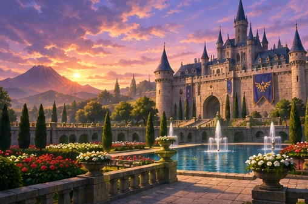

The Hero’s Ledger
Complete published route · Switch 2 remake · Research 2026-11-23 · Target 1.1.1
No console playthrough was performed. Verification uses the linked remake-specific written guides and reported gameplay evidence.
A complete official physical-button chart was not located online. Button labels are attributed to remake control-card reporting; Nintendo confirms the mechanics.
Fairy Thought totals conflict: a dedicated guide enumerates 15 while a community map advertises 19. Source-listed entries are included as additional activities; this is not a verified exhaustive Thought inventory.
The exact official weighting and full event list of ZELDA NOTES completion are unresolved. App-only records and future amiibo masks do not count toward this browser's base-game percentage.
The 36-grotto catalogue uses a stated counting convention; several locations remain reported rather than independently verified. In particular grotto-17, grotto-25, grotto-29 and grotto-36 retain explicit uncertainty. Complete all-chest and all-84-statue manifests also require further independent verification.
Episode 1: One Sword, One Shield... Let's Save Hyrule
Estimated playtime: 20-30 minutes. Includes starting equipment, the full Deku Tree sweep and Gohma. Experienced-player estimate based on your 9-15-hour OG/3DS 100% pace, including listed pickups. Unfamiliar remake changes, reading, commentary and breaks add time. This is gameplay/recording time, not edited video length.
1. Kokiri Forest: sword, shield and supplies
Kokiri Forest · Child · Any
- Start at Link’s house. Go southwest to the training clearing and stone arch. Follow the dark passage, crawl beneath the slabs, climb the rope ladder and jump to the chest ledge for the Kokiri Sword. Return by the stone steps.
- Gather rupees from Mido’s house chests, grass and the village’s ledges. Buy a Deku Shield for 40 rupees at the northeast shop; equip both sword and shield, then show Mido to pass east to the Deku Tree.
- Cut the Deku Babas on the way for sticks and nuts. A straight stalk yields a stick; a defeated writhing plant yields nuts. Keep sticks for lighting webs in the dungeon.
- Open the village chests as you pass; do not spend time farming a full wallet. Buy nothing else before the first dungeon.
Visit checklist
- ☐ kokiri-sword — Kokiri Sword (Child; Any): Start at Link’s house. Go southwest to the training clearing and stone arch. Follow the dark passage, crawl beneath the slabs, climb the rope ladder and jump to the chest ledge for the Kokiri Sword. Return by the stone steps.
Requires: No additional item
- ☐ deku-shield — Deku Shield (Child; Any): Gather rupees from Mido’s house chests, grass and the village’s ledges. Buy a Deku Shield for 40 rupees at the northeast shop; equip both sword and shield, then show Mido to pass east to the Deku Tree.
Requires: No additional item
- ☐ deku-sticks — Deku Sticks (Child; Any): Cut the Deku Babas on the way for sticks and nuts. A straight stalk yields a stick; a defeated writhing plant yields nuts. Keep sticks for lighting webs in the dungeon.
Requires: No additional item
- ☐ deku-nuts — Deku Nuts (Child; Any): Cut the Deku Babas on the way for sticks and nuts. A straight stalk yields a stick; a defeated writhing plant yields nuts. Keep sticks for lighting webs in the dungeon.
Requires: No additional item
Expected: 0 tokens · 0 heart pieces · 0 boss containers · 3 hearts.
Next: r02
Sources: Nintendo Life — Hub · ZeldaCentral remake — Kokiri
2. Great Deku Tree: clear the whole first dungeon
Great Deku Tree · Child · Any
Before proceeding: The Slingshot exit and fourth Skulltula differ from the N64 game. Collect all four tokens on this visit.
- Climb the central ramp: open the Map chest beside the vine wall. Shield-reflect the Scrub’s seed in the upper door. Cross the collapsing platform and climb to the Slingshot chest; open the small side-vine chest. Shoot the switch above the exit to lower the escape platform.
- Shoot the spiders off the main vines; climb to 3F. In the west switch room raise the platforms, collect the alcove token, Compass and the small chest through the crawlspace. Relight the exit torch with a stick.
- Jump from 3F into the centre of the floor web. Collect both basement tokens. Press the torch switch and open the web-covered chest. Carry fire to the south doorway; reflect the Scrub and shoot the eye above the exit.
- Dive onto the underwater switch to lower the water beneath the rotating log; ride the platform through. Move the next block to the high door. Light both torches, defeat the falling larvae, and burn both webs: the side passage now leads straight to the fourth token, without a Boomerang revisit.
- Crawl back to the upper basement ledge, push the block down, fetch torch fire and burn the floor web. Reflect the three Scrubs middle, right, left. Enter Gohma’s door.
Queen Gohma
Target her eye. Fire the Slingshot when the eye changes colour, then strike repeatedly with the sword while she is stunned. Shoot the exposed eye again on the ceiling to interrupt egg laying. Collect the Heart Container before taking the blue warp.
Queen Gohma quick strategy
- Keep the Slingshot ready and face her eye. Shoot as soon as it opens and turns red.
- Close the gap while she is down and slash the eye until she starts to rise.
- Follow her up the wall with your aim. A ceiling stun drops her back into sword range before the eggs hatch.
Visit checklist
- ☐ slingshot — Fairy Slingshot (Child; Any): Climb the central ramp: open the Map chest beside the vine wall. Shield-reflect the Scrub’s seed in the upper door. Cross the collapsing platform and climb to the Slingshot chest; open the small side-vine chest. Shoot the switch above the exit to lower the escape platform. Target her eye. Fire the Slingshot when the eye changes colour, then strike repeatedly with the sword while she is stunned. Shoot the exposed eye again on the ceiling to interrupt egg laying. Collect the Heart Container before taking the blue warp.
Requires: No additional item
- ☐ map-deku — Great Deku Tree Map (Child; Any): Climb the central ramp: open the Map chest beside the vine wall. Shield-reflect the Scrub’s seed in the upper door. Cross the collapsing platform and climb to the Slingshot chest; open the small side-vine chest. Shoot the switch above the exit to lower the escape platform. Shoot the spiders off the main vines; climb to 3F. In the west switch room raise the platforms, collect the alcove token, Compass and the small chest through the crawlspace. Relight the exit torch with a stick. Jump from 3F into the centre of the floor web. Collect both basement tokens. Press the torch switch and open the web-covered chest. Carry fire to the south doorway; reflect the Scrub and shoot the eye above the exit. Dive onto the underwater switch to lower the water beneath the rotating log; ride the platform through. Move the next block to the high door. Light both torches, defeat the falling larvae, and burn both webs: the side passage now leads straight to the fourth token, without a Boomerang revisit. Crawl back to the upper basement ledge, push the block down, fetch torch fire and burn the floor web. Reflect the three Scrubs middle, right, left. Enter Gohma’s door. Target her eye. Fire the Slingshot when the eye changes colour, then strike repeatedly with the sword while she is stunned. Shoot the exposed eye again on the ceiling to interrupt egg laying. Collect the Heart Container before taking the blue warp.
Requires: No additional item
- ☐ compass-deku — Great Deku Tree Compass (Child; Any): Shoot the spiders off the main vines; climb to 3F. In the west switch room raise the platforms, collect the alcove token, Compass and the small chest through the crawlspace. Relight the exit torch with a stick.
Requires: No additional item
- ☐ Boss Heart Container #1 of 8 - hc-01 — Queen Gohma Heart Container (Child; Any): Crawl back to the upper basement ledge, push the block down, fetch torch fire and burn the floor web. Reflect the three Scrubs middle, right, left. Enter Gohma’s door.
Requires: No additional item
- ☐ kokiri-emerald — Kokiri Emerald (Child; Any): Climb the central ramp: open the Map chest beside the vine wall. Shield-reflect the Scrub’s seed in the upper door. Cross the collapsing platform and climb to the Slingshot chest; open the small side-vine chest. Shoot the switch above the exit to lower the escape platform. Shoot the spiders off the main vines; climb to 3F. In the west switch room raise the platforms, collect the alcove token, Compass and the small chest through the crawlspace. Relight the exit torch with a stick. Jump from 3F into the centre of the floor web. Collect both basement tokens. Press the torch switch and open the web-covered chest. Carry fire to the south doorway; reflect the Scrub and shoot the eye above the exit. Dive onto the underwater switch to lower the water beneath the rotating log; ride the platform through. Move the next block to the high door. Light both torches, defeat the falling larvae, and burn both webs: the side passage now leads straight to the fourth token, without a Boomerang revisit. Crawl back to the upper basement ledge, push the block down, fetch torch fire and burn the floor web. Reflect the three Scrubs middle, right, left. Enter Gohma’s door. Target her eye. Fire the Slingshot when the eye changes colour, then strike repeatedly with the sword while she is stunned. Shoot the exposed eye again on the ceiling to interrupt egg laying. Collect the Heart Container before taking the blue warp.
Requires: No additional item
- ☐ chests-deku — Great Deku Tree chest sweep (Child; Any): Climb the central ramp: open the Map chest beside the vine wall. Shield-reflect the Scrub’s seed in the upper door. Cross the collapsing platform and climb to the Slingshot chest; open the small side-vine chest. Shoot the switch above the exit to lower the escape platform. Shoot the spiders off the main vines; climb to 3F. In the west switch room raise the platforms, collect the alcove token, Compass and the small chest through the crawlspace. Relight the exit torch with a stick. Jump from 3F into the centre of the floor web. Collect both basement tokens. Press the torch switch and open the web-covered chest. Carry fire to the south doorway; reflect the Scrub and shoot the eye above the exit.
Requires: No additional item
- ☐ Gold Skulltula #1 of 100 - gs-004 — Compass alcove (Child; Any): Raise the compass-room platforms with the switch; cross left and collect the south-wall spider.
Requires: Slingshot
- ☐ Gold Skulltula #2 of 100 - gs-005 — Basement vines (Child; Any): After breaking the central web, turn around. Shoot the spider on the exit vines, then climb for its token.
Requires: Slingshot
- ☐ Gold Skulltula #3 of 100 - gs-006 — Basement grate (Child; Any): In the basement stream room, inspect the northern bars beside the torch and web; shoot and collect the spider.
Requires: Slingshot
- ☐ Gold Skulltula #4 of 100 - gs-007 — Gohma Larva annex (Child; Any): In the three-larva room, burn the left web with a lit stick. Follow the short passage; shoot the vine spider and climb.
Requires: Deku Stick, Slingshot
Expected: 4 tokens · 0 heart pieces · 1 boss containers · 4 hearts.
Next: r03
Sources: VGC: Deku Tree Skulltulas · Nintendo Life — Deku · ZeldaCentral remake — Deku
Episode 2: Sneaking Into Hyrule Castle Changes Everything
Estimated playtime: 20-35 minutes. Castle stealth, story dialogue, Lost Woods games and soil tokens; memory-game retries can add time. Experienced-player estimate based on your 9-15-hour OG/3DS 100% pace, including listed pickups. Unfamiliar remake changes, reading, commentary and breaks add time. This is gameplay/recording time, not edited video length.
3. Castle Town and Zelda: the new bottle errand
Hyrule Castle · Child · Day, then night errands
Before proceeding: The egg, hatched Cucco and Zelda’s Letter are successive temporary quest states; collecting every state does not mean keeping all of them at once.
- Leave Kokiri Forest west; Saria gives you the Fairy Ocarina. Cross Hyrule Field north to Castle Town. Cross the drawbridge and take the first door on the right. Smash the guardhouse pots for about 20 to 30 rupees when the room is full. Roll into the moving crate for its token.
- In the east Potion Shop accept the borrowed bottle, catch the shop’s crawling bug, and show it to the merchant. You keep the bottle, with Red Potion: this is the remake’s additional bottle.
- Talk to Malon in the market and then by the castle approach to receive the Weird Egg. Climb the vines behind her and bypass the gate along the upper path. Stay outside the guards’ view; cross the moat and use the hatched Cucco to wake Talon at the crates.
- Move the milk crates to reach the crawlspace. Cross the garden using hedges and moving guards as cover. Speak to Zelda, accept her Letter, then follow Impa to learn Zelda’s Lullaby.
- Before departing at night, bring the white dog near the market stalls to its owner in the back alley for the associated Heart Piece. Do the daytime shooting game in r09 with the ranch visit.
Repeatable rupee grind: Kakariko bugs (20 rupees per bottle)
As Child Link, take an empty bottle to the Hyrule Field side of the Kakariko entrance. Cut the grass against the cliff and scoop up a bug. In Castle Town Market, show the bottle to the buyer under the stairs west of the fountain. He pays 20 rupees and you keep the bottle. Return to the patch for another run. If the grass is bare, step into Kakariko and come back. Five bottle sales cover the 100-rupee offering at Zora's Fountain.
Castle Town Shooting Gallery: 10 rupees profit per perfect replay
Visit the Market gallery by day as Child Link. Win the seed bag first. After that, a standard round costs 10 rupees and a perfect score pays 20. Stay at the counter to play again if you can hit all ten targets consistently.
Visit checklist
- ☐ fairy-ocarina — Fairy Ocarina (Child; Day, then night errands): Leave Kokiri Forest west; Saria gives you the Fairy Ocarina. Cross Hyrule Field north to Castle Town. Cross the drawbridge and take the first door on the right. Smash the guardhouse pots for about 20 to 30 rupees when the room is full. Roll into the moving crate for its token.
Requires: No additional item
- ☐ Bottle #1 of 5 - bottle-potion — Potion Shop bottle (Child; Day, then night errands): In the east Potion Shop accept the borrowed bottle, catch the shop’s crawling bug, and show it to the merchant. You keep the bottle, with Red Potion: this is the remake’s additional bottle.
Requires: No additional item
- ☐ weird-egg — Weird Egg and Wake-up Cucco (Child; Day, then night errands): Talk to Malon in the market and then by the castle approach to receive the Weird Egg. Climb the vines behind her and bypass the gate along the upper path. Stay outside the guards’ view; cross the moat and use the hatched Cucco to wake Talon at the crates.
Requires: No additional item
- ☐ zelda-letter — Zelda’s Letter (Child; Day, then night errands): Move the milk crates to reach the crawlspace. Cross the garden using hedges and moving guards as cover. Speak to Zelda, accept her Letter, then follow Impa to learn Zelda’s Lullaby.
Requires: No additional item
- ☐ zelda-lullaby — Zelda’s Lullaby (Child; Day, then night errands): Move the milk crates to reach the crawlspace. Cross the garden using hedges and moving guards as cover. Speak to Zelda, accept her Letter, then follow Impa to learn Zelda’s Lullaby.
Requires: No additional item
- ☐ Gold Skulltula #5 of 100 - gs-008 — Kokiri approach tree (Either; Any): Roll into the isolated tree west of the Kokiri exit, beside the stream; kill the fallen spider.
Requires: No additional item
Verification note: Tree location is corroborated; RPG Site calls its spawn nocturnal while Nintendo Life/VGC do not. Visit at night if absent.
- ☐ Gold Skulltula #6 of 100 - gs-011 — Entrance guardhouse crate (Child; Any): Enter the pot-filled house right of the town drawbridge. Roll through the rattling rear crate; kill its spider.
Requires: No additional item
- ☐ Gold Skulltula #7 of 100 - gs-012 — Garden tree (Child; Night): Past the guards near the hedge maze and vine-covered building, roll into the garden tree at night.
Requires: No additional item
- ☐ Piece of Heart #1 of 36 - hp-029 — Richard the dog (Child; Night): At night find the alley white dogs. Lead one to Richard's owner by the market entrance; try another if rejected.
Requires: No additional item
Expected: 7 tokens · 1 heart pieces · 1 boss containers · 4 hearts.
Next: r04
Sources: 100% Guides - How to Farm Rupees · Nintendo Life: all remake Heart Pieces · VGC: Castle Skulltulas · VGC: Hyrule Field Skulltulas · Nintendo Life — Castle · QuestFern - Rupees, Wallets and All Shops · VGC — all five remake bottles
4. Lost Woods: Saria, target game and stick capacity
Lost Woods · Child · Any; night for forest token
Before proceeding: Target-game source conflict: RPG Site describes three 100-point bullseyes, while ZeldaCentral describes a multiple-target clearing. Follow the remake’s displayed game and achieve its perfect score; the upgrade is verified, but this exact minigame setup is not independently settled.
- If the Potion Shop bottle still contains Red Potion, drink it when useful, then catch a bug beside the broken field cart or under a loose rock. Keep a bug ready before releasing it into any soft soil; collect another before the next patch.
- From Kokiri Forest climb the northwest ledge and vines into the Lost Woods. At the first right, hit the hanging target’s centre three times; every shot must score 100. This grants a seed-capacity upgrade. Drop down and copy the Skull Kids’ increasingly long music phrases for their Heart Piece.
- From the forest entrance, follow right, left, right, left, straight, left, right to the Sacred Grove. Defeat the Wolfos, work through the hedge maze, and meet Saria at the far steps for Saria’s Song.
- Return to the Lost Woods entrance and take the first left. Play Saria’s Song for the lone Skull Kid’s Heart Piece. Continue left to the bridge overlook and defeat the Business Scrub by reflecting its seed; buy the stick-capacity upgrade for 40 rupees.
- Keep a bottled bug for the soil patches listed with this visit. The Forest Stage mask rewards wait until r12, when the mask circuit and Boomerang pickups can be combined.
Visit checklist
- ☐ saria-song — Saria’s Song (Child; Any; night for forest token): From the forest entrance, follow right, left, right, left, straight, left, right to the Sacred Grove. Defeat the Wolfos, work through the hedge maze, and meet Saria at the far steps for Saria’s Song. Return to the Lost Woods entrance and take the first left. Play Saria’s Song for the lone Skull Kid’s Heart Piece. Continue left to the bridge overlook and defeat the Business Scrub by reflecting its seed; buy the stick-capacity upgrade for 40 rupees.
Requires: No additional item
- ☐ seed-bag-1 — First Deku Seed Bag upgrade (Child; Any; night for forest token): From the Kokiri Forest entrance to Lost Woods, take the first right. Shoot the hanging target for the perfect score shown by the game; the documented route calls for three 100-point bullseyes. Talk to the rewarding Deku Scrub. This is the first seed-bag upgrade in this route. See the section warning about the disputed target layout.
Requires: No additional item
- ☐ stick-bag-1 — First Deku Stick capacity upgrade (Child; Any; night for forest token): From the Lost Woods entrance take left, then left again to the bridge overlook. Deflect the Business Scrub's shot with your shield, approach when it surrenders and pay 40 rupees for the stick-capacity upgrade.
Requires: No additional item
- ☐ grotto-21 — Maze fairy hole (Child; Any): At the maze's far end by the ladder below Saria's stairs, turn back toward the walled grassy courtyard. Walk through its ground-level doorway and drop into the open fairy hole.
Requires: No additional item
Verification note: Sources describe both the far-end ladder and the central walled courtyard; use the open hole inside that courtyard. This is a healing fountain, separate from a Great Fairy reward.
- ☐ Gold Skulltula #8 of 100 - gs-001 — Shop soil (Child; Any): Release a bug into the soil behind the shop; defeat the emerging spider.
Requires: Bottled Bug
- ☐ Gold Skulltula #9 of 100 - gs-003 — Know-It-All Brothers' house (Child; Night): Circle behind the southwest house; kill the wall spider and jump to its token.
Requires: No additional item
- ☐ Piece of Heart #2 of 36 - hp-003 — Skull Kids' memory game (Child; Any): Take the first right in the woods and drop to the two Skull Kids. Stand on their empty stump; repeat all three rounds.
Requires: Ocarina
- ☐ Piece of Heart #3 of 36 - hp-002 — Saria's Song Skull Kid (Child; Any): From the woods entrance go left. Stand on the empty stump opposite Skull Kid and play Saria's Song.
Requires: Saria's Song
- ☐ Gold Skulltula #10 of 100 - gs-033 — Two-left-turn soil (Child; Any): From the woods entrance take left, left. Release a bug into the soil in this clearing.
Requires: Bottled Bug
- ☐ Gold Skulltula #11 of 100 - gs-034 — Business Scrub clearing soil (Child; Any): Take right, left, right, left, left from the entrance. Release a bug into the soil near the two scrubs.
Requires: Bottled Bug
Expected: 11 tokens · 3 heart pieces · 1 boss containers · 4 hearts.
Next: r05
Sources: KeenGamer: all remake Heart Pieces · VGC: Kokiri Forest, Lost Woods and Sacred Grove Skulltulas · Nexzy: Maze fairy hole · Nintendo Life — Woods · ZeldaCentral remake — Upgrades
Episode 3: Kakariko Is Hiding More Than You Think
Estimated playtime: 25-40 minutes. Cucco gathering, village night tokens, grave digging and the Goron City visit; digging luck varies. Experienced-player estimate based on your 9-15-hour OG/3DS 100% pace, including listed pickups. Unfamiliar remake changes, reading, commentary and breaks add time. This is gameplay/recording time, not edited video length.
5. Kakariko and Graveyard: Cuccos, Sun’s Song and digging
Kakariko Village · Child · Day for Cuccos; early night for digging
Before proceeding: Cuccos needed to glide to the roof are inconvenient after returning them all; take the roof reward first. Digging and racing Dampe are different activities in different ages.
- Return all seven Kakariko Cuccos: central construction site; Hyrule Field entrance; below Death Mountain steps; the brick pile west of House of Skulltula; wobbling crate by the northern ground-level house; behind the eastern fence; and the high ledge reached by that fenced area’s ladder. Carry a second Cucco from high ground to glide onto the brick pile and over the windmill-side fence; toss the trapped birds out before leaving.
- Use a Cucco to reach the high blue-roof house and speak to the man for the rooftop Heart Piece before returning the last bird. The Cucco lady awards the third bottle in this route.
- Show Zelda’s Letter to the north gate guard to open Death Mountain and start the Happy Mask Shop lead.
- At the back of the Graveyard play Zelda’s Lullaby on the Royal Tomb’s Triforce. Defeat the Keese, cross past the ReDeads and read the rear inscription for Sun’s Song.
- At night pull the marked southeastern graves: take the Hylian Shield from its chest; in the far back-right grave take the relocated Heart Piece. During Dampe’s early-night digging shift, pay at soft-soil spots until he uncovers the Heart Piece; accept extra digging when he finds something hard. Pick up the reward immediately.
- Use Sun’s Song for the village night tokens. Claim the 10-token wallet reward as soon as your checked token count qualifies. Talk to the family to register the House of Skulltula quest, the additional sidequest omitted from some six-quest lists.
Reliable digging
Keep money for repeat attempts; a hard object can also be a stone. This is a random reward, so the guide cannot promise a fixed number of tries. Spend on the Heart Piece once, then stop.
Visit checklist
- ☐ Bottle #2 of 5 - bottle-cuccos — Cucco Lady bottle (Child; Day for Cuccos; early night for digging): Use a Cucco to reach the high blue-roof house and speak to the man for the rooftop Heart Piece before returning the last bird. The Cucco lady awards the third bottle in this route.
Requires: No additional item
- ☐ hylian-shield — Hylian Shield (Child; Day for Cuccos; early night for digging): At night pull the marked southeastern graves: take the Hylian Shield from its chest; in the far back-right grave take the relocated Heart Piece. During Dampe’s early-night digging shift, pay at soft-soil spots until he uncovers the Heart Piece; accept extra digging when he finds something hard. Pick up the reward immediately.
Requires: No additional item
- ☐ sun-song — Sun’s Song (Child; Day for Cuccos; early night for digging): At the back of the Graveyard play Zelda’s Lullaby on the Royal Tomb’s Triforce. Defeat the Keese, cross past the ReDeads and read the rear inscription for Sun’s Song. Use Sun’s Song for the village night tokens. Claim the 10-token wallet reward as soon as your checked token count qualifies. Talk to the family to register the House of Skulltula quest, the additional sidequest omitted from some six-quest lists.
Requires: No additional item
- ☐ adult-wallet — Adult Wallet: 500 rupees (Child; Day for Cuccos; early night for digging): Use Sun’s Song for the village night tokens. Claim the 10-token wallet reward as soon as your checked token count qualifies. Talk to the family to register the House of Skulltula quest, the additional sidequest omitted from some six-quest lists.
Requires: No additional item
- ☐ thought-01 — Field: Kakariko path (Child; Any): Inspect the swirl on mossy wall beside tree.
Requires: No additional item
Verification note: Source-listed location; exhaustive Thought total remains disputed.
- ☐ thought-06 — Royal tomb: poison room (Child; Any): Inspect broken pillar beyond poison pools.
Requires: No additional item
Verification note: Source-listed location; exhaustive Thought total remains disputed.
- ☐ grotto-02 — Potion Shop rear yard (Child; Any): Carry a Cucco over the fence behind the Potion Shop, walk by Granny's steps, and drop into the open hole. Open the blue-rupee chest and inspect the Gossip Stone.
Requires: Cucco
Verification note: Optional visit only; any heart piece, token or permanent reward here has its own core objective and is not counted twice.
- ☐ grotto-03 — Rear-right Heart Piece grave (Child; Night): At night pull the last tombstone in the rear-right row. Descend to the chest containing hp-008; this visit does not award a second heart piece.
Requires: No additional item
Verification note: Optional visit only; any heart piece, token or permanent reward here has its own core objective and is not counted twice.
- ☐ grotto-04 — ReDead shield grave (Child; Night): From the Heart Piece grave, inspect the same row a few graves left. Pull the stone at night, freeze the ReDead with Sun's Song, defeat it, and open the shield chest.
Requires: Sun's Song
Verification note: Optional visit only; any heart piece, token or permanent reward here has its own core objective and is not counted twice.
- ☐ Piece of Heart #4 of 36 - hp-006 — Rooftop man's gift (Child; Any): Glide a Cucco over the windmill-side fence, climb the ladders, and use the upper Cucco to land by the rooftop man. Speak to him.
Requires: Cucco
- ☐ Gold Skulltula #12 of 100 - gs-020 — West soil (Child; Any): Release a bug into the soil on the west side of the graveyard; kill the emerging spider.
Requires: Bottled Bug
- ☐ Piece of Heart #5 of 36 - hp-008 — Rear-right grave chest (Child; Night): Pull the loose tombstone at the rear right of the graveyard. Descend and open the chest; no Sun's Song is required.
Requires: No additional item
- ☐ Piece of Heart #6 of 36 - hp-009 — Dampé's digging tour (Child; Night): Pay Dampé 10 rupees per dig on soil patches. Keep a reserve for extra digging fees; accept the piece when uncovered.
Requires: Rupees
Verification note: Digging fees vary; keep rupees for surcharges. No guaranteed dig spot is verified.
- ☐ Gold Skulltula #13 of 100 - gs-016 — Central tree (Child; Night): Roll into the village's lone central tree at night; kill the fallen spider and touch its token.
Requires: No additional item
- ☐ Gold Skulltula #14 of 100 - gs-015 — Skulltula House doorway (Child; Night): At night inspect the wall directly beside the House of Skulltula entrance; kill its low spider.
Requires: No additional item
- ☐ Gold Skulltula #15 of 100 - gs-014 — Building site (Child; Night): At night circle the central construction site. Climb its low structure to kill and collect the gold spider.
Requires: No additional item
- ☐ Gold Skulltula #16 of 100 - gs-017 — Watchtower ladder (Child; Night): Shoot the gold spider on the watchtower ladder at night, then climb the ladder to the token.
Requires: Slingshot
- ☐ Gold Skulltula #17 of 100 - gs-018 — Mountain-gate house (Child; Night): At night walk behind the northwest house closest to the Death Mountain gate; collect its wall spider.
Requires: No additional item
Expected: 17 tokens · 6 heart pieces · 1 boss containers · 5 hearts.
Next: r06
Sources: KeenGamer: all remake Heart Pieces · QuestFern: all remake Heart Pieces · VGC: Kakariko and Graveyard Skulltulas · GameClubz: 15 source-listed Fairy Thoughts · Nexzy: Potion Shop rear yard · Nexzy: Rear-right Heart Piece grave · Nexzy: ReDead shield grave · Nintendo Life — Cuccos · Nintendo Life — Sun · RPG Site — remake minimalist 100% route
6. Goron City: Darunia and the cavern entrance
Death Mountain · Child · Any
- Climb Death Mountain Trail to Goron City. Descend to the lowest floor, play Zelda’s Lullaby at Darunia’s sealed door, then Saria’s Song in front of him to earn the Goron’s Bracelet.
- Use fire from Darunia’s room to light the lower-floor torches and start the giant pot spinning; throw Bomb Flowers into the pot until its reward includes the Heart Piece. Face its smiling result; repeated rupee outcomes do not mean a new permanent reward.
- Open the Lost Woods shortcut by detonating the Bomb Flowers at its stone blockage. Leave through the upper city exit. Outside, pick up the Bomb Flower by the fence and throw it onto the boulder below to open Dodongo Cavern.
- Do not attempt the old child jump onto the Heart Piece above the cavern: the remake routes that reward through the adult bean plant. Plant the bean when obtained in r12.
Visit checklist
- ☐ goron-bracelet — Goron’s Bracelet (Child; Any): Climb Death Mountain Trail to Goron City. Descend to the lowest floor, play Zelda’s Lullaby at Darunia’s sealed door, then Saria’s Song in front of him to earn the Goron’s Bracelet.
Requires: No additional item
- ☐ goron-woods-shortcut — Goron City–Lost Woods shortcut (Child; Any): Open the Lost Woods shortcut by detonating the Bomb Flowers at its stone blockage. Leave through the upper city exit. Outside, pick up the Bomb Flower by the fence and throw it onto the boulder below to open Dodongo Cavern.
Requires: No additional item
- ☐ Piece of Heart #7 of 36 - hp-025 — Spinning Goron pot (Child; Any): Light the lowest-floor torches from Darunia's flame. With the Goron Bracelet, pick up a Bomb Flower and throw it into the spinning pot from above; collect the Heart Piece from its smiling result below.
Requires: Goron Bracelet, Deku Stick
Expected: 17 tokens · 7 heart pieces · 1 boss containers · 5 hearts.
Next: r07
Sources: Nintendo Life: all remake Heart Pieces · Nintendo Life — Dodongo · RPG Site — remake minimalist 100% route
Episode 4: Bombs, Dodongos and a Trip Up Death Mountain
Estimated playtime: 25-40 minutes. Full Dodongo Cavern route, boss, summit fountain and mountain pickups. Experienced-player estimate based on your 9-15-hour OG/3DS 100% pace, including listed pickups. Unfamiliar remake changes, reading, commentary and breaks add time. This is gameplay/recording time, not edited video length.
7. Dodongo Cavern: bombs and the Ruby
Dodongo Cavern · Child · Any
- Bomb the entrance and western map alcove; open the other main-room rupee chest. Take the southeast passage, use a Baby Dodongo’s explosion on the side wall for the token, weight the switch with an Armos, and defeat both Lizalfos for the new rupee chest.
- Light the three torches in the Dodongo corridor and press the switch back in the main room. Enter northwest. Bomb the side chamber and defeat the Armos for the Compass. Place a Bomb Flower in the gap in the long flower row to drop the staircase.
- Climb upstairs, move the inert statue from the ladder and press the switch. Cross the bridge. In the blade-trap room move the block to climb, throw a Bomb Flower onto the cracked upper door, and continue through the eye-switch flame platforms and next Lizalfos encounter.
- Cross to the Bomb Bag chest. Use the bridge switch to create the main-room shortcut. Bomb the side wall here for the optional chest before dropping bombs into both giant skull eye sockets to open its mouth.
- Inside the mouth, follow the side corridor round; push the block through the loop and drop it onto the central switch. Open the small chest before bombing the boss-floor crack. Leave the higher Scarecrow-dependent token to r26.
King Dodongo
When he inhales, throw a bomb into his mouth and strike his lowered head. When he rolls, stand close to the inner lava edge without entering it, let him pass and repeat. Collect the Heart Container and warp.
King Dodongo quick strategy
- Have a bomb ready and stand in front of his mouth. Throw it as he takes a breath.
- Move to his head while the bomb goes off. Slash until he starts to roll.
- Wait beside the inner lava edge for the roll to pass, then turn to meet his next inhale with another bomb.
Visit checklist
- ☐ bomb-bag — Bomb Bag: 20 bombs (Child; Any): Cross to the Bomb Bag chest. Use the bridge switch to create the main-room shortcut. Bomb the side wall here for the optional chest before dropping bombs into both giant skull eye sockets to open its mouth.
Requires: No additional item
- ☐ map-dodongo — Dodongo Cavern Map (Child; Any): Bomb the entrance and western map alcove; open the other main-room rupee chest. Take the southeast passage, use a Baby Dodongo’s explosion on the side wall for the token, weight the switch with an Armos, and defeat both Lizalfos for the new rupee chest. Light the three torches in the Dodongo corridor and press the switch back in the main room. Enter northwest. Bomb the side chamber and defeat the Armos for the Compass. Place a Bomb Flower in the gap in the long flower row to drop the staircase.
Requires: No additional item
- ☐ compass-dodongo — Dodongo Cavern Compass (Child; Any): Light the three torches in the Dodongo corridor and press the switch back in the main room. Enter northwest. Bomb the side chamber and defeat the Armos for the Compass. Place a Bomb Flower in the gap in the long flower row to drop the staircase.
Requires: No additional item
- ☐ Boss Heart Container #2 of 8 - hc-02 — King Dodongo Heart Container (Child; Any): Bomb the entrance and western map alcove; open the other main-room rupee chest. Take the southeast passage, use a Baby Dodongo’s explosion on the side wall for the token, weight the switch with an Armos, and defeat both Lizalfos for the new rupee chest. Light the three torches in the Dodongo corridor and press the switch back in the main room. Enter northwest. Bomb the side chamber and defeat the Armos for the Compass. Place a Bomb Flower in the gap in the long flower row to drop the staircase.
Requires: No additional item
- ☐ goron-ruby — Goron’s Ruby (Child; Any): Bomb the entrance and western map alcove; open the other main-room rupee chest. Take the southeast passage, use a Baby Dodongo’s explosion on the side wall for the token, weight the switch with an Armos, and defeat both Lizalfos for the new rupee chest. Light the three torches in the Dodongo corridor and press the switch back in the main room. Enter northwest. Bomb the side chamber and defeat the Armos for the Compass. Place a Bomb Flower in the gap in the long flower row to drop the staircase. Climb upstairs, move the inert statue from the ladder and press the switch. Cross the bridge. In the blade-trap room move the block to climb, throw a Bomb Flower onto the cracked upper door, and continue through the eye-switch flame platforms and next Lizalfos encounter. Cross to the Bomb Bag chest. Use the bridge switch to create the main-room shortcut. Bomb the side wall here for the optional chest before dropping bombs into both giant skull eye sockets to open its mouth. Inside the mouth, follow the side corridor round; push the block through the loop and drop it onto the central switch. Open the small chest before bombing the boss-floor crack. Leave the higher Scarecrow-dependent token to r26. When he inhales, throw a bomb into his mouth and strike his lowered head. When he rolls, stand close to the inner lava edge without entering it, let him pass and repeat. Collect the Heart Container and warp.
Requires: No additional item
- ☐ chests-dodongo — Dodongo Cavern accessible chests (Child; Any): Bomb the entrance and western map alcove; open the other main-room rupee chest. Take the southeast passage, use a Baby Dodongo’s explosion on the side wall for the token, weight the switch with an Armos, and defeat both Lizalfos for the new rupee chest. Light the three torches in the Dodongo corridor and press the switch back in the main room. Enter northwest. Bomb the side chamber and defeat the Armos for the Compass. Place a Bomb Flower in the gap in the long flower row to drop the staircase.
Requires: No additional item
- ☐ Gold Skulltula #18 of 100 - gs-040 — East corridor hidden chamber (Child; Any): In the southeast Baby Dodongo corridor, explode a bomb or dying Baby Dodongo beside the cracked wall; collect the side-room spider.
Requires: Bombs or Baby Dodongo
- ☐ Gold Skulltula #19 of 100 - gs-041 — Bomb stairs rear vines (Child; Any): Lower the giant bomb stairs, climb them, and circle behind their top. Shoot the vine spider and climb to its token.
Requires: Slingshot
- ☐ Gold Skulltula #20 of 100 - gs-042 — Two-Dodongo circular room (Child; Any): Before bombing the giant skull's eyes, inspect the round room with two Dodongos. Walk behind its central pillar for the spider.
Requires: No additional item
- ☐ Gold Skulltula #21 of 100 - gs-043 — Skull-mouth block loop (Child; Any): Beyond the opened skull mouth, follow the block-pushing loop. Bomb the optional wall and defeat the Armos to reach the spider.
Requires: Bombs
Expected: 21 tokens · 7 heart pieces · 2 boss containers · 6 hearts.
Next: r08
Sources: VGC: Dodongo Cavern Skulltulas · Nintendo Life — Dodongo · ZeldaCentral remake — Dodongo
8. Death Mountain summit: Din’s Fire and magic
Death Mountain · Child · Any
Before proceeding: Fairy rewards have moved: Din’s Fire is at the summit in this remake, not at the old N64 Castle fountain. Pay the stated offering; older free-fountain instructions do not apply.
- From the trail junction bomb the boulders toward the summit. Equip the Hylian Shield against the falling-rock eruption, kill wall spiders with the Slingshot and climb in stages.
- Bomb the summit fountain entrance. Play Zelda’s Lullaby on its Triforce and pay the remake’s 25-rupee offering: receive the magic meter and Din’s Fire.
- Quickly enter the crater only for its entrance-crate token if you want it now; leave the wall Heart Piece until r29 when the route has more hearts and a planned return. The remake applies heat damage after a grace period rather than the N64 countdown; healing can extend survival, but this route avoids unnecessary early exposure.
- The owl offers transport down to Kakariko. Use it if returning to the village; otherwise descend normally to finish any trail token. Keep the remaining fountain upgrades for their nearby route visits.
Visit checklist
- ☐ magic-meter — Magic meter (Child; Any): Bomb the summit fountain entrance. Play Zelda’s Lullaby on its Triforce and pay the remake’s 25-rupee offering: receive the magic meter and Din’s Fire.
Requires: No additional item
- ☐ dins-fire — Din’s Fire (Child; Any): Bomb the summit fountain entrance. Play Zelda’s Lullaby on its Triforce and pay the remake’s 25-rupee offering: receive the magic meter and Din’s Fire.
Requires: No additional item
- ☐ thought-07 — Trail: night wall (Child; Night): Leaving Goron City, inspect the left rock wall.
Requires: No additional item
Verification note: Source-listed location; exhaustive Thought total remains disputed.
- ☐ grotto-23 — Climbing-net cow hole (Child; Any): On the ascent beyond the bombable cliff path, inspect the ledge below the climbing net. Bomb the round rock and descend. Inspect the Gossip Stone and cow; milk is available later with Epona's Song and an empty bottle.
Requires: Bombs
Verification note: Optional visit only; any heart piece, token or permanent reward here has its own core objective and is not counted twice.
- ☐ Gold Skulltula #22 of 100 - gs-045 — Boulder-room crate (Child; Any): Bomb through the western boulder room to its two rear chests. Roll through the wooden crate to expose the spider.
Requires: Bombs
- ☐ Gold Skulltula #23 of 100 - gs-036 — Cavern entrance soil (Child; Any): Release a bug into the soil immediately outside Dodongo's Cavern; kill the emerging spider.
Requires: Bottled Bug
- ☐ Gold Skulltula #24 of 100 - gs-037 — Lower cracked wall (Either; Any): Bomb the cracked trail wall above Kakariko; kill the revealed spider and climb to its token.
Requires: Bombs
- ☐ Gold Skulltula #25 of 100 - gs-047 — Summit entrance crates (Child; Any): Enter from the summit at full health. Dash left and break the crates for a spider; leave before the heat kills you.
Requires: No additional item
- ☐ Piece of Heart #8 of 36 - hp-028 — Business Scrub purchase (Child; Any): From the summit entrance go left and drop to the Scrub's lower ledge. Reflect its shot, talk, and buy the piece for 100 rupees; leave promptly.
Requires: Shield, 100 rupees
- ☐ Piece of Heart #9 of 36 - hp-004 — Roof behind Impa's house (Child; Any): Accept the summit owl's ride to Impa's roof. Drop carefully onto the lower roof behind the house beside the cow pen.
Requires: Owl summit ride
Expected: 25 tokens · 9 heart pieces · 2 boss containers · 7 hearts.
Next: r09
Sources: KeenGamer: all remake Heart Pieces · Link Guide: all remake Heart Pieces · VGC: Crater Skulltulas · VGC: Goron City and trail Skulltulas · GameClubz: 15 source-listed Fairy Thoughts · Nexzy: Climbing-net cow hole · Nintendo Life — Fairies · RPG Site — remake minimalist 100% route · ZeldaSpeedRuns — remake differences
Episode 5: Hyrule Has a Minigame Problem... and I Need Every Prize
Estimated playtime: 30-45 minutes. Ranch games, shooting, bowling, river traversal and diving; allow extra time for perfect scores. Experienced-player estimate based on your 9-15-hour OG/3DS 100% pace, including listed pickups. Unfamiliar remake changes, reading, commentary and breaks add time. This is gameplay/recording time, not edited video length.
9. Ranch and Market: Epona’s Song and child games
Lon Lon Ranch · Child · Day; night for ranch tokens
Before proceeding: Bowling prize order and repeat attempts vary. Claim each unique reward once. The Skull Mask must be borrowed again if you sell it before showing the Forest Stage.
- At Lon Lon Ranch talk to Malon in the paddock; show the ocarina, copy her tune and play with her again for Epona’s Song and the Malon’s Friend thread. In the house, win Talon’s three-Super-Cucco search for a milk bottle. Super Cuccos hold their heads higher; track the three he throws rather than grabbing random birds.
- At the southwest ruined building move the crates to uncover the crawlspace and take its Heart Piece. Roll into the tree behind the ranch house for its token. Defer high exterior night tokens to the Boomerang sweep in r12.
- In Castle Town win a perfect round of the basic Shooting Gallery for the next seed-bag upgrade. Keep the reticle at the target’s spawning height and move horizontally; do not chase missed targets.
- At Castle Town’s red-door Bombchu Bowling Alley pay 10 rupees per round. Clear all three lane targets using your ten Bombchus; steer toward the glowing target and wait for obstructing Cuccos to move before releasing. The remake’s unique prizes follow successive wins: Bombchus, Bomb Bag, then Heart Piece. Budget at least 30 rupees plus retries. Do not use the old random prize-cycle instructions.
- Use the market visit to borrow Keaton Mask, sell it to the Kakariko north gate guard, then repay and borrow Skull Mask. Keep Skull Mask for the Forest Stage before selling it in r12.
Visit checklist
- ☐ Bottle #3 of 5 - bottle-talon — Talon’s milk bottle (Child; Day; night for ranch tokens): At Lon Lon Ranch talk to Malon in the paddock; show the ocarina, copy her tune and play with her again for Epona’s Song and the Malon’s Friend thread. In the house, win Talon’s three-Super-Cucco search for a milk bottle. Super Cuccos hold their heads higher; track the three he throws rather than grabbing random birds.
Requires: No additional item
- ☐ epona-song — Epona’s Song (Child; Day; night for ranch tokens): At Lon Lon Ranch talk to Malon in the paddock; show the ocarina, copy her tune and play with her again for Epona’s Song and the Malon’s Friend thread. In the house, win Talon’s three-Super-Cucco search for a milk bottle. Super Cuccos hold their heads higher; track the three he throws rather than grabbing random birds.
Requires: No additional item
- ☐ seed-bag-2 — Second Deku Seed Bag upgrade: 50 (Child; Day; night for ranch tokens): In Castle Town win a perfect round of the basic Shooting Gallery for the next seed-bag upgrade. Keep the reticle at the target’s spawning height and move horizontally; do not chase missed targets.
Requires: No additional item
- ☐ bomb-bag-bowling — Bombchu Bowling Bomb Bag upgrade (Child; Day; night for ranch tokens): At Castle Town’s red-door Bombchu Bowling Alley pay 10 rupees per round. Clear all three lane targets using your ten Bombchus; steer toward the glowing target and wait for obstructing Cuccos to move before releasing. The remake’s unique prizes follow successive wins: Bombchus, Bomb Bag, then Heart Piece. Budget at least 30 rupees plus retries. Do not use the old random prize-cycle instructions.
Requires: No additional item
- ☐ bombchus — Bombchus (Child; Day; night for ranch tokens): At Castle Town’s red-door Bombchu Bowling Alley pay 10 rupees per round. Clear all three lane targets using your ten Bombchus; steer toward the glowing target and wait for obstructing Cuccos to move before releasing. The remake’s unique prizes follow successive wins: Bombchus, Bomb Bag, then Heart Piece. Budget at least 30 rupees plus retries. Do not use the old random prize-cycle instructions.
Requires: No additional item
- ☐ mask-keaton — Keaton Mask traded (Child; Day; night for ranch tokens): Use the market visit to borrow Keaton Mask, sell it to the Kakariko north gate guard, then repay and borrow Skull Mask. Keep Skull Mask for the Forest Stage before selling it in r12.
Requires: No additional item
- ☐ thought-02 — Field: overturned cart (Child; Any): Inspect inside the overturned roadside cart.
Requires: No additional item
Verification note: Source-listed location; exhaustive Thought total remains disputed.
- ☐ thought-03 — Field: pillar grove (Child; Any): Inspect the pillar base in the central grove.
Requires: No additional item
Verification note: Source-listed location; exhaustive Thought total remains disputed.
- ☐ Piece of Heart #10 of 36 - hp-001 — Storage crawlspace (Child; Any): Enter the rear ruined storage building. Move the blocking crates, crawl through the low rear opening, and collect the heart piece.
Requires: No additional item
- ☐ Gold Skulltula #26 of 100 - gs-024 — Garden tree (Child; Any): From the entrance take the left path behind the buildings; roll into the thin garden tree.
Requires: No additional item
- ☐ Piece of Heart #11 of 36 - hp-031 — Bombchu Bowling prize (Child; Any): Play Bombchu Bowling after Dodongo's Cavern. Win the match offering the heart piece by sending Bombchus into each target past the obstacles.
Requires: King Dodongo defeated, Rupees
Expected: 26 tokens · 11 heart pieces · 2 boss containers · 7 hearts.
Next: r10
Sources: KeenGamer: all remake Heart Pieces · Nintendo Life: all remake Heart Pieces · VGC: Lon Lon Ranch Skulltulas · GameClubz: 15 source-listed Fairy Thoughts · Nintendo Life — Epona · VGC — all five remake bottles · ZeldaCentral remake — Minigames
10. Zora River, Domain and Lake Hylia
Zora’s Domain · Child · Day; night for outdoor tokens
- Bomb the river entrance rocks. Buy Magic Beans from the seated seller; prices rise with each purchase, so buy the beans needed for the current soil stops and the coming cleanup instead of emptying the wallet indiscriminately. Use a Cucco to reach the river’s elevated Heart Pieces.
- At the waterfall stand on the Triforce platform and play Zelda’s Lullaby. In the Domain climb to King Zora and pay the diving-game Zora. Jump from the waterfall and gather all marked rupees underwater for the Silver Scale.
- Dive into the underwater tunnel opposite the Domain waterfall to Lake Hylia. With the scale, collect the submerged bottle containing Ruto’s Letter. Plant a bean outside the Lakeside Laboratory and visit the scarecrows: compose a memorable eight-note tune with Bonooru and record it exactly for the adult return.
- Return through the tunnel, show the letter to King Zora, and keep the emptied bottle. Light the Domain’s torch chain, ending behind the waterfall, for its Heart Piece; put away the stick between torches when necessary.
- Catch a small fish in a bottle near the Domain shallows. Pass the king into Zora Fountain; offer the fish in front of Jabu-Jabu to enter. The nearby fountain and outdoor tokens are combined with the post-dungeon visit.
Visit checklist
- ☐ silver-scale — Silver Scale (Child; Day; night for outdoor tokens): At the waterfall stand on the Triforce platform and play Zelda’s Lullaby. In the Domain climb to King Zora and pay the diving-game Zora. Jump from the waterfall and gather all marked rupees underwater for the Silver Scale.
Requires: No additional item
- ☐ Bottle #4 of 5 - bottle-ruto — Ruto’s Letter bottle (Child; Day; night for outdoor tokens): Dive into the underwater tunnel opposite the Domain waterfall to Lake Hylia. With the scale, collect the submerged bottle containing Ruto’s Letter. Plant a bean outside the Lakeside Laboratory and visit the scarecrows: compose a memorable eight-note tune with Bonooru and record it exactly for the adult return.
Requires: No additional item
- ☐ scarecrow-child — Scarecrow tune composed (Child; Day; night for outdoor tokens): Dive into the underwater tunnel opposite the Domain waterfall to Lake Hylia. With the scale, collect the submerged bottle containing Ruto’s Letter. Plant a bean outside the Lakeside Laboratory and visit the scarecrows: compose a memorable eight-note tune with Bonooru and record it exactly for the adult return.
Requires: No additional item
- ☐ magic-beans — Magic Beans (Child; Day; night for outdoor tokens): Bomb the river entrance rocks. Buy Magic Beans from the seated seller; prices rise with each purchase, so buy the beans needed for the current soil stops and the coming cleanup instead of emptying the wallet indiscriminately. Use a Cucco to reach the river’s elevated Heart Pieces.
Requires: No additional item
- ☐ thought-08 — River: dark alcove (Child; Any): Inspect cliff alcove upstream, beside loose rock.
Requires: No additional item
Verification note: Source-listed location; exhaustive Thought total remains disputed.
- ☐ grotto-29 — High-island fairy hole (Child; Any): Carry a Cucco to glide onto the river's central island, catch its vines and climb to the top. Bomb the large boulder and enter the reported fairy fountain below.
Requires: Bombs, Cucco
Verification note: QuestFern explicitly marks this location as not yet confirmed in its remake research; treat the directions and contents as provisional. Do not assume an older-game location proves it.
- ☐ grotto-30 — Blue-pillar Cucco cave (Child; Any): Reach the high central island, then its southern ledge between two blue-tiled pillars. Bomb the ground if sealed; descend for the Seed chest, Gossip Stone and Cucco. Carry that Cucco out for hp-012.
Requires: Bombs, Cucco
Verification note: Sources disagree whether this hole starts open or must be bombed. Inspect the ground marker between the blue pillars; bomb a cracked covering if present.
- ☐ grotto-31 — North-pool rupee hole (Child; Any): From the pool's west bank, take the stone steps to the northern land patch below the river entrance. Bomb the cracked ground among the bushes and collect the blue rupees below.
Requires: Bombs
Verification note: Optional visit only; any heart piece, token or permanent reward here has its own core objective and is not counted twice.
- ☐ Gold Skulltula #27 of 100 - gs-049 — Bean-seller soil (Child; Any): Release a bug into the soft soil beside the Magic Bean seller; collect the emerging spider.
Requires: Bottled Bug
- ☐ Piece of Heart #12 of 36 - hp-012 — Central pillar via grotto Cucco (Child; Any): Climb the central island's vines, bomb its grotto, and bring the Cucco out using the exit flower. Glide from the high island to the pillar.
Requires: Bombs, Cucco
- ☐ Piece of Heart #13 of 36 - hp-013 — Waterfall ledge (Child; Any): Carry the entrance Cucco upstream to the highest waterfall approach. Turn toward the isolated ledge and glide to its heart piece.
Requires: Cucco
- ☐ Gold Skulltula #28 of 100 - gs-029 — Laboratory soil (Child; Any): Release a bottled bug into the soil beside the Lakeside Laboratory; kill the emerging spider.
Requires: Bottled Bug
- ☐ Gold Skulltula #29 of 100 - gs-030 — Southern crawlspace (Child; Any): Swim to the southwest lake shore's tiny land outcrop. Crawl through its cliff tunnel to reach the gold spider.
Requires: No additional item
- ☐ Piece of Heart #14 of 36 - hp-016 — Five-torch chest (Child; Any): Light a stick at the throne-room torch. Light the stair torch, then the shop/pool torches and two behind the waterfall; open the spawned chest.
Requires: Deku Sticks
- ☐ Gold Skulltula #30 of 100 - gs-054 — Southern thin tree (Child; Any): On the southern shore, roll into the thin tree and kill the spider that falls out.
Requires: No additional item
Expected: 30 tokens · 14 heart pieces · 2 boss containers · 8 hearts.
Next: r11
Sources: Link Guide: all remake Heart Pieces · RPG Site: all remake Heart Pieces · VGC: Lake Hylia Skulltulas · VGC: Zora region Skulltulas · GameClubz: 15 source-listed Fairy Thoughts · Nexzy: High-island fairy hole · Nexzy: Blue-pillar Cucco cave · Nexzy: North-pool rupee hole · Nintendo Life — Scarecrow · Nintendo Life — Zora · QuestFern remake — Beans
Episode 6: Swallowed by Jabu-Jabu, Stuck With Ruto
Estimated playtime: 20-30 minutes. Full Jabu-Jabu clear with Ruto, all four tokens and Barinade. Experienced-player estimate based on your 9-15-hour OG/3DS 100% pace, including listed pickups. Unfamiliar remake changes, reading, commentary and breaks add time. This is gameplay/recording time, not edited video length.
11. Lord Jabu-Jabu’s Belly: Ruto and Barinade
Lord Jabu-Jabu’s Belly · Child · Any
Before proceeding: Map and Boomerang placement changed in the remake. Collect the water-recess Map now; the original blue-switch map warning is not a verified remake missable.
- Shoot the ceiling tonsil; follow Ruto through the floor hole. Speak until she permits carrying. Carry her south, throw her onto the far ledge of the water recess, press its switch, then collect the Map in the side alcove and vine token. Continue south and ride the moving lift back up.
- Carry Ruto through the hole room to the five-way corridor. Take the left switch branch, defeat the flying Stingers with the Slingshot and obtain the Boomerang. Back outside, leave Ruto on the east weight switch and defeat the red tentacle. Clear the northwest blue tentacle, northeast bubble room for Compass, then central green tentacle.
- Drop through the newly clear northwest floor hole; collect both ledge/passage tokens. Throw Ruto onto the stone platform. Stun Bigocto, circle behind and stun its rear again before sword attacks; repeat until the lift rises.
- Boomerang the wobbling platforms, carry a block to the weight switch, then climb the last vines for the final token and throw the Boomerang around the obstacle into the ceiling switch. Proceed to Barinade.
Barinade
Keep moving while targeting and severing its ceiling attachments with the Boomerang. Destroy the surrounding jellyfish during their unpowered openings. Stun the exposed base with the Boomerang, then close in for sword damage; retreat before it electrifies again. Pick up the Heart Container before the warp.
Barinade quick strategy
- Strafe around the body while aiming the Boomerang at each ceiling tether. Keep moving through the electric shots.
- Stun the body when there is a gap in the jellyfish ring. Pick off the uncharged jellyfish with the Boomerang.
- With the ring gone, stun the base again and rush in with your sword. Back out as the electricity returns and repeat.
Visit checklist
- ☐ boomerang — Boomerang (Child; Any): Carry Ruto through the hole room to the five-way corridor. Take the left switch branch, defeat the flying Stingers with the Slingshot and obtain the Boomerang. Back outside, leave Ruto on the east weight switch and defeat the red tentacle. Clear the northwest blue tentacle, northeast bubble room for Compass, then central green tentacle. Boomerang the wobbling platforms, carry a block to the weight switch, then climb the last vines for the final token and throw the Boomerang around the obstacle into the ceiling switch. Proceed to Barinade. Keep moving while targeting and severing its ceiling attachments with the Boomerang. Destroy the surrounding jellyfish during their unpowered openings. Stun the exposed base with the Boomerang, then close in for sword damage; retreat before it electrifies again. Pick up the Heart Container before the warp.
Requires: No additional item
- ☐ map-jabu — Lord Jabu-Jabu’s Belly Map (Child; Any): Shoot the ceiling tonsil; follow Ruto through the floor hole. Speak until she permits carrying. Carry her south, throw her onto the far ledge of the water recess, press its switch, then collect the Map in the side alcove and vine token. Continue south and ride the moving lift back up. Carry Ruto through the hole room to the five-way corridor. Take the left switch branch, defeat the flying Stingers with the Slingshot and obtain the Boomerang. Back outside, leave Ruto on the east weight switch and defeat the red tentacle. Clear the northwest blue tentacle, northeast bubble room for Compass, then central green tentacle. Drop through the newly clear northwest floor hole; collect both ledge/passage tokens. Throw Ruto onto the stone platform. Stun Bigocto, circle behind and stun its rear again before sword attacks; repeat until the lift rises. Boomerang the wobbling platforms, carry a block to the weight switch, then climb the last vines for the final token and throw the Boomerang around the obstacle into the ceiling switch. Proceed to Barinade. Keep moving while targeting and severing its ceiling attachments with the Boomerang. Destroy the surrounding jellyfish during their unpowered openings. Stun the exposed base with the Boomerang, then close in for sword damage; retreat before it electrifies again. Pick up the Heart Container before the warp.
Requires: No additional item
- ☐ compass-jabu — Lord Jabu-Jabu’s Belly Compass (Child; Any): Carry Ruto through the hole room to the five-way corridor. Take the left switch branch, defeat the flying Stingers with the Slingshot and obtain the Boomerang. Back outside, leave Ruto on the east weight switch and defeat the red tentacle. Clear the northwest blue tentacle, northeast bubble room for Compass, then central green tentacle.
Requires: No additional item
- ☐ Boss Heart Container #3 of 8 - hc-03 — Barinade Heart Container (Child; Any): Boomerang the wobbling platforms, carry a block to the weight switch, then climb the last vines for the final token and throw the Boomerang around the obstacle into the ceiling switch. Proceed to Barinade.
Requires: No additional item
- ☐ zora-sapphire — Zora’s Sapphire (Child; Any): Shoot the ceiling tonsil; follow Ruto through the floor hole. Speak until she permits carrying. Carry her south, throw her onto the far ledge of the water recess, press its switch, then collect the Map in the side alcove and vine token. Continue south and ride the moving lift back up. Carry Ruto through the hole room to the five-way corridor. Take the left switch branch, defeat the flying Stingers with the Slingshot and obtain the Boomerang. Back outside, leave Ruto on the east weight switch and defeat the red tentacle. Clear the northwest blue tentacle, northeast bubble room for Compass, then central green tentacle. Drop through the newly clear northwest floor hole; collect both ledge/passage tokens. Throw Ruto onto the stone platform. Stun Bigocto, circle behind and stun its rear again before sword attacks; repeat until the lift rises. Boomerang the wobbling platforms, carry a block to the weight switch, then climb the last vines for the final token and throw the Boomerang around the obstacle into the ceiling switch. Proceed to Barinade. Keep moving while targeting and severing its ceiling attachments with the Boomerang. Destroy the surrounding jellyfish during their unpowered openings. Stun the exposed base with the Boomerang, then close in for sword damage; retreat before it electrifies again. Pick up the Heart Container before the warp.
Requires: No additional item
- ☐ Gold Skulltula #31 of 100 - gs-057 — Water-switch vines (Child; Any): Raise the water in the switch room. Opposite the Dungeon Map chest, shoot the vine spider and climb to its token.
Requires: Slingshot
- ☐ Gold Skulltula #32 of 100 - gs-058 — Post-tentacle north wall (Child; Any): After clearing the tentacles, drop through the newly open hole. Boomerang the gold spider on the north wall.
Requires: Boomerang
- ☐ Gold Skulltula #33 of 100 - gs-059 — Northwest tunnel ceiling (Child; Any): From that landing, follow the exit path and look up at the northwest tunnel's ceiling. Boomerang its separate spider and token.
Requires: Boomerang
- ☐ Gold Skulltula #34 of 100 - gs-060 — Pre-boss vine platforms (Child; Any): In the final switch room before Barinade, inspect the high vine platforms; Boomerang the gold spider before entering the boss door.
Requires: Boomerang
Expected: 34 tokens · 14 heart pieces · 3 boss containers · 9 hearts.
Next: r12
Sources: VGC: Jabu-Jabu Skulltulas · Nintendo Life — Jabu · ZeldaCentral remake — Jabu
Episode 7: One Last Childhood Adventure Before Everything Changes
Estimated playtime: 35-55 minutes. Long child cleanup circuit, mask trades, upgrades, fishing and the Door of Time scenes. Experienced-player estimate based on your 9-15-hour OG/3DS 100% pace, including listed pickups. Unfamiliar remake changes, reading, commentary and breaks add time. This is gameplay/recording time, not edited video length.
12. Child circuit: masks, upgrades and Boomerang pickups
Hyrule · Child · Day and night as specified per collectible
Before proceeding: Masks occupy one borrowed-mask slot; availability of every mask is the completion requirement, not simultaneous possession. The old Poacher’s Saw bug has not been verified for this remake; this route safely obtains the Forest Stage reward before adult trading anyway.
- At Zora Fountain bomb the rear rock wall; play Zelda’s Lullaby and pay 100 rupees for Farore’s Wind. Collect the high night token with the Boomerang before leaving.
- In the southeastern Hyrule Field marsh, bomb open the cracked-rock grotto and defeat the ordinary Skulltula inside while a child. This sets up an adult crate containing its Gold Skulltula; return in r24. Without the child kill, the adult crate will not appear.
- Sweep the Boomerang-only night pickups at Lake Hylia, Lon Lon Ranch and behind Dampe’s hut. Plant beans at the laboratory, Graveyard, Dodongo entrance, Kokiri shop soil and both Lost Woods soils after flushing their tokens with bugs.
- From the Lost Woods entrance go right, left, right, left, left; enter the butterfly-marked Forest Stage hole. Wear Skull Mask for the stick upgrade. Return to the entrance’s first-left Skull Kid, sell the mask, repay the shop and borrow Spooky Mask. Sell that to the Graveyard child by day, repay and borrow Bunny Hood.
- After all three Stones the Running Man is in Hyrule Field. Meet him when he stops to rest and sell Bunny Hood for the remake’s 200-rupee reward. Repay the mask shop to unlock Mask of Truth and the three cosmetic race masks. Borrow Mask of Truth, show it at the Forest Stage and speak to the leader for the nut-capacity reward.
- Bomb the boulder just outside the Sacred Grove for the other nut upgrade. In Goron City stop the large rolling Goron with a bomb in his tunnel for the other Bomb Bag upgrade. In Castle grounds visit the bombable fountain and pay 50 rupees for the magical spin enhancement, and complete the child fishing reward described in the attached collectible.
Visit checklist
- ☐ farore-wind — Farore’s Wind (Child; Day and night as specified per collectible): At Zora Fountain bomb the rear rock wall; play Zelda’s Lullaby and pay 100 rupees for Farore’s Wind. Collect the high night token with the Boomerang before leaving.
Requires: No additional item
- ☐ stick-bag-2 — Forest Stage stick capacity upgrade: 30 (Child; Day and night as specified per collectible): As a child, enter Lost Woods from Kokiri Forest and take right, left, right, left, left. Drop into the butterfly-marked Forest Stage hole. Wear the Skull Mask before selling it to Skull Kid; approach the leader to claim the stick upgrade to 30. If already sold, borrow the mask again.
Requires: No additional item
- ☐ nut-bag-1 — Business Scrub nut capacity upgrade (Child; Day and night as specified per collectible): Bring bombs as a child. Bomb the boulder just outside the Sacred Grove entrance and enter the revealed grotto. Deflect the upgrade-selling Business Scrub's shot and buy its nut-capacity upgrade. Claim this before the Mask of Truth reward in this route.
Requires: No additional item
- ☐ nut-bag-2 — Forest Stage nut capacity upgrade: 40 (Child; Day and night as specified per collectible): Finish the Happy Mask sales and repay the shop to borrow Mask of Truth. From the Lost Woods entrance take right, left, right, left, left and enter the butterfly-marked hole. Wear Mask of Truth for the audience, then speak to the leader for the nut upgrade to 40. Complete this before the adult trading sequence.
Requires: No additional item
- ☐ bomb-bag-goron — Rolling Goron Bomb Bag upgrade: 40 final (Child; Day and night as specified per collectible): Return as a child with bombs. Find the large rolling Goron and time a bomb to stop him inside his tunnel; speak to him for the Bomb Bag upgrade. After the Bowling upgrade, this finishes the route's 40-bomb capacity.
Requires: No additional item
- ☐ mask-skull — Skull Mask traded (Child; Day and night as specified per collectible): From the Lost Woods entrance go right, left, right, left, left; enter the butterfly-marked Forest Stage hole. Wear Skull Mask for the stick upgrade. Return to the entrance’s first-left Skull Kid, sell the mask, repay the shop and borrow Spooky Mask. Sell that to the Graveyard child by day, repay and borrow Bunny Hood.
Requires: No additional item
- ☐ mask-spooky — Spooky Mask traded (Child; Day and night as specified per collectible): From the Lost Woods entrance go right, left, right, left, left; enter the butterfly-marked Forest Stage hole. Wear Skull Mask for the stick upgrade. Return to the entrance’s first-left Skull Kid, sell the mask, repay the shop and borrow Spooky Mask. Sell that to the Graveyard child by day, repay and borrow Bunny Hood.
Requires: No additional item
- ☐ mask-bunny — Bunny Hood traded (Child; Day and night as specified per collectible): From the Lost Woods entrance go right, left, right, left, left; enter the butterfly-marked Forest Stage hole. Wear Skull Mask for the stick upgrade. Return to the entrance’s first-left Skull Kid, sell the mask, repay the shop and borrow Spooky Mask. Sell that to the Graveyard child by day, repay and borrow Bunny Hood. After all three Stones the Running Man is in Hyrule Field. Meet him when he stops to rest and sell Bunny Hood for the remake’s 200-rupee reward. Repay the mask shop to unlock Mask of Truth and the three cosmetic race masks. Borrow Mask of Truth, show it at the Forest Stage and speak to the leader for the nut-capacity reward.
Requires: No additional item
- ☐ mask-truth — Mask of Truth (Child; Day and night as specified per collectible): After all three Stones the Running Man is in Hyrule Field. Meet him when he stops to rest and sell Bunny Hood for the remake’s 200-rupee reward. Repay the mask shop to unlock Mask of Truth and the three cosmetic race masks. Borrow Mask of Truth, show it at the Forest Stage and speak to the leader for the nut-capacity reward.
Requires: No additional item
- ☐ mask-goron — Goron Mask available (Child; Day and night as specified per collectible): From the Lost Woods entrance go right, left, right, left, left; enter the butterfly-marked Forest Stage hole. Wear Skull Mask for the stick upgrade. Return to the entrance’s first-left Skull Kid, sell the mask, repay the shop and borrow Spooky Mask. Sell that to the Graveyard child by day, repay and borrow Bunny Hood. After all three Stones the Running Man is in Hyrule Field. Meet him when he stops to rest and sell Bunny Hood for the remake’s 200-rupee reward. Repay the mask shop to unlock Mask of Truth and the three cosmetic race masks. Borrow Mask of Truth, show it at the Forest Stage and speak to the leader for the nut-capacity reward. Bomb the boulder just outside the Sacred Grove for the other nut upgrade. In Goron City stop the large rolling Goron with a bomb in his tunnel for the other Bomb Bag upgrade. In Castle grounds visit the bombable fountain and pay 50 rupees for the magical spin enhancement, and complete the child fishing reward described in the attached collectible.
Requires: No additional item
- ☐ mask-zora — Zora Mask available (Child; Day and night as specified per collectible): At Zora Fountain bomb the rear rock wall; play Zelda’s Lullaby and pay 100 rupees for Farore’s Wind. Collect the high night token with the Boomerang before leaving. From the Lost Woods entrance go right, left, right, left, left; enter the butterfly-marked Forest Stage hole. Wear Skull Mask for the stick upgrade. Return to the entrance’s first-left Skull Kid, sell the mask, repay the shop and borrow Spooky Mask. Sell that to the Graveyard child by day, repay and borrow Bunny Hood. After all three Stones the Running Man is in Hyrule Field. Meet him when he stops to rest and sell Bunny Hood for the remake’s 200-rupee reward. Repay the mask shop to unlock Mask of Truth and the three cosmetic race masks. Borrow Mask of Truth, show it at the Forest Stage and speak to the leader for the nut-capacity reward.
Requires: No additional item
- ☐ mask-gerudo — Gerudo Mask available (Child; Day and night as specified per collectible): From the Lost Woods entrance go right, left, right, left, left; enter the butterfly-marked Forest Stage hole. Wear Skull Mask for the stick upgrade. Return to the entrance’s first-left Skull Kid, sell the mask, repay the shop and borrow Spooky Mask. Sell that to the Graveyard child by day, repay and borrow Bunny Hood. After all three Stones the Running Man is in Hyrule Field. Meet him when he stops to rest and sell Bunny Hood for the remake’s 200-rupee reward. Repay the mask shop to unlock Mask of Truth and the three cosmetic race masks. Borrow Mask of Truth, show it at the Forest Stage and speak to the leader for the nut-capacity reward.
Requires: No additional item
- ☐ magic-spin — Enhanced magical spin attack (Child; Day and night as specified per collectible): Bomb the boulder just outside the Sacred Grove for the other nut upgrade. In Goron City stop the large rolling Goron with a bomb in his tunnel for the other Bomb Bag upgrade. In Castle grounds visit the bombable fountain and pay 50 rupees for the magical spin enhancement, and complete the child fishing reward described in the attached collectible.
Requires: No additional item
- ☐ thought-04 — Field: river grotto (Child; Any): Bomb riverbank grotto; inspect its wall.
Requires: No additional item
Verification note: Source-listed location; exhaustive Thought total remains disputed.
- ☐ thought-05 — Field: night camp (Child; Night): Inspect rock behind cliffside barrels and bench.
Requires: No additional item
Verification note: Source-listed location; exhaustive Thought total remains disputed.
- ☐ grotto-01 — Beehive hole by Skulltula House (Child; Any): Beside the House of Skulltula near the graveyard path, bomb the cracked ground and descend. Knock the hanging beehives down with the Boomerang for rupees; inspect the Gossip Stone.
Requires: Bombs, Boomerang
Verification note: Optional visit only; any heart piece, token or permanent reward here has its own core objective and is not counted twice.
- ☐ grotto-05 — Flowered fairy grave (Child; Night): In the front row, pull the second grave from the left, marked by flowers. Bomb the cracked wall below to enter the healing fairy chamber.
Requires: Bombs
Verification note: Grave-row identification differs between sources. Use the flowered front-row grave and check for the cracked inner wall; exact grave mapping remains provisional.
- ☐ grotto-09 — Ranch northeast fairy hole (Child; Any): Outside Lon Lon Ranch's northeast corner, inspect the grass for cracked ground. Bomb it and descend to the fairy pool; replenish health and bottle a fairy if useful.
Requires: Bombs
Verification note: Optional visit only; any heart piece, token or permanent reward here has its own core objective and is not counted twice.
- ☐ grotto-10 — Gerudo approach cow cave (Child; Any): Climb the sandy slope north of the Gerudo Valley entrance. Bomb the brown rock ringed by gray stones. Burn the cave webs with Din's Fire; inspect the cow, Gossip Stone and supply pots.
Requires: Bombs, Din's Fire
Verification note: Optional visit only; any heart piece, token or permanent reward here has its own core objective and is not counted twice.
- ☐ grotto-11 — Southern woodland spider hole (Child; Any): In the woods south of Lon Lon Ranch, west of the Lake Hylia approach near the large Peahat, bomb the cracked ground. Retrieve gs-010 inside; mark its core token separately.
Requires: Bombs, Boomerang
Verification note: Optional visit only; any heart piece, token or permanent reward here has its own core objective and is not counted twice.
- ☐ grotto-13 — Eastern rupee hole (Child; Any): Between the Kokiri Forest and Zora River entrances, inspect the field's east boundary for cracked ground. Bomb it, descend, and collect the loose blue and green rupees beside the Gossip Stone.
Requires: Bombs
Verification note: Optional visit only; any heart piece, token or permanent reward here has its own core objective and is not counted twice.
- ☐ grotto-15 — Southeast Scrub shop (Child; Any): Outside the racetrack in the southeast corner near the large rock, bomb the cracked ground. Defeat the three Business Scrubs to inspect their ammunition and magic shop offers; purchases are repeatable supplies.
Requires: Bombs, Shield
Verification note: Optional visit only; any heart piece, token or permanent reward here has its own core objective and is not counted twice.
- ☐ grotto-17 — Goron-shortcut bug cave (Child; Any): From the woods entrance go right, then left to the Goron City shortcut. Bomb the adjacent boulder, descend, and cut the bushes to catch bugs in a bottle.
Requires: Bombs, Bottle
Verification note: QuestFern explicitly marks this location as not yet confirmed in its remake research; treat the directions and contents as provisional. Do not assume an older-game location proves it.
- ☐ grotto-18 — Forest Stage (Child; Any): Take right, left, right, left, left from the woods entrance. Drop through the tall grass at the clearing's rear. Show Skull Mask and Mask of Truth on separate visits for the stick and nut capacity rewards.
Requires: Skull Mask, Mask of Truth
Verification note: Optional visit only; any heart piece, token or permanent reward here has its own core objective and is not counted twice.
- ☐ grotto-19 — Sacred Grove doorway Scrubs (Child; Any): Near the doorway into Sacred Grove, bomb the boulder covering a grotto. Reflect the two Business Scrubs' shots; buy the larger Deku Nut bag for 40 rupees if still needed.
Requires: Bombs, Shield, 40 rupees
Verification note: Optional visit only; any heart piece, token or permanent reward here has its own core objective and is not counted twice.
- ☐ grotto-32 — Between-bridges torch grave (Child; Any): On the small platform between the wooden bridges near the owl perch, pull the lone gravestone. Light all four underground torches, including the one behind the entrance, with Din's Fire; open the red-rupee chest.
Requires: Din's Fire
Verification note: Optional visit only; any heart piece, token or permanent reward here has its own core objective and is not counted twice.
- ☐ Gold Skulltula #35 of 100 - gs-055 — Jabu-side cliff (Child; Night): At night climb the ruins south of Jabu-Jabu. Face the adjoining cliff and Boomerang its gold spider and token.
Requires: Boomerang
- ☐ Gold Skulltula #36 of 100 - gs-050 — Waterfall lower platform (Child; Night): At night descend below the waterfall approach to Domain. Boomerang the spider on the side of the lower rock platform.
Requires: Boomerang
- ☐ Gold Skulltula #37 of 100 - gs-031 — Laboratory exterior (Child; Night): At night stand on the bridge beside the laboratory. Boomerang the spider on the building's side and retrieve its token.
Requires: Boomerang
- ☐ Gold Skulltula #38 of 100 - gs-022 — Entrance building window (Child; Night): At night face the left entrance building's high window; use the Boomerang on the spider and token.
Requires: Boomerang
- ☐ Gold Skulltula #39 of 100 - gs-023 — Ruined storage building vines (Child; Night): Enter the ruined storage building at night, where the heart-piece crawlspace lies. Boomerang the spider high on the interior vines.
Requires: Boomerang
Verification note: Sources disagree about the ruined building compass direction; use the heart-piece storage building landmark.
- ☐ Gold Skulltula #40 of 100 - gs-021 — Behind Dampé's hut (Child; Night): At night walk behind Dampé's home. Boomerang the spider on the wall and retrieve its token.
Requires: Boomerang
- ☐ Gold Skulltula #41 of 100 - gs-010 — Southern woodland grotto (Either; Any): Bomb the cracked ground among trees near Lake Hylia's entrance. Defeat the large spider inside; retrieve the high gold token.
Requires: Bombs, Boomerang or Hookshot
- ☐ Gold Skulltula #42 of 100 - gs-026 — First wooden bridge underside (Child; Night): At night look underneath the first small wooden bridge after entering the valley. Boomerang the wall spider and token.
Requires: Boomerang
- ☐ Piece of Heart #15 of 36 - hp-019 — Waterfall chamber (Child; Any): Glide to the lower cow-side riverbank with the Cucco. Walk behind the large waterfall and climb the newly added stone steps to the piece.
Requires: Cucco
- ☐ Piece of Heart #16 of 36 - hp-020 — Canyon ledge chest (Child; Any): At the entrance bridge, locate the narrow opposite ledge with a chest. Carry the Cucco across the gap and open the chest.
Requires: Cucco
- ☐ Gold Skulltula #43 of 100 - gs-025 — Cow-bank soil (Child; Any): Glide down with the entrance Cucco to the riverbank beside the Gerudo and cow. Release a bug into its soil.
Requires: Bottled Bug, Cucco
- ☐ Piece of Heart #17 of 36 - hp-021 — Child fishing prize (Child; Any): Rent a rod, catch a large fish with the normal lure, keep it, and ask the owner to measure it. Target at least 60 cm.
Requires: Fishing fee
Verification note: Published thresholds conflict: VGC says over 50 cm; RPG Site says at least 55 cm; Nintendo Life obtained its prize with 59 cm. A 60 cm target clears all reported figures.
Expected: 43 tokens · 17 heart pieces · 3 boss containers · 10 hearts.
Next: r13
Sources: Nintendo Life: remake fishing guide · VGC: Hyrule Field Skulltulas · VGC: Gerudo region Skulltulas · VGC: all remake Heart Pieces · VGC: Kakariko and Graveyard Skulltulas · VGC: Lake Hylia Skulltulas · VGC: Lon Lon Ranch Skulltulas · VGC: Zora region Skulltulas · GameClubz: 15 source-listed Fairy Thoughts · Nexzy: Beehive hole by Skulltula House · Nexzy: Flowered fairy grave · Nexzy: Ranch northeast fairy hole · Nexzy: Gerudo approach cow cave · Nexzy: Southern woodland spider hole · Nexzy: Southeast Scrub shop · Nexzy: Goron-shortcut bug cave · Nexzy: Forest Stage · Nexzy: Between-bridges torch grave · Nexzy: grotto catalogue · Nintendo Life — Fairies · Nintendo Life — Masks · QuestFern remake — Beans · ZeldaCentral remake — Upgrades · ZeldaSpeedRuns — remake differences
13. Temple of Time: enter the adult era
Temple of Time · Child → Adult · Any
Before proceeding: Do not describe the first time jump as a permanent child-content lockout: Forest Temple unlocks returning to childhood.
- Approach the Castle Town drawbridge for Zelda’s escape scene. Dive in the moat for the Ocarina of Time and learn Song of Time during the scene.
- Finish any pending child purchases before the pedestal; this is a convenience checkpoint, not a claim those rewards become permanently unavailable. Enter the Temple of Time north of the market, play Song of Time before the altar, then pull the Master Sword.
- Watch Rauru’s explanation and obtain the Light Medallion. Leave for the ranch and Kakariko. You cannot freely return to childhood until Forest Temple is complete, so that temple takes priority over broad adult cleanup.
Visit checklist
- ☐ ocarina-time — Ocarina of Time (Child → Adult; Any): Approach the Castle Town drawbridge for Zelda’s escape scene. Dive in the moat for the Ocarina of Time and learn Song of Time during the scene.
Requires: No additional item
- ☐ song-time — Song of Time (Child → Adult; Any): Approach the Castle Town drawbridge for Zelda’s escape scene. Dive in the moat for the Ocarina of Time and learn Song of Time during the scene. Finish any pending child purchases before the pedestal; this is a convenience checkpoint, not a claim those rewards become permanently unavailable. Enter the Temple of Time north of the market, play Song of Time before the altar, then pull the Master Sword.
Requires: No additional item
- ☐ master-sword — Master Sword (Child → Adult; Any): Finish any pending child purchases before the pedestal; this is a convenience checkpoint, not a claim those rewards become permanently unavailable. Enter the Temple of Time north of the market, play Song of Time before the altar, then pull the Master Sword.
Requires: No additional item
- ☐ light-medallion — Light Medallion (Child → Adult; Any): Watch Rauru’s explanation and obtain the Light Medallion. Leave for the ranch and Kakariko. You cannot freely return to childhood until Forest Temple is complete, so that temple takes priority over broad adult cleanup.
Requires: No additional item
Expected: 43 tokens · 17 heart pieces · 3 boss containers · 10 hearts.
Next: r14
Sources: Nintendo Life — Hub · ZeldaCentral remake — Time
Episode 8: Seven Years Later... What Happened to Hyrule?
Estimated playtime: 20-30 minutes. Epona races, adult readings, Hookshot race, windmill and Scarecrow Song setup. Experienced-player estimate based on your 9-15-hour OG/3DS 100% pace, including listed pickups. Unfamiliar remake changes, reading, commentary and breaks add time. This is gameplay/recording time, not edited video length.
14. Adult essentials: Epona, Hookshot and Storms
Kakariko Village · Adult · Day for ranch; any for graves
Before proceeding: Do not trade Cojiro yet; r23 groups the timed deliveries after the Domain has thawed. A failed Dampe race can be retried.
- Before the next childhood visit, read both remake age-linked Fairy Thoughts in Hyrule Field: the tree to the east/right of Castle Town drawbridge by the nearby grotto teaches its Scrub password; inspect the chest and rock-overhang inscription near Gerudo Valley. These readings permit the child rewards collected during r17; merely knowing an online password is not the required in-game flag.
- At Lon Lon Ranch pay Ingo’s riding fee, play Epona’s Song and mount Epona. Speak to Ingo while riding to start his wager. Win twice by taking the inside line and using carrots one at a time, keeping one available for overtaking; when locked in, jump the fence with a straight run-up. Epona is now yours.
- In Kakariko accept the Pocket Egg, wait for dawn or use Sun’s Song, then use the Pocket Cucco on Talon in the central house. Return the happy bird for Cojiro; keep Cojiro until the planned full trade chain in r23.
- In the Graveyard pull the tomb marked with a shovel/flowers and follow Dampe’s ghost through his race. Avoid his flames, cut tight corners and open the Hookshot chest. Play Song of Time at the blue blocks on the way out to emerge in the Windmill.
- Take the Windmill Heart Piece from the rotating platform and show Guru-Guru the ocarina to learn Song of Storms. Re-enter Dampe’s race for the timed Heart Piece attempt while the layout is fresh; the final straight can be shortened with the Hookshot target.
- Visit Lake Hylia to replay your exact child composition to Bonooru: Scarecrow Song becomes usable for adult Hookshot points. Return to the woods for Forest Temple.
Visit checklist
- ☐ epona — Epona obtained (Adult; Day for ranch; any for graves): At Lon Lon Ranch pay Ingo’s riding fee, play Epona’s Song and mount Epona. Speak to Ingo while riding to start his wager. Win twice by taking the inside line and using carrots one at a time, keeping one available for overtaking; when locked in, jump the fence with a straight run-up. Epona is now yours.
Requires: No additional item
- ☐ pocket-cucco — Pocket Egg and Pocket Cucco (Adult; Day for ranch; any for graves): In Kakariko accept the Pocket Egg, wait for dawn or use Sun’s Song, then use the Pocket Cucco on Talon in the central house. Return the happy bird for Cojiro; keep Cojiro until the planned full trade chain in r23.
Requires: No additional item
- ☐ cojiro — Cojiro (Adult; Day for ranch; any for graves): In Kakariko accept the Pocket Egg, wait for dawn or use Sun’s Song, then use the Pocket Cucco on Talon in the central house. Return the happy bird for Cojiro; keep Cojiro until the planned full trade chain in r23.
Requires: No additional item
- ☐ hookshot — Hookshot (Adult; Day for ranch; any for graves): In the Graveyard pull the tomb marked with a shovel/flowers and follow Dampe’s ghost through his race. Avoid his flames, cut tight corners and open the Hookshot chest. Play Song of Time at the blue blocks on the way out to emerge in the Windmill. Take the Windmill Heart Piece from the rotating platform and show Guru-Guru the ocarina to learn Song of Storms. Re-enter Dampe’s race for the timed Heart Piece attempt while the layout is fresh; the final straight can be shortened with the Hookshot target. Visit Lake Hylia to replay your exact child composition to Bonooru: Scarecrow Song becomes usable for adult Hookshot points. Return to the woods for Forest Temple.
Requires: No additional item
- ☐ song-storms — Song of Storms (Adult; Day for ranch; any for graves): Take the Windmill Heart Piece from the rotating platform and show Guru-Guru the ocarina to learn Song of Storms. Re-enter Dampe’s race for the timed Heart Piece attempt while the layout is fresh; the final straight can be shortened with the Hookshot target.
Requires: No additional item
- ☐ scarecrow-song — Scarecrow Song activated (Adult; Day for ranch; any for graves): Visit Lake Hylia to replay your exact child composition to Bonooru: Scarecrow Song becomes usable for adult Hookshot points. Return to the woods for Forest Temple.
Requires: No additional item
- ☐ thought-14 — Field: castle tree password (Adult; Night): Inspect castle-front tree; remember password for child scrub.
Requires: No additional item
Verification note: Source-listed location; exhaustive Thought total remains disputed.
- ☐ thought-15 — Field: valley nook memory (Adult; Any): Inspect wall by red-rock nook chest near valley; return child.
Requires: No additional item
Verification note: Source-listed location; exhaustive Thought total remains disputed.
- ☐ grotto-06 — Kakariko farm ReDead hole (Adult; Any): Leave Kakariko and check the crop plot ahead-right. Play Storms at the leafy marker and descend. Use Sun's Song to freeze the two ReDeads, defeat both, and open the purple-rupee chest.
Requires: Song of Storms, Sun's Song
Verification note: Optional visit only; any heart piece, token or permanent reward here has its own core objective and is not counted twice.
- ☐ grotto-12 — Southeast marsh time-pair cave (Adult; Any): Bomb the hole on the east side of the southeast marsh. Defeat its ordinary spider during childhood; return as adult and break the crate for gs-009. Read the Fairy Thought and inspect the Gossip Stone.
Requires: Bombs, Child ordinary spider defeated
Verification note: Optional visit only; any heart piece, token or permanent reward here has its own core objective and is not counted twice.
- ☐ Piece of Heart #18 of 36 - hp-005 — Windmill upper walkway (Adult; Any): After winning Hookshot, follow Dampé's exit into the windmill. Ride the rotating platform and jump to the heart-piece ledge.
Requires: Hookshot, Dampé first race
- ☐ Piece of Heart #19 of 36 - hp-011 — Dampé's second race (Adult; Any): Return to Dampé's grave after winning Hookshot. Race again, avoid flames, and reach the finish in under one minute.
Requires: Hookshot, Dampé first race
Expected: 43 tokens · 19 heart pieces · 3 boss containers · 10 hearts.
Next: r15
Sources: KeenGamer: all remake Heart Pieces · QuestFern: all remake Heart Pieces · GameClubz: 15 source-listed Fairy Thoughts · Nexzy: Kakariko farm ReDead hole · Nexzy: grotto catalogue · Nintendo Life — Biggoron · Nintendo Life — Epona · Nintendo Life — Scarecrow · Nintendo Life — Storms
Episode 9: The Forest Temple Is Haunted by More Than Ghosts
Estimated playtime: 30-45 minutes. Forest approach, all four Poes, dungeon collectibles and Phantom Ganon. Experienced-player estimate based on your 9-15-hour OG/3DS 100% pace, including listed pickups. Unfamiliar remake changes, reading, commentary and breaks add time. This is gameplay/recording time, not edited video length.
15. Forest Temple: four Poes and Phantom Ganon
Forest Temple · Adult · Any
Before proceeding: The remake adds an entrance lock, a block-room lift and a different basement torch/eye finish. Do not use the original key count as a checkpoint.
- Play Saria’s Song for Mido in the Lost Woods. Pass the meadow Moblins from behind or stun with Hookshot; sidestep the large club strikes. Learn Minuet of Forest from Sheik and Hookshot to the entrance.
- Climb the entrance tree for a Small Key; spend it on the front door. Get the north Stalfos key, drain the courtyard well via its switch for another key, and Hookshot to the courtyard Map chest. Return to the lobby with two keys.
- Unlock west. Push the lower block along the floor arrows; use its former-position ladder to push the upper block, then circle back and finish pushing it from the front. Activate the lift shortcut and unlock the upper twisted corridor.
- Descend the portrait stairs and defeat the Stalfos for the Bow. Shoot the red Poe portraits, then defeat it for a key. Straighten the corridor by shooting its eye; collect Boss Key, drop through the floor and clear the courtyard Floormaster for another key. Open the block-room eye-switch rupee chest on the return.
- Retwist, pass the Bow room’s locked door, defeat the blue Poe for Compass. Unlock the east corridor and fire through the torch into the frozen eye. Drop into the checkerboard room, push the courtyard shortcut block and use Scarecrow Song for its token.
- Use lit safe squares beneath the falling ceiling; open the Bomb chest and press the exit switch. Reassemble Amy’s portrait using the four moving picture blocks, then defeat her. Shoot the purple Poe in the corridor; in the lobby attack the distinct spinning/odd-lantern copy.
- Ride the central lift. Take the basement token side room, rotate clockwise for the arrow chest and torch switch, then align torch and frozen eye; shoot through the flame to expose the boss passage.
Phantom Ganon
Stand near the edge and watch several paintings. Shoot the rider that actually emerges; fakes turn away at the picture surface. In phase two volley his energy ball with timed sword swings, then attack him while grounded. Sidestep his glowing charge. Collect the Heart Container and warp.
Phantom Ganon quick strategy
- Stand near the rim with your bow drawn. Watch for the horse crossing the surface of a painting and release as it emerges.
- Once the rider dismounts, face him with your sword ready. Swing as the energy ball reaches you and keep returning it until he falls.
- Run straight to his landing spot and slash until he rises. Step sideways if he lowers his spear to charge.
Visit checklist
- ☐ minuet-forest — Minuet of Forest (Adult; Any): Play Saria’s Song for Mido in the Lost Woods. Pass the meadow Moblins from behind or stun with Hookshot; sidestep the large club strikes. Learn Minuet of Forest from Sheik and Hookshot to the entrance.
Requires: No additional item
- ☐ fairy-bow — Fairy Bow (Adult; Any): Play Saria’s Song for Mido in the Lost Woods. Pass the meadow Moblins from behind or stun with Hookshot; sidestep the large club strikes. Learn Minuet of Forest from Sheik and Hookshot to the entrance. Climb the entrance tree for a Small Key; spend it on the front door. Get the north Stalfos key, drain the courtyard well via its switch for another key, and Hookshot to the courtyard Map chest. Return to the lobby with two keys. Unlock west. Push the lower block along the floor arrows; use its former-position ladder to push the upper block, then circle back and finish pushing it from the front. Activate the lift shortcut and unlock the upper twisted corridor. Descend the portrait stairs and defeat the Stalfos for the Bow. Shoot the red Poe portraits, then defeat it for a key. Straighten the corridor by shooting its eye; collect Boss Key, drop through the floor and clear the courtyard Floormaster for another key. Open the block-room eye-switch rupee chest on the return. Retwist, pass the Bow room’s locked door, defeat the blue Poe for Compass. Unlock the east corridor and fire through the torch into the frozen eye. Drop into the checkerboard room, push the courtyard shortcut block and use Scarecrow Song for its token. Use lit safe squares beneath the falling ceiling; open the Bomb chest and press the exit switch. Reassemble Amy’s portrait using the four moving picture blocks, then defeat her. Shoot the purple Poe in the corridor; in the lobby attack the distinct spinning/odd-lantern copy. Ride the central lift. Take the basement token side room, rotate clockwise for the arrow chest and torch switch, then align torch and frozen eye; shoot through the flame to expose the boss passage. Stand near the edge and watch several paintings. Shoot the rider that actually emerges; fakes turn away at the picture surface. In phase two volley his energy ball with timed sword swings, then attack him while grounded. Sidestep his glowing charge. Collect the Heart Container and warp.
Requires: No additional item
- ☐ map-forest — Forest Temple Map (Adult; Any): Play Saria’s Song for Mido in the Lost Woods. Pass the meadow Moblins from behind or stun with Hookshot; sidestep the large club strikes. Learn Minuet of Forest from Sheik and Hookshot to the entrance.
Requires: No additional item
- ☐ compass-forest — Forest Temple Compass (Adult; Any): Play Saria’s Song for Mido in the Lost Woods. Pass the meadow Moblins from behind or stun with Hookshot; sidestep the large club strikes. Learn Minuet of Forest from Sheik and Hookshot to the entrance. Retwist, pass the Bow room’s locked door, defeat the blue Poe for Compass. Unlock the east corridor and fire through the torch into the frozen eye. Drop into the checkerboard room, push the courtyard shortcut block and use Scarecrow Song for its token.
Requires: No additional item
- ☐ boss-key-forest — Forest Temple Boss Key (Adult; Any): Play Saria’s Song for Mido in the Lost Woods. Pass the meadow Moblins from behind or stun with Hookshot; sidestep the large club strikes. Learn Minuet of Forest from Sheik and Hookshot to the entrance. Descend the portrait stairs and defeat the Stalfos for the Bow. Shoot the red Poe portraits, then defeat it for a key. Straighten the corridor by shooting its eye; collect Boss Key, drop through the floor and clear the courtyard Floormaster for another key. Open the block-room eye-switch rupee chest on the return. Ride the central lift. Take the basement token side room, rotate clockwise for the arrow chest and torch switch, then align torch and frozen eye; shoot through the flame to expose the boss passage.
Requires: No additional item
- ☐ Boss Heart Container #4 of 8 - hc-04 — Phantom Ganon Heart Container (Adult; Any): Play Saria’s Song for Mido in the Lost Woods. Pass the meadow Moblins from behind or stun with Hookshot; sidestep the large club strikes. Learn Minuet of Forest from Sheik and Hookshot to the entrance. Climb the entrance tree for a Small Key; spend it on the front door. Get the north Stalfos key, drain the courtyard well via its switch for another key, and Hookshot to the courtyard Map chest. Return to the lobby with two keys. Unlock west. Push the lower block along the floor arrows; use its former-position ladder to push the upper block, then circle back and finish pushing it from the front. Activate the lift shortcut and unlock the upper twisted corridor. Descend the portrait stairs and defeat the Stalfos for the Bow. Shoot the red Poe portraits, then defeat it for a key. Straighten the corridor by shooting its eye; collect Boss Key, drop through the floor and clear the courtyard Floormaster for another key. Open the block-room eye-switch rupee chest on the return. Retwist, pass the Bow room’s locked door, defeat the blue Poe for Compass. Unlock the east corridor and fire through the torch into the frozen eye. Drop into the checkerboard room, push the courtyard shortcut block and use Scarecrow Song for its token. Use lit safe squares beneath the falling ceiling; open the Bomb chest and press the exit switch. Reassemble Amy’s portrait using the four moving picture blocks, then defeat her. Shoot the purple Poe in the corridor; in the lobby attack the distinct spinning/odd-lantern copy. Ride the central lift. Take the basement token side room, rotate clockwise for the arrow chest and torch switch, then align torch and frozen eye; shoot through the flame to expose the boss passage. Stand near the edge and watch several paintings. Shoot the rider that actually emerges; fakes turn away at the picture surface. In phase two volley his energy ball with timed sword swings, then attack him while grounded. Sidestep his glowing charge. Collect the Heart Container and warp.
Requires: No additional item
- ☐ forest-medallion — Forest Medallion (Adult; Any): Play Saria’s Song for Mido in the Lost Woods. Pass the meadow Moblins from behind or stun with Hookshot; sidestep the large club strikes. Learn Minuet of Forest from Sheik and Hookshot to the entrance.
Requires: No additional item
- ☐ chests-forest — Forest Temple chest sweep (Adult; Any): Play Saria’s Song for Mido in the Lost Woods. Pass the meadow Moblins from behind or stun with Hookshot; sidestep the large club strikes. Learn Minuet of Forest from Sheik and Hookshot to the entrance. Climb the entrance tree for a Small Key; spend it on the front door. Get the north Stalfos key, drain the courtyard well via its switch for another key, and Hookshot to the courtyard Map chest. Return to the lobby with two keys. Descend the portrait stairs and defeat the Stalfos for the Bow. Shoot the red Poe portraits, then defeat it for a key. Straighten the corridor by shooting its eye; collect Boss Key, drop through the floor and clear the courtyard Floormaster for another key. Open the block-room eye-switch rupee chest on the return. Use lit safe squares beneath the falling ceiling; open the Bomb chest and press the exit switch. Reassemble Amy’s portrait using the four moving picture blocks, then defeat her. Shoot the purple Poe in the corridor; in the lobby attack the distinct spinning/odd-lantern copy. Ride the central lift. Take the basement token side room, rotate clockwise for the arrow chest and torch switch, then align torch and frozen eye; shoot through the flame to expose the boss passage.
Requires: No additional item
- ☐ thought-09 — Forest: blue hall (Adult; Any): Inspect wall beside stairs on blue-carpeted 3F.
Requires: No additional item
Verification note: Source-listed location; exhaustive Thought total remains disputed.
- ☐ grotto-20 — Entrance Wolfos Storms hole (Adult; Any): Before entering the maze, play Storms beside the right-hand wall's leafy plant. Defeat both Wolfos, striking their backs after they attack, then open the purple-rupee chest.
Requires: Song of Storms
Verification note: Optional visit only; any heart piece, token or permanent reward here has its own core objective and is not counted twice.
- ☐ grotto-22 — Saria clearing Time Block cave (Adult; Any): In the southeast of Saria's clearing near the warp pad, bomb the large rock. Below, clear the blue blocks with Song of Time; open the Business Scrub Seed chest beside the Gossip Stone.
Requires: Bombs, Song of Time
Verification note: Optional visit only; any heart piece, token or permanent reward here has its own core objective and is not counted twice.
- ☐ Gold Skulltula #44 of 100 - gs-002 — Twins' House branch (Adult; Night): Aim above the southeast Twins' House at its rear branch; Hookshot the spider and token.
Requires: Hookshot
- ☐ Gold Skulltula #45 of 100 - gs-062 — East maze wall (Adult; Night): Climb the ladder from the Moblin maze to its upper walkway at night; Hookshot the spider on the east wall.
Requires: Hookshot
- ☐ Gold Skulltula #46 of 100 - gs-063 — Entrance courtyard vines (Adult; Any): In the entrance Wolfos courtyard, climb the right-hand vines. Hookshot the gold spider high on the wall.
Requires: Hookshot
- ☐ Gold Skulltula #47 of 100 - gs-064 — Main hall north wall (Adult; Any): In the four-torch main hall, face the north wall beside the door; Hookshot its spider and token.
Requires: Hookshot
- ☐ Gold Skulltula #48 of 100 - gs-065 — Northwest balcony wall (Adult; Any): After the Boss Key route drops you onto the northwest courtyard balcony, inspect the wall beside its southern ledge; Hookshot the spider.
Requires: Hookshot
- ☐ Gold Skulltula #49 of 100 - gs-066 — Northeast Scarecrow balcony (Adult; Any): In the northeast stream courtyard, push down the shortcut block. Turn around, summon Pierre above, and Hookshot to the spider's ledge.
Requires: Scarecrow's Song, Hookshot
- ☐ Gold Skulltula #50 of 100 - gs-067 — Rotating basement alcove (Adult; Any): Rotate the pre-boss basement walls until the southern green-pot alcove opens; kill the gold spider there.
Requires: Hookshot
Expected: 50 tokens · 19 heart pieces · 4 boss containers · 11 hearts.
Next: r16
Sources: VGC: Forest Temple Skulltulas · VGC: Kokiri Forest, Lost Woods and Sacred Grove Skulltulas · GameClubz: 15 source-listed Fairy Thoughts · Nexzy: Entrance Wolfos Storms hole · Nexzy: Saria clearing Time Block cave · Nintendo Life — Forest · Raider King — Forest · ZeldaCentral remake — Forest
Episode 10: Back to Childhood, Straight Into the Well of Nightmares
Estimated playtime: 30-45 minutes. Bottom of the Well plus child field rewards, frogs, chest game and remaining bean planting. Experienced-player estimate based on your 9-15-hour OG/3DS 100% pace, including listed pickups. Unfamiliar remake changes, reading, commentary and breaks add time. This is gameplay/recording time, not edited video length.
16. Return to childhood: Well and Hall access
Bottom of the Well · Child · Any
Before proceeding: The Well is available after Forest Temple with Song of Storms. Most of its rooms are optional for story, but both key cells, all three tokens, Map, Compass and the listed side chests belong to this completion visit.
- Return to the Temple of Time; learn Prelude of Light from Sheik, then replace the sword to become a child. Approach Kakariko from Hyrule Field to hear Kaepora Gaebora explain the Hall of Fallen Foes. A glowing-green bed, including the Grand Lodge bed, now lets you sleep and dream there.
- In the Windmill play Song of Storms to drain the well. Drop in, defeat the spider and walk through the false wall. Circle to the north fountain, play Zelda’s Lullaby to drain the inner pools, then crawl through the drained passage and enter the Dead Hand trap.
- Destroy a grasping hand or escape its grip, let Dead Hand lower its head, and strike. Take Lenses of Truth. Use them on the south wall to find the ladder and Purple Rupee chest; jump the revealed pit in the prior corridor for the Seed chest.
- In the main loop take Compass behind the west inner false wall. Drop to the basement; bomb the torch-marked passage boulders for Map. Collect five Silver Crystals, including the one by that passage, to climb out.
- Get the southeast false-wall key and burn the far coffin’s web in the western coffin room for another. Spend them on the two north-facing inner cells for their tokens. Take the northeast outer door, Lens past pits, open the Deku Shield chest, defeat the Like Like and take the third token.
- Open the remaining B1 chests: east moat; southwest false wall; southwest inner cell guarded by a spider; the northwest corridor dead end behind a Lens-revealed wall and hidden pit (Blue Rupee). Defeat the large Green Bubble for its Hall statue before leaving.
Visit checklist
- ☐ prelude-light — Prelude of Light (Child; Any): Return to the Temple of Time; learn Prelude of Light from Sheik, then replace the sword to become a child. Approach Kakariko from Hyrule Field to hear Kaepora Gaebora explain the Hall of Fallen Foes. A glowing-green bed, including the Grand Lodge bed, now lets you sleep and dream there.
Requires: No additional item
- ☐ lenses-truth — Lenses of Truth (Child; Any): Destroy a grasping hand or escape its grip, let Dead Hand lower its head, and strike. Take Lenses of Truth. Use them on the south wall to find the ladder and Purple Rupee chest; jump the revealed pit in the prior corridor for the Seed chest.
Requires: No additional item
- ☐ map-well — Bottom of the Well Map (Child; Any): In the Windmill play Song of Storms to drain the well. Drop in, defeat the spider and walk through the false wall. Circle to the north fountain, play Zelda’s Lullaby to drain the inner pools, then crawl through the drained passage and enter the Dead Hand trap.
Requires: No additional item
- ☐ compass-well — Bottom of the Well Compass (Child; Any): In the Windmill play Song of Storms to drain the well. Drop in, defeat the spider and walk through the false wall. Circle to the north fountain, play Zelda’s Lullaby to drain the inner pools, then crawl through the drained passage and enter the Dead Hand trap. In the main loop take Compass behind the west inner false wall. Drop to the basement; bomb the torch-marked passage boulders for Map. Collect five Silver Crystals, including the one by that passage, to climb out.
Requires: No additional item
- ☐ hall-unlocked — Hall of Fallen Foes unlocked (Child; Any): Return to the Temple of Time; learn Prelude of Light from Sheik, then replace the sword to become a child. Approach Kakariko from Hyrule Field to hear Kaepora Gaebora explain the Hall of Fallen Foes. A glowing-green bed, including the Grand Lodge bed, now lets you sleep and dream there.
Requires: No additional item
- ☐ well-complete — Broken Windmill, Dry Well completed (Child; Any): In the Windmill play Song of Storms to drain the well. Drop in, defeat the spider and walk through the false wall. Circle to the north fountain, play Zelda’s Lullaby to drain the inner pools, then crawl through the drained passage and enter the Dead Hand trap.
Requires: No additional item
- ☐ chests-well — Bottom of the Well chest sweep (Child; Any): In the Windmill play Song of Storms to drain the well. Drop in, defeat the spider and walk through the false wall. Circle to the north fountain, play Zelda’s Lullaby to drain the inner pools, then crawl through the drained passage and enter the Dead Hand trap. Destroy a grasping hand or escape its grip, let Dead Hand lower its head, and strike. Take Lenses of Truth. Use them on the south wall to find the ladder and Purple Rupee chest; jump the revealed pit in the prior corridor for the Seed chest. Get the southeast false-wall key and burn the far coffin’s web in the western coffin room for another. Spend them on the two north-facing inner cells for their tokens. Take the northeast outer door, Lens past pits, open the Deku Shield chest, defeat the Like Like and take the third token. Open the remaining B1 chests: east moat; southwest false wall; southwest inner cell guarded by a spider; the northwest corridor dead end behind a Lens-revealed wall and hidden pit (Blue Rupee). Defeat the large Green Bubble for its Hall statue before leaving.
Requires: No additional item
- ☐ business-scrub-seed — Business Scrub Seed (Child; Any): Open the small chest across the hidden pit before the Well’s Dead Hand room. Throw a seed on suitable ground when you need the summoned merchant; it is consumable.
Requires: No additional item
- ☐ Gold Skulltula #51 of 100 - gs-083 — Central locked room west (Child; Any): Reveal an alcove key with the Lenses around the outer corridor; unlock the western central room and collect its spider.
Requires: Small Key, Lenses of Truth, Boomerang
- ☐ Gold Skulltula #52 of 100 - gs-084 — Second central room (Child; Any): In the western coffin chamber, light the coffin torch for a small key. Unlock the other central door and Boomerang its spider.
Requires: Small Key, Deku Stick, Boomerang
Verification note: Unresolved source conflict: Nintendo Life describes a coffin key opening a second central room; VGC calls the token itself hidden in a coffin. Check both while sweeping this chamber.
- ☐ Gold Skulltula #53 of 100 - gs-082 — Eastern Like Like chamber (Child; Any): Use the Lenses along the northeast passage to avoid invisible pits. Continue into the eastern Like Like chamber and Boomerang its spider.
Requires: Lenses of Truth, Boomerang
Expected: 53 tokens · 19 heart pieces · 4 boss containers · 11 hearts.
Next: r17
Sources: Nintendo Life: all remake Gold Skulltulas · VGC: Well Skulltulas · Nintendo Everything — remake completion checklist · Nintendo Life — Hall · Nintendo Life — Well · ZeldaCentral remake — Well
17. Child cleanup: storms, frogs and hidden games
Hyrule · Child · Night for market; any for frogs
Before proceeding: Do not waste a new time transition just for the crater bean: Bolero of Fire is obtained next, and both remote beans are grouped with child Spirit Temple in r29.
- With the adult readings from r14 complete, obtain both age-linked field Heart Pieces now as a child: give the learned password to the Scrub in the grotto near Castle Town, and open the formerly sealed chest beneath the Gerudo-side rock overhang. The collectible records provide their precise landmarks.
- At night enter the Castle Town Treasure Chest Game. Use Lenses of Truth to identify each key chest, reach the final room and take its Heart Piece; there is no need to gamble random choices.
- At the Zora River frog stage play Zelda’s Lullaby, Epona’s Song, Saria’s Song, Sun’s Song and Song of Time, plus Song of Storms. Storms yields one Heart Piece; after all five frogs grow, complete the butterfly-catching performance for the second. Each remake ocarina button belongs to a frog: follow the visible cues rather than old N64 button notation.
- Finish the child fishing Heart Piece if deferred: hire the rod for 10 rupees, catch a fish at least 50 cm long, retain it and show the keeper. Cast past the large fish by the log, twitch the lure toward it and keep reeling while steering with its resistance.
- Plant the remaining mainland bean soils now, after releasing bugs for their tokens: Kokiri shop, two Lost Woods patches, Graveyard, Dodongo entrance, Zora River seller, Lake laboratory and Gerudo Valley ledge. Reserve two beans for Death Mountain Crater and Desert Colossus in r29, once both warp songs are available.
- Use Song of Storms on spinning-leaf grotto markers during this circuit. The separate optional-location entries identify each hole and contents. Return to the Temple of Time and draw the sword for the long adult temple sequence.
Visit checklist
- ☐ treasure-game-complete — Treasure Chest Game cleared (Child; Night for market; any for frogs): At night enter the Castle Town Treasure Chest Game. Use Lenses of Truth to identify each key chest, reach the final room and take its Heart Piece; there is no need to gamble random choices.
Requires: No additional item
- ☐ frogs-complete — Frog choir completed (Child; Night for market; any for frogs): At the Zora River frog stage play Zelda’s Lullaby, Epona’s Song, Saria’s Song, Sun’s Song and Song of Time, plus Song of Storms. Storms yields one Heart Piece; after all five frogs grow, complete the butterfly-catching performance for the second. Each remake ocarina button belongs to a frog: follow the visible cues rather than old N64 button notation.
Requires: No additional item
- ☐ beans-mainland — Eight mainland bean plots planted (Child; Night for market; any for frogs): Plant the remaining mainland bean soils now, after releasing bugs for their tokens: Kokiri shop, two Lost Woods patches, Graveyard, Dodongo entrance, Zora River seller, Lake laboratory and Gerudo Valley ledge. Reserve two beans for Death Mountain Crater and Desert Colossus in r29, once both warp songs are available.
Requires: No additional item
- ☐ grotto-08 — East moat password Scrub (Child; Any): Right of the castle drawbridge near the moat tower, bomb the ground and descend. After reading the nearby adult Fairy Thought, return as child to buy hp-036 from the password Scrub.
Requires: Bombs, Adult Fairy Thought read, 100 rupees
Verification note: Optional visit only; any heart piece, token or permanent reward here has its own core objective and is not counted twice.
- ☐ grotto-14 — Moat-tree Storms cave (Child; Any): Sneak through the castle garden, climb the west vines, cross the moat and reach the tree near Talon's former spot. Play Storms at its marker, descend, bomb the inner obstruction if present, and retrieve gs-013.
Requires: Song of Storms, Bombs, Boomerang
Verification note: Optional visit only; any heart piece, token or permanent reward here has its own core objective and is not counted twice.
- ☐ grotto-16 — Lost Woods slope Storms cave (Child; Any): Come down from the Lost Woods and turn right toward the nearby Gossip Stone. Play Storms at the leafy marker. Inside, reflect nuts at the three Scrubs in order 2, 3, 1; open the green-rupee chest.
Requires: Song of Storms, Shield
Verification note: Optional visit only; any heart piece, token or permanent reward here has its own core objective and is not counted twice.
- ☐ grotto-28 — Gate-side Storms hole (Child; Any): Just beyond the gate from Hyrule Field, check the northwest rocky corner. Play Storms at its leafy marker, descend, inspect the Gossip Stone, and break the supply pots.
Requires: Song of Storms
Verification note: Optional visit only; any heart piece, token or permanent reward here has its own core objective and is not counted twice.
- ☐ Piece of Heart #20 of 36 - hp-036 — Moat Scrub password (Child; Any): As adult, read the Fairy Thought on the tree right of the castle drawbridge. As child, bomb the nearby crack, reflect the Scrub's shot, and give 'Sell something, will ya?' to buy the piece for 100 rupees.
Requires: Adult moat Fairy Thought read, Bombs, Shield, 100 rupees
- ☐ Piece of Heart #21 of 36 - hp-035 — Chest from the past (Child; Any): First inspect the empty chest under the rock overhang near Gerudo Valley as an adult and read its Fairy Thought. Return as a child and open it.
Requires: Adult canyon Fairy Thought read
- ☐ Piece of Heart #22 of 36 - hp-030 — Treasure Chest Shop (Child; Night): Enter the back-alley Chest Shop at night. Use the Lenses to choose the key chest in all five rooms, then open the final prize chest.
Requires: Lenses of Truth, Rupees
- ☐ Gold Skulltula #54 of 100 - gs-013 — Storms grotto (Child; Any): Return near Talon's former sleeping spot by the moat. Play Storms beside the corner tree's colored plant; descend and collect the spider.
Requires: Song of Storms, Boomerang
- ☐ Piece of Heart #23 of 36 - hp-014 — Storms for frogs (Child; Any): At the frog pond midway upriver, present the Ocarina and play Song of Storms; accept the heart piece.
Requires: Song of Storms
- ☐ Piece of Heart #24 of 36 - hp-015 — Frog concert (Child; Any): Play the five listed songs to grow all frogs. Complete their butterfly-button concert, pressing the note for the highlighted frog promptly.
Requires: Zelda's Lullaby, Saria's Song, Epona's Song, Sun's Song, Song of Time
Expected: 54 tokens · 24 heart pieces · 4 boss containers · 13 hearts.
Next: r18
Sources: Nintendo Life: all remake Heart Pieces · Nintendo Life: remake Business Scrub password · QuestFern: all remake Heart Pieces · RPG Site: all remake Heart Pieces · VGC: Castle Skulltulas · Nexzy: Moat-tree Storms cave · Nexzy: Lost Woods slope Storms cave · Nexzy: Gate-side Storms hole · Nintendo Life: moat Business Scrub password · Nintendo Life — Fishing · Nintendo Life — Treasure · QuestFern remake — Beans · ZeldaCentral remake — Minigames
Episode 11: The Fire Temple Has a Dragon Problem
Estimated playtime: 35-55 minutes. Adult shooting reward, full Fire Temple, Volvagia and mountain cleanup. Experienced-player estimate based on your 9-15-hour OG/3DS 100% pace, including listed pickups. Unfamiliar remake changes, reading, commentary and breaks add time. This is gameplay/recording time, not edited video length.
18. Fire Temple: Goron rescues and the Hammer
Fire Temple · Adult · Any
Before proceeding: The remake’s first Flare Dancer requires a Bomb to expose its body; do not depend on the original Hookshot-only method. This route’s keys follow its changed cells and doors.
- In Kakariko win the adult Shooting Gallery’s ten targets with its fifteen arrows for the 40-arrow quiver. In Goron City bomb the rolling Goron near the Bomb Flowers, hear both subjects and receive the Goron Tunic. Pull Darunia’s statue, Hookshot the broken bridge, learn Bolero of Fire and descend to Fire Temple.
- Take the western Darunia room’s platform switch and cell key. Back at entrance unlock east. In the rope-bridge hall free the northern cell for a key; take the raised platform and move the Time Block for the tile/Like Like token room. Bomb the south wall for another cell key.
- Unlock the east route, then its inner door; push the block onto the flame column and ride it up. Move the upper block beneath the climbable wall, hit the distant switch and climb while flames are off.
- In the boulder maze take the south Map chest, northeast bombable-wall token and northwest cell key. Unlock the west exit; shoot the eye for Compass. Follow the chasing-flame platforms to the upper maze. Bomb the cracked floor for a cell key; the upper southwest switch frees another key cell.
- Before leaving use Scarecrow Song at the upper maze entrance, Hookshot to Pierre and the lift, collect the chain-wall and upper lava tokens. Hit the 5F switch and Hookshot the posts quickly for all three timed rupee chests.
- Return through the flame room’s locked west door. In the fire maze collect the north cell key, unlock the inner south door, carry a block onto the flame-lowering switch and use the next key. Bomb Flare Dancer to expose its small body; intercept it with sword attacks and ride the lift.
- Drop a bomb or shoot the next flame switch, climb, then race the narrow inside ramp for the Megaton Hammer. Hammer the giant floor block, clear side totems, hammer the stairs and continue dropping the face blocks. Move the Time Block, hammer the cell switch for the last Small Key, then hammer the large pillar down to the boss-door room.
- Return to the first room and hammer away the ground-level east blocks. Spend the remaining key; clear slugs, tiles, Like Like and the token behind hammer blocks. Defeat the second Flare Dancer, open its rupee chest and hammer the last Goron switch for Boss Key. Cross the lowered pillar to Volvagia.
Volvagia
When its real head emerges, hit with Hammer to remove the armour and immediately follow with sword strikes. Keep moving during high boulder attacks and avoid the shadows. Later emergence feints end at the third hole. Arrows can damage low flybys. Take the Heart Container and warp.
Volvagia quick strategy
- Wait beside a steaming hole with the Hammer ready. Let the head emerge before swinging so a false eruption cannot waste your hit.
- Hammer the exposed head, then immediately slash the stunned face with your sword.
- When rocks fall, keep running out of their shadows. Get back beside the holes before the dragon resurfaces.
Visit checklist
- ☐ quiver-gallery — Bigger Quiver: 40 arrows (Adult; Any): Before entering Fire Temple, visit Kakariko's Shooting Gallery as an adult with the Fairy Bow. Hit all ten targets using the fifteen provided arrows. Claim the Bigger Quiver and check that capacity is now 40 arrows.
Requires: No additional item
- ☐ goron-tunic — Goron Tunic (Adult; Any): In Kakariko win the adult Shooting Gallery’s ten targets with its fifteen arrows for the 40-arrow quiver. In Goron City bomb the rolling Goron near the Bomb Flowers, hear both subjects and receive the Goron Tunic. Pull Darunia’s statue, Hookshot the broken bridge, learn Bolero of Fire and descend to Fire Temple.
Requires: No additional item
- ☐ bolero-fire — Bolero of Fire (Adult; Any): In Kakariko win the adult Shooting Gallery’s ten targets with its fifteen arrows for the 40-arrow quiver. In Goron City bomb the rolling Goron near the Bomb Flowers, hear both subjects and receive the Goron Tunic. Pull Darunia’s statue, Hookshot the broken bridge, learn Bolero of Fire and descend to Fire Temple.
Requires: No additional item
- ☐ megaton-hammer — Megaton Hammer (Adult; Any): Drop a bomb or shoot the next flame switch, climb, then race the narrow inside ramp for the Megaton Hammer. Hammer the giant floor block, clear side totems, hammer the stairs and continue dropping the face blocks. Move the Time Block, hammer the cell switch for the last Small Key, then hammer the large pillar down to the boss-door room.
Requires: No additional item
- ☐ map-fire — Fire Temple Map (Adult; Any): In Kakariko win the adult Shooting Gallery’s ten targets with its fifteen arrows for the 40-arrow quiver. In Goron City bomb the rolling Goron near the Bomb Flowers, hear both subjects and receive the Goron Tunic. Pull Darunia’s statue, Hookshot the broken bridge, learn Bolero of Fire and descend to Fire Temple. Return through the flame room’s locked west door. In the fire maze collect the north cell key, unlock the inner south door, carry a block onto the flame-lowering switch and use the next key. Bomb Flare Dancer to expose its small body; intercept it with sword attacks and ride the lift.
Requires: No additional item
- ☐ compass-fire — Fire Temple Compass (Adult; Any): In Kakariko win the adult Shooting Gallery’s ten targets with its fifteen arrows for the 40-arrow quiver. In Goron City bomb the rolling Goron near the Bomb Flowers, hear both subjects and receive the Goron Tunic. Pull Darunia’s statue, Hookshot the broken bridge, learn Bolero of Fire and descend to Fire Temple. In the boulder maze take the south Map chest, northeast bombable-wall token and northwest cell key. Unlock the west exit; shoot the eye for Compass. Follow the chasing-flame platforms to the upper maze. Bomb the cracked floor for a cell key; the upper southwest switch frees another key cell. Return through the flame room’s locked west door. In the fire maze collect the north cell key, unlock the inner south door, carry a block onto the flame-lowering switch and use the next key. Bomb Flare Dancer to expose its small body; intercept it with sword attacks and ride the lift.
Requires: No additional item
- ☐ boss-key-fire — Fire Temple Boss Key (Adult; Any): In Kakariko win the adult Shooting Gallery’s ten targets with its fifteen arrows for the 40-arrow quiver. In Goron City bomb the rolling Goron near the Bomb Flowers, hear both subjects and receive the Goron Tunic. Pull Darunia’s statue, Hookshot the broken bridge, learn Bolero of Fire and descend to Fire Temple. Return through the flame room’s locked west door. In the fire maze collect the north cell key, unlock the inner south door, carry a block onto the flame-lowering switch and use the next key. Bomb Flare Dancer to expose its small body; intercept it with sword attacks and ride the lift. Drop a bomb or shoot the next flame switch, climb, then race the narrow inside ramp for the Megaton Hammer. Hammer the giant floor block, clear side totems, hammer the stairs and continue dropping the face blocks. Move the Time Block, hammer the cell switch for the last Small Key, then hammer the large pillar down to the boss-door room. Return to the first room and hammer away the ground-level east blocks. Spend the remaining key; clear slugs, tiles, Like Like and the token behind hammer blocks. Defeat the second Flare Dancer, open its rupee chest and hammer the last Goron switch for Boss Key. Cross the lowered pillar to Volvagia.
Requires: No additional item
- ☐ Boss Heart Container #5 of 8 - hc-05 — Volvagia Heart Container (Adult; Any): Return to the first room and hammer away the ground-level east blocks. Spend the remaining key; clear slugs, tiles, Like Like and the token behind hammer blocks. Defeat the second Flare Dancer, open its rupee chest and hammer the last Goron switch for Boss Key. Cross the lowered pillar to Volvagia.
Requires: No additional item
- ☐ fire-medallion — Fire Medallion (Adult; Any): In Kakariko win the adult Shooting Gallery’s ten targets with its fifteen arrows for the 40-arrow quiver. In Goron City bomb the rolling Goron near the Bomb Flowers, hear both subjects and receive the Goron Tunic. Pull Darunia’s statue, Hookshot the broken bridge, learn Bolero of Fire and descend to Fire Temple. Return through the flame room’s locked west door. In the fire maze collect the north cell key, unlock the inner south door, carry a block onto the flame-lowering switch and use the next key. Bomb Flare Dancer to expose its small body; intercept it with sword attacks and ride the lift.
Requires: No additional item
- ☐ chests-fire — Fire Temple chest sweep (Adult; Any): In Kakariko win the adult Shooting Gallery’s ten targets with its fifteen arrows for the 40-arrow quiver. In Goron City bomb the rolling Goron near the Bomb Flowers, hear both subjects and receive the Goron Tunic. Pull Darunia’s statue, Hookshot the broken bridge, learn Bolero of Fire and descend to Fire Temple. In the boulder maze take the south Map chest, northeast bombable-wall token and northwest cell key. Unlock the west exit; shoot the eye for Compass. Follow the chasing-flame platforms to the upper maze. Bomb the cracked floor for a cell key; the upper southwest switch frees another key cell. Before leaving use Scarecrow Song at the upper maze entrance, Hookshot to Pierre and the lift, collect the chain-wall and upper lava tokens. Hit the 5F switch and Hookshot the posts quickly for all three timed rupee chests. Return through the flame room’s locked west door. In the fire maze collect the north cell key, unlock the inner south door, carry a block onto the flame-lowering switch and use the next key. Bomb Flare Dancer to expose its small body; intercept it with sword attacks and ride the lift. Return to the first room and hammer away the ground-level east blocks. Spend the remaining key; clear slugs, tiles, Like Like and the token behind hammer blocks. Defeat the second Flare Dancer, open its rupee chest and hammer the last Goron switch for Boss Key. Cross the lowered pillar to Volvagia.
Requires: No additional item
- ☐ thought-10 — Fire: hammer passage (Adult; Any): After Hammer, inspect 5F passage-end wall.
Requires: No additional item
Verification note: Source-listed location; exhaustive Thought total remains disputed.
- ☐ grotto-24 — Goron-side Baby Dodongo hole (Adult; Any): Exit Goron City onto the trail, move ahead-left toward the cliff edge and play Storms at the leafy plant. Below, avoid the dying Baby Dodongos' explosions while gathering rupees.
Requires: Song of Storms
Verification note: Optional visit only; any heart piece, token or permanent reward here has its own core objective and is not counted twice.
- ☐ grotto-25 — Reported lava-tunnel sign challenge (Adult; Any): Check the city's side tunnel toward a lava gap; the reported route crosses with Hookshot. Read every sign before cutting any. The reported reward is a purple-rupee chest; exact sign sequence is unverified.
Requires: Hookshot
Verification note: QuestFern explicitly marks this location as not yet confirmed in its remake research; treat the directions and contents as provisional. Do not assume an older-game location proves it.
- ☐ Gold Skulltula #55 of 100 - gs-068 — Lava hall Time Block room (Adult; Any): In the large eastern lava hall, use the northwest lift and move the blue block with Song of Time; enter the tile side room.
Requires: Song of Time, Hookshot
- ☐ Gold Skulltula #56 of 100 - gs-069 — Northeast boulder-maze wall (Adult; Any): On the rolling-boulder maze's lower floor, bomb the northeast cracked wall; retrieve the hidden spider token.
Requires: Bombs, Hookshot
- ☐ Gold Skulltula #57 of 100 - gs-070 — Scarecrow elevator chamber (Adult; Any): At the upper boulder-maze ledge after the flame chase, summon Pierre. Hookshot across, ride the elevator, and collect the tower spider.
Requires: Scarecrow's Song, Hookshot
- ☐ Gold Skulltula #58 of 100 - gs-071 — Upper tower wall (Adult; Any): Continue from the Scarecrow tower to the next upper room near the Hammer route; Hookshot the high-wall spider before dropping.
Requires: Scarecrow's Song, Hookshot
Verification note: VGC/RPG Site place this beyond the Scarecrow elevator; Nintendo Life describes the fifth-floor Hammer room. Inspect the adjoining upper rooms before dropping.
- ☐ Gold Skulltula #59 of 100 - gs-072 — Hammer-opened first-floor room (Adult; Any): After obtaining the Hammer, clear the blocks into the northwest first-floor side room. Survive the tiles, kill the Like Like, and collect its spider.
Requires: Megaton Hammer, Hookshot
Expected: 59 tokens · 24 heart pieces · 5 boss containers · 14 hearts.
Next: r19
Sources: VGC: Fire Temple Skulltulas · GameClubz: 15 source-listed Fairy Thoughts · Nexzy: Goron-side Baby Dodongo hole · QuestFern: 36 reported remake grottos · Nintendo Life — Fire · Raider King — Fire · ZeldaCentral remake — Fire · ZeldaCentral remake — Upgrades
19. Crater magic and the adult mountain sweep
Death Mountain Crater · Adult · Any
- From the Fire Temple warp area return toward Goron City’s entrance. Cross the southern bridge, hammer the blocking rocks and enter the Great Fairy Fountain. Play Zelda’s Lullaby and pay 200 rupees to double the magic meter.
- Ride the child-planted bean outside Dodongo Cavern for the relocated high Heart Piece. Gather the hammer-access trail token and Hookshot the high Goron City platform token now, while the mountain equipment is ready.
- The crater bean flight waits until r30 because it is planted during r29’s child warp circuit. Use Minuet of Forest and the woods–river shortcut to reach the frozen Zora region next.
Visit checklist
- ☐ double-magic — Double magic meter (Adult; Any): From the Fire Temple warp area return toward Goron City’s entrance. Cross the southern bridge, hammer the blocking rocks and enter the Great Fairy Fountain. Play Zelda’s Lullaby and pay 200 rupees to double the magic meter.
Requires: No additional item
- ☐ grotto-26 — Summit-side seed cave (Adult; Any): From the summit entrance go straight, then left to the rock-covered hole. Break the cracked rock, descend, inspect the Gossip Stone and open the chest reported to contain a Business Scrub Seed.
Requires: Bombs, Goron Tunic
Verification note: Source does not identify the covering rock precisely. Use Bombs on a cracked rock; if it is a dark volcanic boulder, use the Hammer already carried on this adult visit.
- ☐ grotto-27 — Western Hammer cave (Adult; Any): On the crater's western plateau, smash the dark volcanic boulder with the Hammer and descend. Defeat the reported pair of lizard warriors to reveal a purple-rupee chest.
Requires: Megaton Hammer, Goron Tunic
Verification note: Optional visit only; any heart piece, token or permanent reward here has its own core objective and is not counted twice.
- ☐ Piece of Heart #25 of 36 - hp-027 — Climbable-net alcove (Adult; Any): Near the summit-side crater entrance, face the central lava. Climb down the hanging grating to the lower alcove and collect the piece.
Requires: Goron Tunic, Hookshot
- ☐ Piece of Heart #26 of 36 - hp-024 — Ledge above Dodongo (Adult; Any): Ride the bean planted beside Dodongo's Cavern as a child. Jump from its platform to the ledge above the entrance.
Requires: Planted Dodongo entrance bean
- ☐ Gold Skulltula #60 of 100 - gs-038 — Summit Hammer boulder (Adult; Night): Below Biggoron's summit area, smash the dark boulder on the left with the Hammer; collect the spider.
Requires: Megaton Hammer
- ☐ Gold Skulltula #61 of 100 - gs-039 — Goron entrance Hammer boulder (Adult; Night): Smash the dark boulder outside Goron City's entrance with the Hammer; kill the spider behind it.
Requires: Megaton Hammer
- ☐ Gold Skulltula #62 of 100 - gs-046 — Ceiling by entrance (Adult; Any): From the city entrance move north, turn around, and aim up. Hookshot the gold spider on the ceiling.
Requires: Hookshot
Expected: 62 tokens · 26 heart pieces · 5 boss containers · 14 hearts.
Next: r20
Sources: Link Guide: all remake Heart Pieces · VGC: all remake Heart Pieces · VGC: Goron City and trail Skulltulas · QuestFern: Goron City and Death Mountain · Nintendo Life — Fairies · QuestFern remake — Fairies · ZeldaCentral remake — Fire
Episode 12: Zora's Domain Froze. The Answer Is in the Ice Cavern.
Estimated playtime: 20-35 minutes. Zora region traversal, Ice Cavern sweep, Blue Fire errands and underwater rewards. Experienced-player estimate based on your 9-15-hour OG/3DS 100% pace, including listed pickups. Unfamiliar remake changes, reading, commentary and breaks add time. This is gameplay/recording time, not edited video length.
20. Ice Cavern: Blue Fire and Iron Boots
Ice Cavern · Adult · Any
Before proceeding: Fill a Blue Fire bottle before using the exit; otherwise thawing King Zora requires returning through the cave. Source wording disagrees on Ice Cavern token subarea names; use the attached individual collectible records for each token.
- Enter the frozen Domain and pass King Zora into Zora Fountain. Cross the ice floes for the high Heart Piece and follow the northern floes to the cavern.
- Defeat all Freezards, then collect the five Silver Crystals around the spinning blade: three on the floor, one behind the near-left stalagmites, one from the high exit ledge. In the raised-walkway room break the ice around the Blue Fire and bottle it; melt the Map chest’s red ice.
- Back at the blade room thaw the eastern passage for Compass, a token and another Blue Fire font. Melt the side red ice for jars and its Fairy Thought. Refill the bottles before taking the western passage.
- In the block room clear Ice Keese first. Relative to entering, slide forward and take the first high rupee, then reset by pushing off the edge. From reset slide left, forward, right, forward, left, back, right, taking the high rupees as reached; thaw the final ledge rupee. For the optional Red Rupee chest, divert forward after the second left, refill at the fire font and play Song of Time beneath the high ledge.
- To reach the exit, repeat through the first right, then push back against the tall block and left beneath the exit ledge. Melt the corridor ice, refill Blue Fire, defeat White Wolfos and take Iron Boots. Learn Serenade of Water.
- Use the boots’ submerged exit to Zora Fountain. Thaw King Zora with Blue Fire for Zora Tunic. Keep another Blue Fire bottle for the frozen shop or any missed ice barriers, then warp to Lake Hylia.
Visit checklist
- ☐ map-ice — Ice Cavern Map (Adult; Any): Enter the frozen Domain and pass King Zora into Zora Fountain. Cross the ice floes for the high Heart Piece and follow the northern floes to the cavern.
Requires: No additional item
- ☐ compass-ice — Ice Cavern Compass (Adult; Any): Enter the frozen Domain and pass King Zora into Zora Fountain. Cross the ice floes for the high Heart Piece and follow the northern floes to the cavern. Back at the blade room thaw the eastern passage for Compass, a token and another Blue Fire font. Melt the side red ice for jars and its Fairy Thought. Refill the bottles before taking the western passage.
Requires: No additional item
- ☐ iron-boots — Iron Boots (Adult; Any): To reach the exit, repeat through the first right, then push back against the tall block and left beneath the exit ledge. Melt the corridor ice, refill Blue Fire, defeat White Wolfos and take Iron Boots. Learn Serenade of Water.
Requires: No additional item
- ☐ serenade-water — Serenade of Water (Adult; Any): To reach the exit, repeat through the first right, then push back against the tall block and left beneath the exit ledge. Melt the corridor ice, refill Blue Fire, defeat White Wolfos and take Iron Boots. Learn Serenade of Water.
Requires: No additional item
- ☐ zora-tunic — Zora Tunic (Adult; Any): Use the boots’ submerged exit to Zora Fountain. Thaw King Zora with Blue Fire for Zora Tunic. Keep another Blue Fire bottle for the frozen shop or any missed ice barriers, then warp to Lake Hylia.
Requires: No additional item
- ☐ chests-ice — Ice Cavern chest sweep (Adult; Any): Enter the frozen Domain and pass King Zora into Zora Fountain. Cross the ice floes for the high Heart Piece and follow the northern floes to the cavern. Defeat all Freezards, then collect the five Silver Crystals around the spinning blade: three on the floor, one behind the near-left stalagmites, one from the high exit ledge. In the raised-walkway room break the ice around the Blue Fire and bottle it; melt the Map chest’s red ice. In the block room clear Ice Keese first. Relative to entering, slide forward and take the first high rupee, then reset by pushing off the edge. From reset slide left, forward, right, forward, left, back, right, taking the high rupees as reached; thaw the final ledge rupee. For the optional Red Rupee chest, divert forward after the second left, refill at the fire font and play Song of Time beneath the high ledge.
Requires: No additional item
- ☐ thought-11 — Ice: thawed passage (Adult; Any): Melt red ice; inspect wall ahead.
Requires: No additional item
Verification note: Source-listed location; exhaustive Thought total remains disputed.
- ☐ Gold Skulltula #63 of 100 - gs-051 — Bean-route high cliff (Adult; Night): At night ride the river-entrance bean to the high island by the grotto and Gossip Stone; Hookshot the nearby cliff spider.
Requires: Planted River bean, Hookshot
Verification note: VGC requires the planted bean; Nintendo Life only lists Hookshot. This route uses the confirmed bean approach.
- ☐ Gold Skulltula #64 of 100 - gs-052 — Final bridge wall (Adult; Night): Cross the last bridge before Domain at night. Look high on the rock wall and Hookshot the spider.
Requires: Hookshot
- ☐ Piece of Heart #27 of 36 - hp-017 — Ice-floe piece (Adult; Any): On the way to Ice Cavern, jump across the floating ice, branching onto the floe holding the heart piece.
Requires: No additional item
- ☐ Gold Skulltula #65 of 100 - gs-073 — Spinning blade wall (Adult; Any): In the spinning-blade silver-rupee room, look high on the southwest wall; Hookshot the spider and token.
Requires: Hookshot
- ☐ Gold Skulltula #66 of 100 - gs-074 — Compass chamber wall (Adult; Any): Melt the eastern red-ice passage. In the compass chamber, aim northwest above the chest for the wall spider.
Requires: Blue Fire, Hookshot
- ☐ Gold Skulltula #67 of 100 - gs-075 — Sliding block ceiling (Adult; Any): In the large sliding-ice-block puzzle room, look at the ceiling near the entrance; Hookshot the gold spider.
Requires: Blue Fire, Hookshot
- ☐ Piece of Heart #28 of 36 - hp-018 — Pool bottom (Adult; Any): After Ice Cavern, equip Iron Boots in the fountain pool. Sink to the piece surrounded by green rupees; remove boots to surface.
Requires: Iron Boots
Expected: 67 tokens · 28 heart pieces · 5 boss containers · 15 hearts.
Next: r21
Sources: RPG Site: all remake Gold Skulltulas · RPG Site: all remake Heart Pieces · VGC: Ice Cavern Skulltulas · VGC: Zora region Skulltulas · GameClubz: 15 source-listed Fairy Thoughts · Nintendo Life — Ice · ZeldaCentral remake — Ice · ZeldaSpeedRuns — remake differences
Episode 13: The Water Temple Has a Reputation. Let's Find Out Why.
Estimated playtime: 30-45 minutes. Planned water-level route, all five tokens, Dark Link and Morpha; puzzle backtracking can extend this. Experienced-player estimate based on your 9-15-hour OG/3DS 100% pace, including listed pickups. Unfamiliar remake changes, reading, commentary and breaks add time. This is gameplay/recording time, not edited video length.
21. Water Temple: one planned water-level cycle
Water Temple · Adult · Any
Before proceeding: The remake changes keys and chest contents. Follow four key pickups here; do not search for six N64 keys. Nintendo Life’s initial Ruto east/west wording is contradictory: follow the blue marked corridor. Its high central token requires Longshot, so this route deliberately postpones it until after Dark Link.
- Sink below Lake Hylia and Hookshot the entrance switch. In the hub sink to 1F and find Ruto’s passage, marked by the blue route. Float up for Map and play Zelda’s Lullaby to drain the temple. Light the two lower torches through the central flame; clear the Spikes for key 1.
- Take the south cracked-wall water route and its rising Hookshot posts for Compass. Back in the hub push the west passage block into the water, sink through, stand on the whirlpool dragon, hit its mouth switch and pass the gate for key 2.
- Spend one key on the central pillar. Hookshot up and play Lullaby at the green route to set water to 2F. Sink into the passage under the floating block, hit the switch and clear the falling enemies; float into the side ceiling opening for the Red Rupee chest and token. This is no longer an N64 Small Key chest.
- At hub 2F bomb the east crack and pass the Stingers. Shoot the water-lid switch, stand on the lid and shoot again to rise for key 3. Return via Ruto’s submerged passage, float to its 2F cracked wall, bomb it and get the token.
- Unlock west 2F at the pink route. Clear the Tektite, ride the switched water lid and play Lullaby for 3F. Use the last key on the west waterfall door, climb the moving Hookshot platforms and continue.
- Dragon puzzle: raise heads and grapple southwest; lower and grapple the wall; circle and raise; grapple northwest, lower, climb onto the head and raise once more. Enter the misty tree arena; cross it, turn back and defeat Dark Link. Take Longshot.
- Drop into the rapids, use Iron Boots to resist whirlpools and collect the corner token. Shoot the final gold eye, Longshot through the timed gate and return via the whirlpool room.
- Reset to low using blue, then middle using green. Get the central pillar’s high token with Longshot now. At 2F north shoot the eye and Longshot through the gate. Use the ceiling target and underwater loop to approach the block twice: first pull, then circle back and push it aside to reach key 4.
- At 1F north unlock the deep route. Cross the current room; bomb the cracked walls to pull its block onto the submerged switch. Cross the three water lids, wait for a boulder, then enter the waterfall corridor for the last token and Boss Key. Return to hub, follow pink to raise 3F, Longshot north and use Iron Boots on the spike-ramp approach.
Dark Link and Morpha
Use Din’s Fire for reliable Dark Link damage, or bait an attack and counter once he commits. Against Morpha stay on the outer rim with room to sidestep; Longshot the nucleus from a tentacle and slash it on land. Avoid standing on the small central islands where a grab leaves little escape space. Collect the Heart Container before the warp.
Morpha quick strategy
- Start on the outer rim with the Longshot equipped. Keep the nucleus in view and leave yourself room to sidestep.
- As the nucleus travels up a tentacle, hook it onto dry ground. Step in and slash while it is stranded.
- Ready the Longshot as it retreats. If a tentacle reaches you first, sidestep the grab and line up the next pull.
Visit checklist
- ☐ longshot — Longshot (Adult; Any): Dragon puzzle: raise heads and grapple southwest; lower and grapple the wall; circle and raise; grapple northwest, lower, climb onto the head and raise once more. Enter the misty tree arena; cross it, turn back and defeat Dark Link. Take Longshot. Drop into the rapids, use Iron Boots to resist whirlpools and collect the corner token. Shoot the final gold eye, Longshot through the timed gate and return via the whirlpool room. Reset to low using blue, then middle using green. Get the central pillar’s high token with Longshot now. At 2F north shoot the eye and Longshot through the gate. Use the ceiling target and underwater loop to approach the block twice: first pull, then circle back and push it aside to reach key 4. At 1F north unlock the deep route. Cross the current room; bomb the cracked walls to pull its block onto the submerged switch. Cross the three water lids, wait for a boulder, then enter the waterfall corridor for the last token and Boss Key. Return to hub, follow pink to raise 3F, Longshot north and use Iron Boots on the spike-ramp approach. Use Din’s Fire for reliable Dark Link damage, or bait an attack and counter once he commits. Against Morpha stay on the outer rim with room to sidestep; Longshot the nucleus from a tentacle and slash it on land. Avoid standing on the small central islands where a grab leaves little escape space. Collect the Heart Container before the warp.
Requires: No additional item
- ☐ map-water — Water Temple Map (Adult; Any): Take the south cracked-wall water route and its rising Hookshot posts for Compass. Back in the hub push the west passage block into the water, sink through, stand on the whirlpool dragon, hit its mouth switch and pass the gate for key 2. Spend one key on the central pillar. Hookshot up and play Lullaby at the green route to set water to 2F. Sink into the passage under the floating block, hit the switch and clear the falling enemies; float into the side ceiling opening for the Red Rupee chest and token. This is no longer an N64 Small Key chest. At hub 2F bomb the east crack and pass the Stingers. Shoot the water-lid switch, stand on the lid and shoot again to rise for key 3. Return via Ruto’s submerged passage, float to its 2F cracked wall, bomb it and get the token. Unlock west 2F at the pink route. Clear the Tektite, ride the switched water lid and play Lullaby for 3F. Use the last key on the west waterfall door, climb the moving Hookshot platforms and continue. Reset to low using blue, then middle using green. Get the central pillar’s high token with Longshot now. At 2F north shoot the eye and Longshot through the gate. Use the ceiling target and underwater loop to approach the block twice: first pull, then circle back and push it aside to reach key 4. At 1F north unlock the deep route. Cross the current room; bomb the cracked walls to pull its block onto the submerged switch. Cross the three water lids, wait for a boulder, then enter the waterfall corridor for the last token and Boss Key. Return to hub, follow pink to raise 3F, Longshot north and use Iron Boots on the spike-ramp approach.
Requires: No additional item
- ☐ compass-water — Water Temple Compass (Adult; Any): Take the south cracked-wall water route and its rising Hookshot posts for Compass. Back in the hub push the west passage block into the water, sink through, stand on the whirlpool dragon, hit its mouth switch and pass the gate for key 2.
Requires: No additional item
- ☐ boss-key-water — Water Temple Boss Key (Adult; Any): At 1F north unlock the deep route. Cross the current room; bomb the cracked walls to pull its block onto the submerged switch. Cross the three water lids, wait for a boulder, then enter the waterfall corridor for the last token and Boss Key. Return to hub, follow pink to raise 3F, Longshot north and use Iron Boots on the spike-ramp approach.
Requires: No additional item
- ☐ Boss Heart Container #6 of 8 - hc-06 — Morpha Heart Container (Adult; Any): Use Din’s Fire for reliable Dark Link damage, or bait an attack and counter once he commits. Against Morpha stay on the outer rim with room to sidestep; Longshot the nucleus from a tentacle and slash it on land. Avoid standing on the small central islands where a grab leaves little escape space. Collect the Heart Container before the warp.
Requires: No additional item
- ☐ water-medallion — Water Medallion (Adult; Any): Take the south cracked-wall water route and its rising Hookshot posts for Compass. Back in the hub push the west passage block into the water, sink through, stand on the whirlpool dragon, hit its mouth switch and pass the gate for key 2. Spend one key on the central pillar. Hookshot up and play Lullaby at the green route to set water to 2F. Sink into the passage under the floating block, hit the switch and clear the falling enemies; float into the side ceiling opening for the Red Rupee chest and token. This is no longer an N64 Small Key chest. At hub 2F bomb the east crack and pass the Stingers. Shoot the water-lid switch, stand on the lid and shoot again to rise for key 3. Return via Ruto’s submerged passage, float to its 2F cracked wall, bomb it and get the token. Unlock west 2F at the pink route. Clear the Tektite, ride the switched water lid and play Lullaby for 3F. Use the last key on the west waterfall door, climb the moving Hookshot platforms and continue. Reset to low using blue, then middle using green. Get the central pillar’s high token with Longshot now. At 2F north shoot the eye and Longshot through the gate. Use the ceiling target and underwater loop to approach the block twice: first pull, then circle back and push it aside to reach key 4. At 1F north unlock the deep route. Cross the current room; bomb the cracked walls to pull its block onto the submerged switch. Cross the three water lids, wait for a boulder, then enter the waterfall corridor for the last token and Boss Key. Return to hub, follow pink to raise 3F, Longshot north and use Iron Boots on the spike-ramp approach.
Requires: No additional item
- ☐ chests-water — Water Temple chest sweep (Adult; Any): Spend one key on the central pillar. Hookshot up and play Lullaby at the green route to set water to 2F. Sink into the passage under the floating block, hit the switch and clear the falling enemies; float into the side ceiling opening for the Red Rupee chest and token. This is no longer an N64 Small Key chest.
Requires: No additional item
- ☐ thought-12 — Water: fog room (Adult; Any): Inspect low wall in foggy 1F room.
Requires: No additional item
Verification note: Source-listed location; exhaustive Thought total remains disputed.
- ☐ Gold Skulltula #68 of 100 - gs-077 — Central-shaft basement (Adult; Any): Raise water so the central shaft's block floats. Put on Iron Boots, enter the revealed bottom passage, and follow it to the spider chamber.
Requires: Iron Boots, Hookshot
Verification note: Water-level wording differs: RPG Site says middle/green; VGC says highest. The operative prerequisite is a floating central block exposing the shaft below.
- ☐ Gold Skulltula #69 of 100 - gs-079 — Middle-level east cracked wall (Adult; Any): Set water to level 2 (green). Enter the blue-lit east passage, surface, and bomb the cracked wall for the spider.
Requires: Iron Boots, Bombs, Hookshot
- ☐ Gold Skulltula #70 of 100 - gs-078 — Central column top (Adult; Any): Return inside the central column after acquiring Longshot. Grapple upward to its highest ceiling area; collect the gold spider.
Requires: Longshot
- ☐ Gold Skulltula #71 of 100 - gs-080 — Whirlpool river wall (Adult; Any): After Dark Link and Longshot, descend to the whirlpool river. Stop midway, equip Iron Boots for stability, and retrieve the wall spider.
Requires: Iron Boots, Longshot
- ☐ Gold Skulltula #72 of 100 - gs-081 — Boss Key boulder-waterfall tunnel (Adult; Any): On the northern Boss Key route, inspect the waterfall tunnel where boulders fall. Aim behind the cascade for the hidden spider.
Requires: Iron Boots, Longshot
Expected: 72 tokens · 28 heart pieces · 6 boss containers · 16 hearts.
Next: r22
Sources: VGC: Water Temple Skulltulas · GameClubz: 15 source-listed Fairy Thoughts · Lilly Hyrule — remake Water Temple · Nintendo Life — Water · Raider King — Water · ZeldaCentral remake — Water · ZeldaSpeedRuns — remake differences
Episode 14: How Far Will I Go for Biggoron's Sword?
Estimated playtime: 30-45 minutes. Lake rewards, adult fishing and the entire Biggoron delivery chain; fishing is the main variable. Experienced-player estimate based on your 9-15-hour OG/3DS 100% pace, including listed pickups. Unfamiliar remake changes, reading, commentary and breaks add time. This is gameplay/recording time, not edited video length.
22. Restored Lake Hylia: Fire Arrows and Golden Scale
Lake Hylia · Adult · Dawn for Fire Arrows
- At the warp-island plaque, face the morning sun and fire an ordinary arrow into its halo while the lake is full. Swim to the small platform and collect Fire Arrows. If dawn has passed, use Sun’s Song to cycle to the next sunrise.
- Ride the laboratory bean to the roof Heart Piece. In the Fishing Hole pay the adult session fee of 30 rupees; catch a fish at least 60 cm, retain it and show the keeper for Golden Scale. Work the largest fish near the submerged log rather than repeatedly keeping small catches.
- Fishing method: aim and cast beyond the fish, guide the lure into view with short stick movements, then reel once it bites. Steer with the resisting fish rather than hauling constantly in the opposite direction. Keep the record fish until the keeper accepts it.
- At the Lakeside Laboratory dive unaided using Golden Scale to the bottom and speak to the scientist for the diving Heart Piece. Use Iron Boots separately to roll into the underwater crate for its token; boots do not count as the unaided diving feat.
- At night collect the high tree token using Longshot/Scarecrow access. After Water Temple the Domain thaws, making its Lake Hylia underwater shortcut useful for the timed trade sequence next.
Optional fishing experiences
After a record, leave and re-enter to look for the Sinking Lure. It is not required for the Heart Piece or Golden Scale; secure both fair-lure prizes first. The Hylian Loach is a rare optional catch with a rupee reward; keeper-hat pranks can cost money and have no core upgrade value.
Visit checklist
- ☐ fire-arrows — Fire Arrows (Adult; Dawn for Fire Arrows): At the warp-island plaque, face the morning sun and fire an ordinary arrow into its halo while the lake is full. Swim to the small platform and collect Fire Arrows. If dawn has passed, use Sun’s Song to cycle to the next sunrise.
Requires: No additional item
- ☐ golden-scale — Golden Scale (Adult; Dawn for Fire Arrows): Ride the laboratory bean to the roof Heart Piece. In the Fishing Hole pay the adult session fee of 30 rupees; catch a fish at least 60 cm, retain it and show the keeper for Golden Scale. Work the largest fish near the submerged log rather than repeatedly keeping small catches. At the Lakeside Laboratory dive unaided using Golden Scale to the bottom and speak to the scientist for the diving Heart Piece. Use Iron Boots separately to roll into the underwater crate for its token; boots do not count as the unaided diving feat. After a record, leave and re-enter to look for the Sinking Lure. It is not required for the Heart Piece or Golden Scale; secure both fair-lure prizes first. The Hylian Loach is a rare optional catch with a rupee reward; keeper-hat pranks can cost money and have no core upgrade value.
Requires: No additional item
- ☐ fishing-adult — Adult fishing record rewarded (Adult; Dawn for Fire Arrows): Ride the laboratory bean to the roof Heart Piece. In the Fishing Hole pay the adult session fee of 30 rupees; catch a fish at least 60 cm, retain it and show the keeper for Golden Scale. Work the largest fish near the submerged log rather than repeatedly keeping small catches. Fishing method: aim and cast beyond the fish, guide the lure into view with short stick movements, then reel once it bites. Steer with the resisting fish rather than hauling constantly in the opposite direction. Keep the record fish until the keeper accepts it.
Requires: No additional item
- ☐ Piece of Heart #29 of 36 - hp-022 — Laboratory tower roof (Adult; Any): Ride the bean planted beside the laboratory as a child. Jump onto the tower balcony and climb to the rooftop heart piece.
Requires: Planted Lake Hylia bean
- ☐ Piece of Heart #30 of 36 - hp-023 — Laboratory diving test (Adult; Any): With Golden Scale, dive to the bottom of the laboratory tank without Iron Boots. Surface and speak to the scientist for the piece.
Requires: Golden Scale
- ☐ Gold Skulltula #73 of 100 - gs-076 — Laboratory submerged crate (Adult; Any): Sink in the laboratory tank with Iron Boots. Roll through the bottom crate; Hookshot the released spider and token, then surface.
Requires: Iron Boots, Hookshot
- ☐ Gold Skulltula #74 of 100 - gs-032 — Central tree crown (Adult; Night): After Water Temple, Longshot to the central island tree's upper vines at night; collect the spider above.
Requires: Longshot
Expected: 74 tokens · 30 heart pieces · 6 boss containers · 16 hearts.
Next: r23
Sources: VGC: all remake Heart Pieces · VGC: Lake Hylia Skulltulas · Nintendo Life — Arrows · Nintendo Life — Fishing · Nintendo Life — Loach · Nintendo Life — Scale
23. Biggoron Sword: finish all timed deliveries together
Hyrule · Adult · Day for Kakariko shops
Before proceeding: Do not accept the frog before confirming the Domain–lake tunnel is thawed and accessible. Timed goods are successive traded states; do not try to retain them all. The Giant’s Knife is a separate breakable purchase and is not a substitute for Biggoron Sword.
Before proceeding: Published remake guides disagree on trade timer values. Follow the live countdown; this route targets under 3:00 for mushroom, 2:30 for frog and 3:30 for drops, so it works under the shorter reported limits.
- Bring Cojiro to the sleeping Master Craftsman’s Son in the Lost Woods’ first clearing. Show the bird for Odd Mushroom. Sources disagree between three and four minutes; plan a delivery under three minutes: leave the woods, call Epona, ride to Kakariko, enter the north potion shop and leave through its rear door to Granny’s shop. Trade the mushroom for Odd Poultice.
- Return to the same woods clearing and give the poultice to Fado for Poacher’s Saw. Ride to Gerudo Valley, cross with Epona or Longshot and trade the saw to the carpenter boss by his tent for Broken Goron Sword.
- Use Bolero of Fire before accepting any timed object. Leave the crater through the summit exit to Biggoron; trade the broken sword for Prescription. Bring the prescription to thawed King Zora for Eyeball Frog.
- You have two and a half minutes for the frog. Immediately use the thawed Domain’s underwater tunnel to Lake Hylia, leave the water and enter the north laboratory. Give the frog to the scientist for Speciality Eye Drops.
- You have three and a half minutes for the drops. Ride Epona to Kakariko; climb to Goron City, take Darunia’s opened statue passage into the crater and follow its summit exit to Biggoron. Deliver for the Receipt.
- Wait three days, or cycle Sun’s Song six times, then show the Receipt to Biggoron for the unbreakable sword. This route uses warp songs only before timed deliveries; no unverified teleport timer shortcut is needed.
Visit checklist
- ☐ odd-mushroom — Odd Mushroom (Adult; Day for Kakariko shops): Bring Cojiro to the sleeping Master Craftsman’s Son in the Lost Woods’ first clearing. Show the bird for Odd Mushroom. Sources disagree between three and four minutes; plan a delivery under three minutes: leave the woods, call Epona, ride to Kakariko, enter the north potion shop and leave through its rear door to Granny’s shop. Trade the mushroom for Odd Poultice.
Requires: No additional item
- ☐ odd-poultice — Odd Poultice (Adult; Day for Kakariko shops): Bring Cojiro to the sleeping Master Craftsman’s Son in the Lost Woods’ first clearing. Show the bird for Odd Mushroom. Sources disagree between three and four minutes; plan a delivery under three minutes: leave the woods, call Epona, ride to Kakariko, enter the north potion shop and leave through its rear door to Granny’s shop. Trade the mushroom for Odd Poultice. Return to the same woods clearing and give the poultice to Fado for Poacher’s Saw. Ride to Gerudo Valley, cross with Epona or Longshot and trade the saw to the carpenter boss by his tent for Broken Goron Sword.
Requires: No additional item
- ☐ poacher-saw — Poacher’s Saw (Adult; Day for Kakariko shops): Return to the same woods clearing and give the poultice to Fado for Poacher’s Saw. Ride to Gerudo Valley, cross with Epona or Longshot and trade the saw to the carpenter boss by his tent for Broken Goron Sword.
Requires: No additional item
- ☐ broken-goron-sword — Broken Goron Sword (Adult; Day for Kakariko shops): Return to the same woods clearing and give the poultice to Fado for Poacher’s Saw. Ride to Gerudo Valley, cross with Epona or Longshot and trade the saw to the carpenter boss by his tent for Broken Goron Sword. Use Bolero of Fire before accepting any timed object. Leave the crater through the summit exit to Biggoron; trade the broken sword for Prescription. Bring the prescription to thawed King Zora for Eyeball Frog.
Requires: No additional item
- ☐ prescription — Prescription (Adult; Day for Kakariko shops): Use Bolero of Fire before accepting any timed object. Leave the crater through the summit exit to Biggoron; trade the broken sword for Prescription. Bring the prescription to thawed King Zora for Eyeball Frog.
Requires: No additional item
- ☐ eyeball-frog — Eyeball Frog (Adult; Day for Kakariko shops): Use Bolero of Fire before accepting any timed object. Leave the crater through the summit exit to Biggoron; trade the broken sword for Prescription. Bring the prescription to thawed King Zora for Eyeball Frog.
Requires: No additional item
- ☐ eye-drops — Speciality Eye Drops (Adult; Day for Kakariko shops): You have two and a half minutes for the frog. Immediately use the thawed Domain’s underwater tunnel to Lake Hylia, leave the water and enter the north laboratory. Give the frog to the scientist for Speciality Eye Drops.
Requires: No additional item
- ☐ biggoron-receipt — Biggoron Sword Receipt (Adult; Day for Kakariko shops): Wait three days, or cycle Sun’s Song six times, then show the Receipt to Biggoron for the unbreakable sword. This route uses warp songs only before timed deliveries; no unverified teleport timer shortcut is needed.
Requires: No additional item
- ☐ biggoron-sword — Biggoron Sword (Adult; Day for Kakariko shops): Use Bolero of Fire before accepting any timed object. Leave the crater through the summit exit to Biggoron; trade the broken sword for Prescription. Bring the prescription to thawed King Zora for Eyeball Frog. Wait three days, or cycle Sun’s Song six times, then show the Receipt to Biggoron for the unbreakable sword. This route uses warp songs only before timed deliveries; no unverified teleport timer shortcut is needed.
Requires: No additional item
Expected: 74 tokens · 30 heart pieces · 6 boss containers · 16 hearts.
Next: r24
Sources: Nintendo Life — Biggoron · Raider King — Biggoron
Episode 15: Ten Ghosts, One Horse, a Whole Lot of Bottles
Estimated playtime: 20-40 minutes. Ten Big Poes, riding between spawn points, bottle turn-ins and retries. Experienced-player estimate based on your 9-15-hour OG/3DS 100% pace, including listed pickups. Unfamiliar remake changes, reading, commentary and breaks add time. This is gameplay/recording time, not edited video length.
24. Big Poes: all ten haunted obstacles
Hyrule Field · Adult · Any
Before proceeding: Old automatic N64 spawn points and the 1,000-point bottle requirement are obsolete. In the remake: jump haunted obstacles, 30 rupees and 100 points per sale; bottle at 500, Gold Rupee at 1,000.
- Start outside Castle Town. Each remake Big Poe is marked by a purple lantern and glowing obstacle. Jump it on Epona with a straight run-up, land two arrow hits, dismount and bottle the soul. If it escapes, repeat the jump.
- First loop: jump the large rock west of the drawbridge; the broken wall south of the bridge beside the ranch signpost; the fence on the road north of Lon Lon Ranch; then the lone branch northwest of the ranch hill. Sell these four at the Ghost Shop just inside Castle Town’s right-hand entrance door.
- Second loop: jump the rock before Gerudo Valley; the fallen tree southeast of that rock between a cliff and boulder; the fallen branch in the wood south of the ranch; and the branch northeast of the Lake Hylia entrance between marsh and trees. Sell the four souls; the fifth total sale grants bottle five.
- Final loop: jump the creek-end hillside branch southwest of Kokiri’s entrance, then the broken long wall east of the ranch. Sell both. At 1,000 points claim the 200-rupee Gold Rupee.
- Leave wallet space before the last sale. Five Poes earn the bottle, but this route catches all ten for the full hunt and one-time reward.
- While crossing the southeast field, enter the marsh grotto prepared by the child ordinary-Skulltula kill in r12. Roll into the new crate, defeat the Gold Skulltula and take its token.
Visit checklist
- ☐ Bottle #5 of 5 - bottle-poes — Big Poe bottle: fifth bottle (Adult; Any): Second loop: jump the rock before Gerudo Valley; the fallen tree southeast of that rock between a cliff and boulder; the fallen branch in the wood south of the ranch; and the branch northeast of the Lake Hylia entrance between marsh and trees. Sell the four souls; the fifth total sale grants bottle five.
Requires: No additional item
- ☐ big-poes-ten — All ten Big Poes sold (Adult; Any): Leave wallet space before the last sale. Five Poes earn the bottle, but this route catches all ten for the full hunt and one-time reward.
Requires: No additional item
- ☐ Gold Skulltula #75 of 100 - gs-009 — Southeast marsh grotto crate (Adult; Any): First bomb this marsh grotto and kill its ordinary spider as a child. Return as an adult; break the crate for the gold spider.
Requires: Bombs, Child grotto cleared
Expected: 75 tokens · 30 heart pieces · 6 boss containers · 16 hearts.
Next: r27
Sources: VGC: Hyrule Field Skulltulas · QuestFern remake — Poes · VGC — all five remake bottles · Zelda Xtreme — remake bottles and Poe rewards
Episode 16: Breaking Into Gerudo Fortress, Then Chasing a Ghost
Estimated playtime: 25-40 minutes. Four carpenter rescues, fortress and valley collectibles, desert crossing and Colossus setup. Experienced-player estimate based on your 9-15-hour OG/3DS 100% pace, including listed pickups. Unfamiliar remake changes, reading, commentary and breaks add time. This is gameplay/recording time, not edited video length.
25. Gerudo Fortress: free every carpenter
Gerudo Fortress · Adult · Any; night for tokens
Before proceeding: The guard’s leaping spin attack can send you back to jail; blocking alone is unreliable. A capture delays the route but does not erase freed carpenters.
- Cross Gerudo Valley with a straight Epona jump or Longshot the far bridge post. Speak to the carpenter boss by the tent, then enter the fortress. If captured, Longshot the high wooden beam out of your cell.
- Enter the ground-level jail door and speak to the first carpenter to trigger the sword-fighting guard. Keep moving around her, dodge the leaping spin strike and attack after her combination; pick up her key and unlock the cell.
- For Saburo, leave Shiro’s cell exit and immediately enter left. Stun the stairway guard, climb, turn right twice and exit upstairs; turn left outside and enter the nearest door. Free him after the guard fight. For Jiro, take his opposite stairs exit, then the outside right door. Hookshot across the guarded room’s upper level, climb out and drop to the east-facing door; stun its corner patrol, then turn left to the cell. For Ichiro, return outside from Jiro, drop to ground level and enter the right door; descend to the final cell and win its guard key.
- After the fourth rescue accept Gerudo Pass, which ends patrol arrests and opens the desert gate. Collect the fortress rooftop chest and wall token entries using Longshot. At night go to the archery range’s far target wall for its token.
- Leave Proving Grounds until r31, after Silver Gauntlets and Mirror Shield, so its paid admission can cover every room in one visit. The horseback rewards follow in r32 after the desert temples.
Visit checklist
- ☐ gerudo-pass — Gerudo Pass (Adult; Any; night for tokens): After the fourth rescue accept Gerudo Pass, which ends patrol arrests and opens the desert gate. Collect the fortress rooftop chest and wall token entries using Longshot. At night go to the archery range’s far target wall for its token.
Requires: No additional item
- ☐ carpenters-four — All four carpenters rescued (Adult; Any; night for tokens): After the fourth rescue accept Gerudo Pass, which ends patrol arrests and opens the desert gate. Collect the fortress rooftop chest and wall token entries using Longshot. At night go to the archery range’s far target wall for its token.
Requires: No additional item
- ☐ grotto-33 — Tent-side Storms cave (Adult; Any): Behind the carpenters' tent, play Storms at the leafy marker. Below, open the visible green-rupee chest; use the Lenses to reveal the red-rupee chest between the right-hand pots.
Requires: Song of Storms, Lenses of Truth
Verification note: Optional visit only; any heart piece, token or permanent reward here has its own core objective and is not counted twice.
- ☐ grotto-35 — Central-building pot cave (Adult; Any): After Saburo's cell, exit the far door, stun the outdoor guard and go right. Drop down, take the right door, then take the left corridor at the stairs. Descend; defeat the spider and flying pots, and open the red-rupee chest.
Requires: Hookshot
Verification note: Optional visit only; any heart piece, token or permanent reward here has its own core objective and is not counted twice.
- ☐ Gold Skulltula #76 of 100 - gs-027 — Tent rear wall (Adult; Night): Cross the broken bridge; at night check the rock wall behind the carpenters' tent and Longshot its spider.
Requires: Longshot
- ☐ Gold Skulltula #77 of 100 - gs-028 — Rock arch (Adult; Night): At night look under the rock arch south of the tent; Longshot the spider overhead.
Requires: Longshot
- ☐ Piece of Heart #31 of 36 - hp-032 — Highest rooftop chest (Adult; Any): Reach the fortress's uppermost rooftop. Summon Pierre across the gap, Hookshot to his ledge, and open the large chest.
Requires: Scarecrow's Song, Hookshot
- ☐ Gold Skulltula #78 of 100 - gs-091 — High east wall (Adult; Night): At night climb the fortress exterior rooftops. Face the high eastern wall and Longshot its gold spider.
Requires: Longshot
- ☐ Gold Skulltula #79 of 100 - gs-090 — Archery far target (Adult; Night): At night walk to the archery range's far target; inspect its rear and Longshot the gold spider.
Requires: Gerudo Token, Longshot
Expected: 79 tokens · 31 heart pieces · 6 boss containers · 16 hearts.
Next: r28
Sources: Nintendo Life: all remake Gold Skulltulas · Nintendo Life: all remake Heart Pieces · VGC: Gerudo region Skulltulas · Gamer Guru: Gerudo Fortress grotto · QuestFern: Gerudo Valley · Nintendo Life — Fortress · QuestFern remake — Fortress · ZeldaCentral remake — Fortress
26. Mirage Desert and Evil Desert Colossus
Evil Desert Colossus · Adult · Any; night for tree token
- Climb the fortress gate ladder and ask the Gerudo to open the way. In Mirage Desert Longshot the post beyond the sinking sand, then follow flagpoles through the sandstorm to the stone shelter.
- Inside the shelter light its torches for the rupee chest and take the token. Climb the roof, activate Lenses of Truth and follow the ghost guide from flag to flag. Stay near its route; do not run blindly into the storm.
- At Evil Desert Colossus bomb the north wall crack between the trees, play Zelda’s Lullaby and pay 300 rupees for Nayru’s Love. Use Song of Storms at the dry oasis to restore its fairy pool.
- Approach Spirit Temple and meet Sheik for Requiem of Spirit. Enter the lobby and inspect its age-specific passages. You need a child for the left crawlspace: use Prelude of Light, replace Master Sword, then return by Requiem.
- Before leaving, defeat enough green Leevers in this region to make the large purple Leever appear, and defeat it for the Hall statue. Do not count merely seeing it as a kill.
Visit checklist
- ☐ requiem-spirit — Requiem of Spirit (Adult; Any; night for tree token): Approach Spirit Temple and meet Sheik for Requiem of Spirit. Enter the lobby and inspect its age-specific passages. You need a child for the left crawlspace: use Prelude of Light, replace Master Sword, then return by Requiem.
Requires: No additional item
- ☐ nayru-love — Nayru’s Love (Adult; Any; night for tree token): At Evil Desert Colossus bomb the north wall crack between the trees, play Zelda’s Lullaby and pay 300 rupees for Nayru’s Love. Use Song of Storms at the dry oasis to restore its fairy pool.
Requires: No additional item
- ☐ colossus-oasis — Colossus fairy oasis restored (Adult; Any; night for tree token): At Evil Desert Colossus bomb the north wall crack between the trees, play Zelda’s Lullaby and pay 300 rupees for Nayru’s Love. Use Song of Storms at the dry oasis to restore its fairy pool.
Requires: No additional item
- ☐ purple-leever — Purple Leever defeated (Adult; Any; night for tree token): Before leaving, defeat enough green Leevers in this region to make the large purple Leever appear, and defeat it for the Hall statue. Do not count merely seeing it as a kill.
Requires: No additional item
- ☐ Gold Skulltula #80 of 100 - gs-092 — Shelter basement (Adult; Any): Follow the desert flags to the stone shelter. Descend its ladder and retrieve the spider on the basement wall.
Requires: Gerudo Token, Longshot
- ☐ Gold Skulltula #81 of 100 - gs-095 — Northern bird cliff (Adult; Night): At night inspect the northern cliff near the temple entrance where birds circle; Longshot the gold spider on the wall.
Requires: Longshot
Expected: 81 tokens · 31 heart pieces · 6 boss containers · 16 hearts.
Next: r29
Sources: Nintendo Life: all remake Gold Skulltulas · VGC: Gerudo region Skulltulas · Nintendo Everything — remake completion checklist · Nintendo Life — Desert · Nintendo Life — Spirit · QuestFern remake — Fairies · ZeldaSpeedRuns — remake differences
Episode 17: The Spirit Temple Needs a Hero Half My Size
Estimated playtime: 20-30 minutes. Two remote child bean stops, child Spirit Temple collectibles and Silver Gauntlets. Experienced-player estimate based on your 9-15-hour OG/3DS 100% pace, including listed pickups. Unfamiliar remake changes, reading, commentary and breaks add time. This is gameplay/recording time, not edited video length.
27. Child Spirit Temple and the two remote beans
Spirit Temple · Child · Any; night for exterior token
Before proceeding: Silver Gauntlets cannot be equipped as a child. Take the chest, then age up; do not search for a child-use control.
- Before the temple, warp with Bolero of Fire as a child, flush the crater soil token with a bug and plant a bean beside the warp pad. Warp out promptly; do not extend the heat damage by wandering.
- Warp to the Colossus, flush its entrance soil token and plant the last bean. Enter Spirit Temple, talk to Nabooru and crawl left. Clear Keese and Armos, then take northwest: stun Stalfos and Green Bubble, Boomerang the switch round the wall to make a bridge, and open its rupee chest.
- Crawl onward; burn Anubis with Din’s Fire or lure it into the switch’s fire ring. Collect five Silver Crystals around the fence and light both torches for a Small Key. Take the fence token. Loop back and crawl through the central vent; unlock and climb.
- Clear Lizalfos, shoot the switch for Bombchus, and run a Bombchu up the exposed rock wall to admit sunlight. In the giant-statue hall take its low token, climb and push the statue onto the switch. In the Beamos room bomb the Beamos, collect the high Silver Crystals for another key, and push the sun-marked block into the light.
- Unlock the upper stairs; take the high token before the Iron Knuckle door. Bait the axe swing, move away, then counter; pillars drop healing hearts when broken. Take Silver Gauntlets outside, watch Nabooru’s capture, and return to adulthood via Prelude of Light.
Visit checklist
- ☐ silver-gauntlets — Silver Gauntlets (Child; Any; night for exterior token): Unlock the upper stairs; take the high token before the Iron Knuckle door. Bait the axe swing, move away, then counter; pillars drop healing hearts when broken. Take Silver Gauntlets outside, watch Nabooru’s capture, and return to adulthood via Prelude of Light.
Requires: No additional item
- ☐ beans-remote — Crater and Colossus beans planted (Child; Any; night for exterior token): Before the temple, warp with Bolero of Fire as a child, flush the crater soil token with a bug and plant a bean beside the warp pad. Warp out promptly; do not extend the heat damage by wandering. Warp to the Colossus, flush its entrance soil token and plant the last bean. Enter Spirit Temple, talk to Nabooru and crawl left. Clear Keese and Armos, then take northwest: stun Stalfos and Green Bubble, Boomerang the switch round the wall to make a bridge, and open its rupee chest.
Requires: No additional item
- ☐ Gold Skulltula #82 of 100 - gs-048 — Warp-pad soil (Child; Any): Warp into the crater as a child. Release a bug into the soil next to the pad; kill the spider and warp away promptly.
Requires: Bolero of Fire, Bottled Bug
- ☐ Gold Skulltula #83 of 100 - gs-093 — Temple entrance soil (Child; Any): Warp here as a child; release a bug into the soil beside Spirit Temple's steps and kill the spider.
Requires: Requiem of Spirit, Bottled Bug
- ☐ Gold Skulltula #84 of 100 - gs-096 — Child grating room (Child; Any): Crawl into the child wing and take the right-hand door. Boomerang the spider on the room's high grating.
Requires: Boomerang
- ☐ Gold Skulltula #85 of 100 - gs-097 — Statue ground-floor rear (Child; Any): In the giant-statue chamber, go to the northeast ground-floor corner behind its right side. Collect the gold spider hidden there.
Requires: Boomerang
- ☐ Gold Skulltula #86 of 100 - gs-098 — Child Iron Knuckle hallway (Child; Any): After the sunlight/block puzzle, enter the hallway before Iron Knuckle. Turn around and Boomerang the spider above the door.
Requires: Boomerang
Expected: 86 tokens · 31 heart pieces · 6 boss containers · 16 hearts.
Next: r30
Sources: VGC: Crater Skulltulas · VGC: Gerudo region Skulltulas · VGC: Spirit Temple Skulltulas · Nintendo Life — Spirit · QuestFern remake — Beans · Raider King — Spirit · ZeldaCentral remake — Spirit · ZeldaSpeedRuns — remake differences
Episode 18: Twinrova Brought Fire and Ice. I Brought a Mirror.
Estimated playtime: 30-45 minutes. Adult Spirit Temple, Mirror Shield, Twinrova and the delayed crater bean reward. Experienced-player estimate based on your 9-15-hour OG/3DS 100% pace, including listed pickups. Unfamiliar remake changes, reading, commentary and breaks add time. This is gameplay/recording time, not edited video length.
28. Adult Spirit Temple: Mirror Shield and Twinrova
Spirit Temple · Adult · Any
Before proceeding: If you move the adult Time Block before taking its alcove token, move it back; this is a return-trip inconvenience rather than a permanent missable.
Before proceeding: Spirit comes before Shadow on this route. Use the two ordinary jumps onto the statue hand, Longshot for distant targets, and Song of Time for the Anubis-room gap; Hover Boots are collected in the next temple.
- Ride the new Colossus bean for its high Heart Piece and night token. Enter Spirit Temple and move the right giant block. Bomb Beamos and shoot the ceiling switch. Northwest, defeat Wolfos and play Lullaby on the Triforce for Compass. Northeast, gather five Silver Crystals among boulders; remove the Time Block for the last, taking the left-alcove token before the block moves. Take the key beyond the Like Like.
- Unlock the middle way and climb. Lens the invisible Floormaster; rotate the mirror to all four suns for the two small chests, enemy and exit. In the statue hall climb the stairs to 3F, jump to the platform below and jump again onto the statue hand; Hover Boots are not needed. Play Lullaby on the hand for its opposite-hand key; light the base torches for Map and hammer the northeast switch to open the entrance shortcut. Use Scarecrow Song for the high northwest token.
- Unlock southeast 3F. Burn all Anubis and destroy Beamos. Lure an Armos onto the floor switch for the south door; Lens both stairway rupee chests, beat Iron Knuckle and stand on the outside switch for Mirror Shield.
- Reflect the Armos room’s sunlight onto its wall sun for the next key. Unlock the Anubis room’s other door. Hookshot high onto both sliding climb walls; clear their enemies. Play Lullaby at 4F’s Triforce. In Boss Key room clear slugs, strike the fake corner door, shoot its revealed eye, Hookshot the new platform and jump to the switch.
- Backtrack and climb the side wall to the mirror-chain room. Hit its switch, enter the mirror caverns, reflect light at the first sun for the Bomb chest, bomb the next cracked wall and turn the mirrors toward each other and the large ceiling mirror. Reflect that light at the wall sun to lower the platform, then at the statue forehead to reveal the boss route. Defeat Nabooru’s Iron Knuckle and proceed.
- After Twinrova, finish the other remote bean flight: warp with Bolero of Fire and ride the crater bean planted in r29 to its high Heart Piece, then head to Kakariko for Shadow Temple, the final main temple of this route. This is the adult return intentionally postponed from r19.
Twinrova
Reflect one witch’s element beam into the other witch. When they fuse, absorb three projectiles of the same element with Mirror Shield; avoid the opposite element so the charge survives. Aim the released shield blast at Twinrova, cross and slash while she is stunned. Repeat, then take the Heart Container and warp.
Twinrova quick strategy
- Raise the Mirror Shield into one witch's beam and turn the reflection toward her sister while the beam lasts.
- After they fuse, catch three shots of a single element on the shield. Sidestep every shot of the other colour to preserve the charge.
- Keep the shield pointed at Twinrova for the discharge. Cross to her platform the instant she drops and slash through the stun.
Visit checklist
- ☐ mirror-shield — Mirror Shield (Adult; Any): Unlock southeast 3F. Burn all Anubis and destroy Beamos. Lure an Armos onto the floor switch for the south door; Lens both stairway rupee chests, beat Iron Knuckle and stand on the outside switch for Mirror Shield. Reflect one witch’s element beam into the other witch. When they fuse, absorb three projectiles of the same element with Mirror Shield; avoid the opposite element so the charge survives. Aim the released shield blast at Twinrova, cross and slash while she is stunned. Repeat, then take the Heart Container and warp.
Requires: No additional item
- ☐ map-spirit — Spirit Temple Map (Adult; Any): Ride the new Colossus bean for its high Heart Piece and night token. Enter Spirit Temple and move the right giant block. Bomb Beamos and shoot the ceiling switch. Northwest, defeat Wolfos and play Lullaby on the Triforce for Compass. Northeast, gather five Silver Crystals among boulders; remove the Time Block for the last, taking the left-alcove token before the block moves. Take the key beyond the Like Like.
Requires: No additional item
- ☐ compass-spirit — Spirit Temple Compass (Adult; Any): Ride the new Colossus bean for its high Heart Piece and night token. Enter Spirit Temple and move the right giant block. Bomb Beamos and shoot the ceiling switch. Northwest, defeat Wolfos and play Lullaby on the Triforce for Compass. Northeast, gather five Silver Crystals among boulders; remove the Time Block for the last, taking the left-alcove token before the block moves. Take the key beyond the Like Like.
Requires: No additional item
- ☐ boss-key-spirit — Spirit Temple Boss Key (Adult; Any): Ride the new Colossus bean for its high Heart Piece and night token. Enter Spirit Temple and move the right giant block. Bomb Beamos and shoot the ceiling switch. Northwest, defeat Wolfos and play Lullaby on the Triforce for Compass. Northeast, gather five Silver Crystals among boulders; remove the Time Block for the last, taking the left-alcove token before the block moves. Take the key beyond the Like Like. Reflect the Armos room’s sunlight onto its wall sun for the next key. Unlock the Anubis room’s other door. Hookshot high onto both sliding climb walls; clear their enemies. Play Lullaby at 4F’s Triforce. In Boss Key room clear slugs, strike the fake corner door, shoot its revealed eye, Hookshot the new platform and jump to the switch. Backtrack and climb the side wall to the mirror-chain room. Hit its switch, enter the mirror caverns, reflect light at the first sun for the Bomb chest, bomb the next cracked wall and turn the mirrors toward each other and the large ceiling mirror. Reflect that light at the wall sun to lower the platform, then at the statue forehead to reveal the boss route. Defeat Nabooru’s Iron Knuckle and proceed.
Requires: No additional item
- ☐ Boss Heart Container #7 of 8 - hc-08 — Twinrova Heart Container (Adult; Any): After Twinrova, finish the other remote bean flight: warp with Bolero of Fire and ride the crater bean planted in r29 to its high Heart Piece, then continue to the fortress for Proving Grounds. This is the adult return intentionally postponed from r19. Reflect one witch’s element beam into the other witch. When they fuse, absorb three projectiles of the same element with Mirror Shield; avoid the opposite element so the charge survives. Aim the released shield blast at Twinrova, cross and slash while she is stunned. Repeat, then take the Heart Container and warp.
Requires: No additional item
- ☐ spirit-medallion — Spirit Medallion (Adult; Any): Ride the new Colossus bean for its high Heart Piece and night token. Enter Spirit Temple and move the right giant block. Bomb Beamos and shoot the ceiling switch. Northwest, defeat Wolfos and play Lullaby on the Triforce for Compass. Northeast, gather five Silver Crystals among boulders; remove the Time Block for the last, taking the left-alcove token before the block moves. Take the key beyond the Like Like.
Requires: No additional item
- ☐ chests-spirit — Spirit Temple chest sweep (Adult; Any): Ride the new Colossus bean for its high Heart Piece and night token. Enter Spirit Temple and move the right giant block. Bomb Beamos and shoot the ceiling switch. Northwest, defeat Wolfos and play Lullaby on the Triforce for Compass. Northeast, gather five Silver Crystals among boulders; remove the Time Block for the last, taking the left-alcove token before the block moves. Take the key beyond the Like Like. Unlock the middle way and climb. Lens the invisible Floormaster; rotate the mirror to all four suns for the two small chests, enemy and exit. In the statue hall play Lullaby on the hand for its opposite-hand key; light the base torches for Map and hammer the northeast switch to open the entrance shortcut. Use Scarecrow Song for the high northwest token. Unlock southeast 3F. Burn all Anubis and destroy Beamos. Lure an Armos onto the floor switch for the south door; Lens both stairway rupee chests, beat Iron Knuckle and stand on the outside switch for Mirror Shield. Backtrack and climb the side wall to the mirror-chain room. Hit its switch, enter the mirror caverns, reflect light at the first sun for the Bomb chest, bomb the next cracked wall and turn the mirrors toward each other and the large ceiling mirror. Reflect that light at the wall sun to lower the platform, then at the statue forehead to reveal the boss route. Defeat Nabooru’s Iron Knuckle and proceed.
Requires: No additional item
- ☐ grotto-36 — Northern silver-pillar encounter (Adult; Any): Northeast of Spirit Temple, inspect the heavy pillar at the northern cliff's foot. Lift it and descend. The reported enemy-clear challenge rewards a purple-rupee chest; its enemy lineup is not independently verified.
Requires: Silver Gauntlets
Verification note: Single catalogue-level report; exact fight and its reward are unverified. This record does not establish a complete official grotto count.
- ☐ Piece of Heart #32 of 36 - hp-034 — Bean-route stone arch (Adult; Any): Ride the bean planted outside Spirit Temple as a child. Near the route's end, jump onto the stone arch holding the heart piece.
Requires: Planted Colossus bean, Requiem of Spirit
- ☐ Gold Skulltula #87 of 100 - gs-094 — Bean-route rock (Adult; Night): Ride the temple-entrance bean at night; step onto the large rock along its route and kill the spider.
Requires: Planted Colossus bean
- ☐ Gold Skulltula #88 of 100 - gs-099 — Adult boulder-room Time Block (Adult; Any): In the rolling-boulder silver-rupee room, remove the blue alcove block with Song of Time; retrieve the gold spider behind it.
Requires: Song of Time, Silver Gauntlets, Longshot
- ☐ Gold Skulltula #89 of 100 - gs-100 — Statue Scarecrow balcony (Adult; Any): From the statue hall's high northwest ledge, summon Pierre above the statue's left side. Longshot across to the final spider.
Requires: Scarecrow's Song, Longshot, Silver Gauntlets
- ☐ Piece of Heart #33 of 36 - hp-026 — Bean-route high rock (Adult; Any): Warp in as a child and plant a bean by the Fire Temple pad. Return as adult; ride it and jump onto the tall central rock.
Requires: Planted Crater bean, Goron Tunic
Expected: 89 tokens · 33 heart pieces · 7 boss containers · 18 hearts.
Next: r25
Sources: Link Guide: all remake Heart Pieces · Nintendo Life: all remake Heart Pieces · VGC: Gerudo region Skulltulas · VGC: Spirit Temple Skulltulas · QuestFern: 36 reported remake grottos · Nintendo Life — Spirit · QuestFern remake — Spirit · Raider King — Spirit · ZeldaCentral remake — Spirit · ZeldaSpeedRuns — remake differences
Episode 19: I Saved the Shadow Temple for Last... Here We Go
Estimated playtime: 35-55 minutes. The final main temple, Bongo Bongo and the adult regional cleanup circuit; Spirit Temple is already complete. Experienced-player estimate based on your 9-15-hour OG/3DS 100% pace, including listed pickups. Unfamiliar remake changes, reading, commentary and breaks add time. This is gameplay/recording time, not edited video length.
29. Shadow Temple: illusions, ferry and Bongo Bongo
Shadow Temple · Adult · Any
Before proceeding: Carry magic for Lenses and fire. The fifth token is behind the cauldron/skull area; the ferry Scarecrow token is a separate pickup.
Before proceeding: This is the final main temple on this route: Twinrova and the Spirit Medallion are already complete. Finish Shadow before Proving Grounds, horseback challenges and the completion audit.
- Enter Kakariko for the burning-village scene and learn Nocturne of Shadow. Warp to the Graveyard ledge, reveal the invisible torch ring with Lenses of Truth and cast Din’s Fire at its centre.
- Longshot over the opening gap. Follow the left false-wall route, keeping right through the first illusion maze, and defeat the enemies for Map. Continue west through the next false corridors; defeat Dead Hand for Hover Boots and return across the collapsed passage.
- Point the bird statue at the Lens-visible true skull. Hover across its tongue gate. In the Beamos room take the southern false wall and clear Gibdos for Compass; north, collect all five blade-room Silver Crystals for a key. Bomb the east doorway and spend the key.
- Cross the guillotines and defeat Stalfos. Take the invisible-platform east side room: clear enemies and open both rupee chests, including the invisible one, and collect its token. Return west via moving platforms; gather the cavern’s five Silver Crystals to open the spike-ceiling room.
- Pull the Lens-hidden block beneath both falling spike panels. Climb across their tops for a key and token, opening the side chests too. Return north over the invisible moving platform and unlock. Lens the floor spikes, defeat the Gibdos and gather five Silver Crystals using hidden Hookshot targets.
- In the skull room throw a bomb into the giant skull for a key; clear the Keese. Unlock the high exit. Wear Iron Boots against the fans, collect the pit token, then Longshot over. In the end ReDead room take the invisible Seed chest. Return and use the last fan with Hover Boots to cross into the invisible side passage; clear enemies for a key and open the opposite rupee chest.
- Unlock to the ferry. Move the block beneath the ladder to create the shortcut; use Scarecrow Song from the deck for the high token. Play Zelda’s Lullaby on the ferry Triforce, defeat both Stalfos and jump off at its destination.
- Burn the web and Lens the wall maze: south invisible Floormaster yields a key; west bomb the spinning skulls for token; north burn closing spike walls with Din’s Fire, defeat Gibdos and open Boss Key plus magic chests. Back at the dock bomb the left tower to bridge the crevice. Lens and Hover across the final platforms to the boss.
Bongo Bongo’s changed opening
Dodge the hands while their purple protection is active. After an attack exposes a hand, shoot it; when the boss reveals its opening, use Lenses of Truth to see the central red eye and shoot before its charge connects. Slash the stunned body, then repeat. The old advice to shoot protected hands immediately does not describe the remake’s full cycle.
Bongo Bongo quick strategy
- Equip the bow and Lenses of Truth. Dodge the first hand attack and shoot the hand when its purple cover drops. Do the same to the other hand.
- Switch on the Lenses as the hands go down. Aim between them and shoot the revealed eye before it reaches you.
- Move right up to the fallen eye and slash. When the body pulls away, switch the Lenses off to save magic for the next opening.
Visit checklist
- ☐ nocturne-shadow — Nocturne of Shadow (Adult; Any): Enter Kakariko for the burning-village scene and learn Nocturne of Shadow. Warp to the Graveyard ledge, reveal the invisible torch ring with Lenses of Truth and cast Din’s Fire at its centre.
Requires: No additional item
- ☐ hover-boots — Hover Boots (Adult; Any): Longshot over the opening gap. Follow the left false-wall route, keeping right through the first illusion maze, and defeat the enemies for Map. Continue west through the next false corridors; defeat Dead Hand for Hover Boots and return across the collapsed passage. In the skull room throw a bomb into the giant skull for a key; clear the Keese. Unlock the high exit. Wear Iron Boots against the fans, collect the pit token, then Longshot over. In the end ReDead room take the invisible Seed chest. Return and use the last fan with Hover Boots to cross into the invisible side passage; clear enemies for a key and open the opposite rupee chest.
Requires: No additional item
- ☐ map-shadow — Shadow Temple Map (Adult; Any): Enter Kakariko for the burning-village scene and learn Nocturne of Shadow. Warp to the Graveyard ledge, reveal the invisible torch ring with Lenses of Truth and cast Din’s Fire at its centre.
Requires: No additional item
- ☐ compass-shadow — Shadow Temple Compass (Adult; Any): Enter Kakariko for the burning-village scene and learn Nocturne of Shadow. Warp to the Graveyard ledge, reveal the invisible torch ring with Lenses of Truth and cast Din’s Fire at its centre. Point the bird statue at the Lens-visible true skull. Hover across its tongue gate. In the Beamos room take the southern false wall and clear Gibdos for Compass; north, collect all five blade-room Silver Crystals for a key. Bomb the east doorway and spend the key.
Requires: No additional item
- ☐ boss-key-shadow — Shadow Temple Boss Key (Adult; Any): Enter Kakariko for the burning-village scene and learn Nocturne of Shadow. Warp to the Graveyard ledge, reveal the invisible torch ring with Lenses of Truth and cast Din’s Fire at its centre. Burn the web and Lens the wall maze: south invisible Floormaster yields a key; west bomb the spinning skulls for token; north burn closing spike walls with Din’s Fire, defeat Gibdos and open Boss Key plus magic chests. Back at the dock bomb the left tower to bridge the crevice. Lens and Hover across the final platforms to the boss. Dodge the hands while their purple protection is active. After an attack exposes a hand, shoot it; when the boss reveals its opening, use Lenses of Truth to see the central red eye and shoot before its charge connects. Slash the stunned body, then repeat. The old advice to shoot protected hands immediately does not describe the remake’s full cycle.
Requires: No additional item
- ☐ Boss Heart Container #8 of 8 - hc-07 — Bongo Bongo Heart Container (Adult; Any): Enter Kakariko for the burning-village scene and learn Nocturne of Shadow. Warp to the Graveyard ledge, reveal the invisible torch ring with Lenses of Truth and cast Din’s Fire at its centre. Longshot over the opening gap. Follow the left false-wall route, keeping right through the first illusion maze, and defeat the enemies for Map. Continue west through the next false corridors; defeat Dead Hand for Hover Boots and return across the collapsed passage. Point the bird statue at the Lens-visible true skull. Hover across its tongue gate. In the Beamos room take the southern false wall and clear Gibdos for Compass; north, collect all five blade-room Silver Crystals for a key. Bomb the east doorway and spend the key. Cross the guillotines and defeat Stalfos. Take the invisible-platform east side room: clear enemies and open both rupee chests, including the invisible one, and collect its token. Return west via moving platforms; gather the cavern’s five Silver Crystals to open the spike-ceiling room. Pull the Lens-hidden block beneath both falling spike panels. Climb across their tops for a key and token, opening the side chests too. Return north over the invisible moving platform and unlock. Lens the floor spikes, defeat the Gibdos and gather five Silver Crystals using hidden Hookshot targets. In the skull room throw a bomb into the giant skull for a key; clear the Keese. Unlock the high exit. Wear Iron Boots against the fans, collect the pit token, then Longshot over. In the end ReDead room take the invisible Seed chest. Return and use the last fan with Hover Boots to cross into the invisible side passage; clear enemies for a key and open the opposite rupee chest. Unlock to the ferry. Move the block beneath the ladder to create the shortcut; use Scarecrow Song from the deck for the high token. Play Zelda’s Lullaby on the ferry Triforce, defeat both Stalfos and jump off at its destination. Burn the web and Lens the wall maze: south invisible Floormaster yields a key; west bomb the spinning skulls for token; north burn closing spike walls with Din’s Fire, defeat Gibdos and open Boss Key plus magic chests. Back at the dock bomb the left tower to bridge the crevice. Lens and Hover across the final platforms to the boss. Dodge the hands while their purple protection is active. After an attack exposes a hand, shoot it; when the boss reveals its opening, use Lenses of Truth to see the central red eye and shoot before its charge connects. Slash the stunned body, then repeat. The old advice to shoot protected hands immediately does not describe the remake’s full cycle.
Requires: No additional item
- ☐ shadow-medallion — Shadow Medallion (Adult; Any): Enter Kakariko for the burning-village scene and learn Nocturne of Shadow. Warp to the Graveyard ledge, reveal the invisible torch ring with Lenses of Truth and cast Din’s Fire at its centre.
Requires: No additional item
- ☐ chests-shadow — Shadow Temple chest sweep (Adult; Any): Enter Kakariko for the burning-village scene and learn Nocturne of Shadow. Warp to the Graveyard ledge, reveal the invisible torch ring with Lenses of Truth and cast Din’s Fire at its centre. Cross the guillotines and defeat Stalfos. Take the invisible-platform east side room: clear enemies and open both rupee chests, including the invisible one, and collect its token. Return west via moving platforms; gather the cavern’s five Silver Crystals to open the spike-ceiling room. Pull the Lens-hidden block beneath both falling spike panels. Climb across their tops for a key and token, opening the side chests too. Return north over the invisible moving platform and unlock. Lens the floor spikes, defeat the Gibdos and gather five Silver Crystals using hidden Hookshot targets. In the skull room throw a bomb into the giant skull for a key; clear the Keese. Unlock the high exit. Wear Iron Boots against the fans, collect the pit token, then Longshot over. In the end ReDead room take the invisible Seed chest. Return and use the last fan with Hover Boots to cross into the invisible side passage; clear enemies for a key and open the opposite rupee chest. Burn the web and Lens the wall maze: south invisible Floormaster yields a key; west bomb the spinning skulls for token; north burn closing spike walls with Din’s Fire, defeat Gibdos and open Boss Key plus magic chests. Back at the dock bomb the left tower to bridge the crevice. Lens and Hover across the final platforms to the boss.
Requires: No additional item
- ☐ thought-13 — Shadow: barred cells (Adult; Any): Inspect cracked wall by prison bars.
Requires: No additional item
Verification note: Source-listed location; exhaustive Thought total remains disputed.
- ☐ Gold Skulltula #90 of 100 - gs-086 — Invisible-scythe side room (Adult; Any): On B3 follow the invisible-scythe route southeast. Defeat the Like Like and Keese to unlock the side room; collect its spider.
Requires: Lenses of Truth, Longshot
- ☐ Gold Skulltula #91 of 100 - gs-088 — Falling spike tops (Adult; Any): Reveal and push the block under the falling spikes. Climb it, circle the upper ledge, and collect the spider atop the traps.
Requires: Lenses of Truth, Longshot
- ☐ Gold Skulltula #92 of 100 - gs-087 — Fan corridor gap (Adult; Any): In the eastern B3 fan corridor, Hookshot over the gap, then turn around and aim below the platforms for the spider.
Requires: Longshot
- ☐ Gold Skulltula #93 of 100 - gs-089 — Boat-side Scarecrow ledge (Adult; Any): Before boarding the ship, move the block on the left to open the shortcut. Summon Pierre and Longshot up to the spider.
Requires: Scarecrow's Song, Longshot
- ☐ Gold Skulltula #94 of 100 - gs-085 — Western skull-pot room (Adult; Any): In the far-west room with three skull pots, throw bombs into all three. Collect the gold spider exposed when they break.
Requires: Bombs, Longshot
Verification note: Nintendo Life calls this an octagonal-room floor token; VGC and RPG Site specify breaking all three skull pots. Follow the latter two and inspect the floor afterward.
Expected: 94 tokens · 33 heart pieces · 8 boss containers · 19 hearts.
Next: r26
Sources: VGC: Shadow Temple Skulltulas · GameClubz: 15 source-listed Fairy Thoughts · Nintendo Life — Shadow · QuestFern remake — Shadow · ZeldaCentral remake — Shadow
30. Adult regional circuit: Longshot, Hammer and beans
Hyrule · Adult · Night for outdoor tokens
Before proceeding: This is a region circuit tied to individual collectible records, not permission to check unvisited pickups. Leave crater/Colossus bean rewards unchecked until the child planting trip.
- Use the forest and lake warp songs to sweep the adult-only forest, river, Domain and lake entries attached to this section. The Domain is now thawed; its night token and Storms grotto are reachable without repeating Ice Cavern.
- Return to Dodongo Cavern for the Scarecrow/high-ledge token and the adult-access remainder listed in the tracker. The Bomb Bag and story reward are already complete; do not replay the boss.
- Ride the child-planted Lost Woods beans and Graveyard bean for high ledges and their collectibles. Use Longshot from the roof access in Kakariko for the high night token, and speak to the rooftop man if his Heart Piece was deferred.
- Finish the Kakariko shooting-gallery reward if missed earlier, and use Hammer on red rocks hiding tokens and grottos along Death Mountain. Prefer warp-and-local loops over repeatedly riding across the whole field.
- At Hyrule Field’s spinning-leaf holes use Song of Storms; in bomb-marked holes bomb the entrance. Open the listed local grotto chests and free any unique cow encounter before riding west to Gerudo Valley. The remote crater and Colossus bean flights remain intentionally scheduled after r29.
- Visit the ruined castle exterior while an adult: Longshot the token on the ruined building wall now. This makes the full 100-token reward claim in r34 possible before the final-castle story sequence.
Visit checklist
- ☐ adult-mainland-sweep — Adult mainland circuit completed (Adult; Night for outdoor tokens): Use the forest and lake warp songs to sweep the adult-only forest, river, Domain and lake entries attached to this section. The Domain is now thawed; its night token and Storms grotto are reachable without repeating Ice Cavern. Return to Dodongo Cavern for the Scarecrow/high-ledge token and the adult-access remainder listed in the tracker. The Bomb Bag and story reward are already complete; do not replay the boss. Visit the ruined castle exterior while an adult: Longshot the token on the ruined building wall now. This makes the full 100-token reward claim in r34 possible before the final-castle story sequence.
Requires: No additional item
- ☐ grotto-07 — West moat Tektite pool (Adult; Any): West of Castle Town, cross the little river to the grass along the north moat bank. Play Storms at its leafy marker. Defeat the Blue Tektite; sink with Iron Boots to break the rupee crates.
Requires: Song of Storms, Iron Boots
Verification note: Optional visit only; any heart piece, token or permanent reward here has its own core objective and is not counted twice.
- ☐ Gold Skulltula #95 of 100 - gs-053 — Frozen waterfall ledge (Adult; Night): Stand on the former diving-game ledge near King Zora; face the wall above the frozen waterfall and Hookshot its spider.
Requires: Hookshot
- ☐ Gold Skulltula #96 of 100 - gs-044 — Scarecrow corridor ledge (Adult; Any): Return to the southeast Baby Dodongo corridor. At the high balcony's summon swirl, play Scarecrow's Song and Hookshot up.
Requires: Scarecrow's Song, Hookshot
- ☐ Gold Skulltula #97 of 100 - gs-035 — Bean clearing ledge (Adult; Night): Return to the right-left-right-left-left clearing at night. Ride its previously planted bean to the high ledge spider.
Requires: Planted Lost Woods bean
- ☐ Piece of Heart #34 of 36 - hp-010 — Bean-raised platform (Adult; Any): Ride the bean planted on the graveyard's west side in childhood. Step onto the raised stone platform and collect the piece.
Requires: Planted Graveyard bean
- ☐ Gold Skulltula #98 of 100 - gs-019 — Cliff beside Impa's roof (Adult; Night): Hookshot the vines left of Impa's house, jump onto its roof, then Hookshot the spider on the adjoining cliff.
Requires: Hookshot
- ☐ Gold Skulltula #99 of 100 - gs-061 — Ruined building wall (Adult; Night): At night enter the former castle grounds. Take the right-hand path; face back toward the ruined building and Hookshot its spider.
Requires: Hookshot
Expected: 99 tokens · 34 heart pieces · 8 boss containers · 19 hearts.
Next: r31
Sources: Nintendo Life: all remake Gold Skulltulas · QuestFern: all remake Heart Pieces · VGC: Castle Skulltulas · VGC: Dodongo Cavern Skulltulas · VGC: Kokiri Forest, Lost Woods and Sacred Grove Skulltulas · VGC: Zora region Skulltulas · Nexzy: West moat Tektite pool · RPG Site — remake minimalist 100% route · ZeldaCentral remake — Maps · ZeldaCentral remake — Nocturne
Episode 20: Nine Keys Stand Between Me and the Ice Arrows
Estimated playtime: 20-35 minutes. All nine keys, Ice Arrows and the complete Proving Grounds chest sweep. Experienced-player estimate based on your 9-15-hour OG/3DS 100% pace, including listed pickups. Unfamiliar remake changes, reading, commentary and breaks add time. This is gameplay/recording time, not edited video length.
31. Gerudo Proving Grounds: all keys and chests
Gerudo Proving Grounds · Adult · Any
Before proceeding: This is the remake’s Proving Grounds, with 30-rupee admission and new switches/chests. Seven keys can reach Ice Arrows, but the all-room route gets nine. Do not begin by spending keys down the right branch.
- Pay the 30-rupee entry fee after Spirit Temple. Shoot the entrance eye above the stairs for the small rupee chest; take the left door and defeat Stalfos for key 1.
- Gather the boulder room’s five Silver Crystals: two low corners, two over the centre using the ceiling target from the high ledge, and one beside the exit. In Wolfos room defeat the wolves for a rupee chest, push the giant block and Lens its hidden eye to enter the Like Like room.
- Open all four Like Like-room chests: enemy-clear rupees, bombs behind the cracked wall, Seed from its eye switch and Lens-visible key 2 on the side ledge. Back in Wolfos room Lens the passage over the fake door and Hookshot up.
- In circular lava room set the Scarecrow point on the upper ledge. Drop, shoot the lower doorway eye to lift the central rock, then shoot every revealed eye while rotating. Take key 3 from the drained centre and key 4 from the upper door via Pierre.
- In the hammer-block room defeat enemies for arrows, hammer the wall blocks to find the floor switch and take key 5 from the flame chest. In lava Silver Crystals room collect all five with Hover Boots and Hookshot, hitting the switch for the flame-protected one. Use Song of Time to reach the side entrance to the maze: take key 6 and the accessible Bombchu/arrow chests without wasting keys on right-hand locks.
- Return to the lava room; take its now-open lower door. Remove the Time Blocks, sink with Iron Boots and collect the underwater five Silver Crystals for key 7. Return, then clear Beamos and both Lizalfos in the room beside the entrance for key 8.
- Enter the central maze. Unlock left first; Lens the false ceiling, climb its fence and take key 9. Follow the left chain of locks for Ice Arrows and open its exit switch. With all nine keys, open the remaining maze locks and all rupee/ammunition chests before leaving.
Visit checklist
- ☐ ice-arrows — Ice Arrows (Adult; Any): In the hammer-block room defeat enemies for arrows, hammer the wall blocks to find the floor switch and take key 5 from the flame chest. In lava Silver Crystals room collect all five with Hover Boots and Hookshot, hitting the switch for the flame-protected one. Use Song of Time to reach the side entrance to the maze: take key 6 and the accessible Bombchu/arrow chests without wasting keys on right-hand locks. Enter the central maze. Unlock left first; Lens the false ceiling, climb its fence and take key 9. Follow the left chain of locks for Ice Arrows and open its exit switch. With all nine keys, open the remaining maze locks and all rupee/ammunition chests before leaving.
Requires: No additional item
- ☐ proving-nine-keys — All nine Proving Grounds keys collected (Adult; Any): Enter the central maze. Unlock left first; Lens the false ceiling, climb its fence and take key 9. Follow the left chain of locks for Ice Arrows and open its exit switch. With all nine keys, open the remaining maze locks and all rupee/ammunition chests before leaving.
Requires: No additional item
- ☐ chests-proving — Proving Grounds chest sweep (Adult; Any): Pay the 30-rupee entry fee after Spirit Temple. Shoot the entrance eye above the stairs for the small rupee chest; take the left door and defeat Stalfos for key 1. Gather the boulder room’s five Silver Crystals: two low corners, two over the centre using the ceiling target from the high ledge, and one beside the exit. In Wolfos room defeat the wolves for a rupee chest, push the giant block and Lens its hidden eye to enter the Like Like room. Open all four Like Like-room chests: enemy-clear rupees, bombs behind the cracked wall, Seed from its eye switch and Lens-visible key 2 on the side ledge. Back in Wolfos room Lens the passage over the fake door and Hookshot up. In the hammer-block room defeat enemies for arrows, hammer the wall blocks to find the floor switch and take key 5 from the flame chest. In lava Silver Crystals room collect all five with Hover Boots and Hookshot, hitting the switch for the flame-protected one. Use Song of Time to reach the side entrance to the maze: take key 6 and the accessible Bombchu/arrow chests without wasting keys on right-hand locks. Enter the central maze. Unlock left first; Lens the false ceiling, climb its fence and take key 9. Follow the left chain of locks for Ice Arrows and open its exit switch. With all nine keys, open the remaining maze locks and all rupee/ammunition chests before leaving.
Requires: No additional item
Expected: 99 tokens · 34 heart pieces · 8 boss containers · 19 hearts.
Next: r32
Sources: Nintendo Life — Proving · VGC — remake Proving Grounds · ZeldaCentral remake — Proving · ZeldaSpeedRuns — remake differences
Episode 21: Epona Carries This 100% Run
Estimated playtime: 15-30 minutes. Both horseback archery prizes, Malon race and cow verification; retries can extend this. Experienced-player estimate based on your 9-15-hour OG/3DS 100% pace, including listed pickups. Unfamiliar remake changes, reading, commentary and breaks add time. This is gameplay/recording time, not edited video length.
32. Horseback archery and Malon’s obstacle course
Gerudo Fortress · Adult · Day
Before proceeding: Exact remake archery thresholds remain disputed between inspected sources. The ≥1,500 target is a conservative route goal, not a claim that the N64 thresholds are unchanged.
- At the fortress archery range approach the attendant while mounted and pay for a run. First target the pots while riding outward: they give dependable points. At the turn fire at the large end target, then concentrate on target centres during the return. Make each shot deliberate; the arrow supply is limited.
- Win both the Heart Piece and 50-arrow quiver. Remake sources disagree on exact threshold wording, listing roughly 1,300/1,400 or the older 1,000/1,500. Aim for at least 1,500 and check the actual reward dialogue; repeat once if the game awards the Heart Piece before the quiver.
- At Lon Lon Ranch speak to Malon after the ranch has been restored and accept her obstacle course on Epona. Take straight approaches to fences, spend carrots before jumps rather than at a sideways angle, and finish within the displayed time target. Her unique reward is a cow sent to Link’s house.
- Visit Link’s house to verify the cow and play Epona’s Song with an empty bottle for milk. Do not grind repeat races once the unique reward is recorded.
Visit checklist
- ☐ quiver-archery — Biggest Quiver: 50 arrows (Adult; Day): After freeing the carpenters and gaining access, ride Epona to the horseback archery range. Aim for at least 1,500 points; claim the Heart Piece and repeat for the quiver if necessary. Verify the 50-arrow capacity in the reward dialogue. Exact remake prize thresholds are disputed; see the section warning.
Requires: No additional item
- ☐ cow-link-house — Lon Lon cow in Link’s house (Adult; Day): At Lon Lon Ranch speak to Malon after the ranch has been restored and accept her obstacle course on Epona. Take straight approaches to fences, spend carrots before jumps rather than at a sideways angle, and finish within the displayed time target. Her unique reward is a cow sent to Link’s house. Visit Link’s house to verify the cow and play Epona’s Song with an empty bottle for milk. Do not grind repeat races once the unique reward is recorded.
Requires: No additional item
- ☐ archery-rewards — Both unique horseback archery rewards (Adult; Day): At the fortress archery range approach the attendant while mounted and pay for a run. First target the pots while riding outward: they give dependable points. At the turn fire at the large end target, then concentrate on target centres during the return. Make each shot deliberate; the arrow supply is limited. Win both the Heart Piece and 50-arrow quiver. Remake sources disagree on exact threshold wording, listing roughly 1,300/1,400 or the older 1,000/1,500. Aim for at least 1,500 and check the actual reward dialogue; repeat once if the game awards the Heart Piece before the quiver. At Lon Lon Ranch speak to Malon after the ranch has been restored and accept her obstacle course on Epona. Take straight approaches to fences, spend carrots before jumps rather than at a sideways angle, and finish within the displayed time target. Her unique reward is a cow sent to Link’s house. Visit Link’s house to verify the cow and play Epona’s Song with an empty bottle for milk. Do not grind repeat races once the unique reward is recorded.
Requires: No additional item
- ☐ Piece of Heart #35 of 36 - hp-033 — Horseback archery prize (Adult; Day): Enter horseback archery with Epona after gaining Gerudo access. Shoot pots and bullseyes; target 1000 points for the heart-piece reward.
Requires: Gerudo Token, Epona, Fairy Bow
Verification note: Threshold disputed (700/750/1000); 1000 clears all reported figures. Ask the attendant.
Expected: 99 tokens · 35 heart pieces · 8 boss containers · 19 hearts.
Next: r33
Sources: Link Guide: all remake Heart Pieces · Nintendo Life — Epona · QuestFern remake — Minigames · RPG Site — remake minimalist 100% route · ZeldaCentral remake — Upgrades
Episode 22: 100 Skulltulas Later... What Am I Still Missing?
Estimated playtime: 15-45 minutes. Assumes earlier episode pickups are checked. Missing dungeon chests and remote rewards determine the length. Experienced-player estimate based on your 9-15-hour OG/3DS 100% pace, including listed pickups. Unfamiliar remake changes, reading, commentary and breaks add time. This is gameplay/recording time, not edited video length.
33. Dungeon and chest audit before the finale
Hyrule · Adult; child only for a verified missed entry · Any
Before proceeding: Exact complete chest counts have not been independently verified in every remake dungeon. The explicit chest instructions are provided, but the guide does not claim a tested exhaustive all-chest manifest.
- Compare each completed dungeon’s Map/Compass against its still-marked chests, and revisit only an actual unchecked room. No dungeon boss needs to be replayed for an ordinary missed token.
- Forest: confirm the optional block-room eye chest, checkerboard chest and rotating-basement chest. Fire: confirm the three timed 5F rupee chests via Scarecrow lift and the second Flare Dancer reward. Ice: confirm the Song of Time side chest and every red-ice chest.
- Well: confirm the post-Dead-Hand ladder chest, Seed chest across the pit, Compass, Map, two key chests, Deku Shield chest, east moat and inner fake-wall chests. The fourth side chest is at the northwest corridor dead end behind the false wall and hidden floor pit.
- Shadow: confirm both spinning-blade side-room chests, spike-ceiling side and upper chests, fan-end invisible Seed chest, pre-ferry opposite rupee chest and both Boss Key room chests. Spirit: confirm child bridge rupees and Bombchus, all mirror-sun chests, two invisible adult stairs chests and the mirror-cavern Bomb chest.
- Proving Grounds: all four Like Like side-room chests, both circular-lava keys, flame chest, underwater key, right maze side ammunition chests and the central left-route rupees must be open. Leave the final-castle chest sweep for r37–r40.
- Use this audit for the additional all-chest goal. The guide does not label a partially verified chest inventory as a guaranteed complete manifest.
Visit checklist
- ☐ dungeon-audit — Dungeon chest and Map/Compass audit (Adult; child only for a verified missed entry; Any): Compare each completed dungeon’s Map/Compass against its still-marked chests, and revisit only an actual unchecked room. No dungeon boss needs to be replayed for an ordinary missed token.
Requires: No additional item
- ☐ grotto-34 — East-bank silver-pillar pool (Adult; Any): From the Hyrule Field entrance bridge, look left toward the south cliff shelf on the east bank. Lift its heavy pillar, descend, and equip Iron Boots to reach the submerged Business Scrub Seed chest.
Requires: Silver Gauntlets, Iron Boots
Verification note: Optional visit only; any heart piece, token or permanent reward here has its own core objective and is not counted twice.
- ☐ Gold Skulltula #100 of 100 - gs-056 — Silver-boulder cave (Adult; Night): Lift the southeast silver boulder beside the Fairy Fountain. Descend, use the Lenses past invisible enemies, and climb to the high spider.
Requires: Silver Gauntlets, Lenses of Truth, Longshot
Expected: 100 tokens · 35 heart pieces · 8 boss containers · 19 hearts.
Next: r34
Sources: VGC: Zora region Skulltulas · 100% Guides: Silver Gauntlets grotto · Nintendo Life — Fire · Nintendo Life — Forest · Nintendo Life — Ice · Nintendo Life — Proving · Nintendo Life — Shadow · Nintendo Life — Spirit · Nintendo Life — Well
34. House of Skulltula: every milestone reward
Kakariko Village · Either · Any
- Enter the House of Skulltula near Kakariko’s centre. Speak to each restored family member for every reached milestone: 10 tokens awards Adult Wallet, 20 the Echo Gem, 30 Giant’s Wallet, 40 Bombchus and 50 a Heart Piece.
- After all 100 distinct tokens are collected, speak to the restored father for the final rupee reward. Leave 200 rupees of wallet space before taking a Gold Rupee; spending excess money before the reward avoids wasting it.
- If wallet upgrades were already claimed on earlier visits, leave those same objectives checked; this view shares them rather than granting a second upgrade. The 50-token Heart Piece is the same objective shown in the Heart Piece tracker.
- The Echo Gem is obtained even if you choose not to use vibration hints. Use the site’s actual checked token count when deciding which rewards should be available, not the expected route total.
Visit checklist
- ☐ echo-gem — Echo Gem (Either; Any): Enter the House of Skulltula near Kakariko’s centre. Speak to each restored family member for every reached milestone: 10 tokens awards Adult Wallet, 20 the Echo Gem, 30 Giant’s Wallet, 40 Bombchus and 50 a Heart Piece. The Echo Gem is obtained even if you choose not to use vibration hints. Use the site’s actual checked token count when deciding which rewards should be available, not the expected route total.
Requires: No additional item
- ☐ giant-wallet — Giant’s Wallet: 1,000 rupees (Either; Any): Enter the House of Skulltula after collecting 30 different Gold Skulltula tokens. Speak to the restored family member for the Giant's Wallet, raising this remake route's capacity to 1,000 rupees. Claim immediately on any visit after reaching 30; do not wait for the final audit if needed sooner.
Requires: No additional item
- ☐ skulltula-bombchus — 40-token Bombchu reward (Either; Any): Enter the House of Skulltula near Kakariko’s centre. Speak to each restored family member for every reached milestone: 10 tokens awards Adult Wallet, 20 the Echo Gem, 30 Giant’s Wallet, 40 Bombchus and 50 a Heart Piece. After all 100 distinct tokens are collected, speak to the restored father for the final rupee reward. Leave 200 rupees of wallet space before taking a Gold Rupee; spending excess money before the reward avoids wasting it. The Echo Gem is obtained even if you choose not to use vibration hints. Use the site’s actual checked token count when deciding which rewards should be available, not the expected route total.
Requires: No additional item
- ☐ skulltula-family — 100-token family restoration and final reward (Either; Any): After all 100 distinct tokens are collected, speak to the restored father for the final rupee reward. Leave 200 rupees of wallet space before taking a Gold Rupee; spending excess money before the reward avoids wasting it.
Requires: No additional item
- ☐ Piece of Heart #36 of 36 - hp-007 — 50-token reward (Either; Any): At 50 collected tokens, enter the House of Skulltula and speak to the last freed son for the heart piece.
Requires: 50 Gold Skulltula Tokens
Expected: 100 tokens · 36 heart pieces · 8 boss containers · 20 hearts.
Next: r35
Sources: QuestFern: all remake Heart Pieces · Nintendo Life — Skull Rewards · ZeldaCentral remake — Checklist
35. Final cleanup: permanent rewards and optional encounters
Hyrule · Either as needed · Per attached records
Before proceeding: The guide’s core progress is its explicit objective set, not an assertion that every chest, Fairy Thought or app record has been independently catalogued. Optional records and externally gated content stay separate.
- Before entering the final-castle sequence, verify 100 Gold Skulltulas, 36 Pieces of Heart and all eight boss containers. Hearts must read 3 + 8 + floor(36/4) = 20; do not count the Heart Piece objectives again as minigame rewards.
- Verify five bottles; thirteen songs including Scarecrow Song; all three arrow spells; Boomerang, Longshot, Hammer and Lenses; three swords as available, shields, all tunics and boots; highest strength/scale/capacity upgrades; all six Fairy visits except the final defence visit still ahead.
- Verify all mask trades and all eight masks unlocked for borrowing, Biggoron’s chain, Epona, both fishing rewards, all unique shooting/bowling/archery rewards, Malon’s cow and ten Big Poes. Temporary trade goods, borrowed masks and bottle contents are not simultaneous-retention requirements.
- Complete the attached grotto and Fairy Thought records as optional exploration. Business Scrub Seeds are consumables; their chests belong to the chest audit, but farming an endless stock is not a permanent upgrade.
- For the extra Giant’s Knife experience, buy it from Medigoron in Goron City before replacing it with Biggoron Sword when applicable. Buying and breaking it is an optional historical state, not a requirement to destroy your finished sword. Confirm all rare-enemy Hall entries before the final-boss rematches.
Visit checklist
- ☐ pre-final-audit — Pre-finale permanent completion audit (Either as needed; Per attached records): Complete the attached grotto and Fairy Thought records as optional exploration. Business Scrub Seeds are consumables; their chests belong to the chest audit, but farming an endless stock is not a permanent upgrade.
Requires: No additional item
Expected: 100 tokens · 36 heart pieces · 8 boss containers · 20 hearts.
Next: r36
Sources: Nintendo Everything — remake completion checklist · Nintendo Life — Hall · ZeldaCentral remake — Checklist
Episode 23: Light Arrows, Golden Gauntlets... Time to Storm the Castle
Estimated playtime: 15-25 minutes. Story scenes, Shadow Barrier, Golden Gauntlets and the final Great Fairy detour. Experienced-player estimate based on your 9-15-hour OG/3DS 100% pace, including listed pickups. Unfamiliar remake changes, reading, commentary and breaks add time. This is gameplay/recording time, not edited video length.
36. Light and Darkness: Light Arrows and castle approach
Temple of Time · Adult · Night for castle token
- Warp to the Temple of Time and watch Sheik reveal Zelda’s identity. Accept Light Arrows, then leave for Ganondorf’s Castle through the former market.
- At night collect the exterior high-wall token listed here before entering. Approach the lava moat and let the Sages form the bridge. Cross, enter and pass the Beamos to the central six-barrier chamber.
- Reserve 500 rupees for the last Great Fairy. If short, the Big Poe and Skulltula final rewards are deliberate income sources; do not spend them all on repeat minigames.
- Under the central bridge use Lenses of Truth to find the hidden fairy room. Refill health and bottles before the trials. Start with Shadow to obtain Golden Gauntlets; the outside defence visit follows immediately.
Visit checklist
- ☐ light-arrows — Light Arrows (Adult; Night for castle token): Warp to the Temple of Time and watch Sheik reveal Zelda’s identity. Accept Light Arrows, then leave for Ganondorf’s Castle through the former market.
Requires: No additional item
- ☐ rainbow-bridge — Sages’ bridge to Ganondorf’s Castle (Adult; Night for castle token): Warp to the Temple of Time and watch Sheik reveal Zelda’s identity. Accept Light Arrows, then leave for Ganondorf’s Castle through the former market. At night collect the exterior high-wall token listed here before entering. Approach the lava moat and let the Sages form the bridge. Cross, enter and pass the Beamos to the central six-barrier chamber.
Requires: No additional item
Expected: 100 tokens · 36 heart pieces · 8 boss containers · 20 hearts.
Next: r37
Sources: Nintendo Life — Castle Final · ZeldaCentral remake — Castle
37. Ganondorf’s Castle: Shadow Barrier and Golden Gauntlets
Ganondorf’s Castle · Adult · Any
- Enter the Shadow-marked trial from the central chamber. Light the distant right torch with a Fire Arrow, or an arrow through the nearby flame, to reveal platforms. Open the near-left arrows chest.
- Cross via the middle Like Like platform, defeat it from a safe distance and Hover to the giant-block platform. Drop to the lower-right switch to spawn the big chest; Longshot back to it and take Golden Gauntlets.
- Lift the huge block, press the switch behind it and use Lenses of Truth to cross the hidden platform route to the door. Hit the barrier core with a Light Arrow; the Sage returns you to the hub.
- Leave the castle now for the defence upgrade. Do not postpone the short outdoor detour until after starting the final boss.
Visit checklist
- ☐ golden-gauntlets — Golden Gauntlets (Adult; Any): Cross via the middle Like Like platform, defeat it from a safe distance and Hover to the giant-block platform. Drop to the lower-right switch to spawn the big chest; Longshot back to it and take Golden Gauntlets.
Requires: No additional item
- ☐ barrier-shadow — Shadow Barrier dispelled (Adult; Any): Enter the Shadow-marked trial from the central chamber. Light the distant right torch with a Fire Arrow, or an arrow through the nearby flame, to reveal platforms. Open the near-left arrows chest. Lift the huge block, press the switch behind it and use Lenses of Truth to cross the hidden platform route to the door. Hit the barrier core with a Light Arrow; the Sage returns you to the hub.
Requires: No additional item
- ☐ castle-shadow-chests — Shadow trial chests (Adult; Any): Enter the Shadow-marked trial from the central chamber. Light the distant right torch with a Fire Arrow, or an arrow through the nearby flame, to reveal platforms. Open the near-left arrows chest.
Requires: No additional item
Expected: 100 tokens · 36 heart pieces · 8 boss containers · 20 hearts.
Next: r38
Sources: Nintendo Life — Castle Final · ZeldaCentral remake — Castle · ZeldaSpeedRuns — remake differences
38. Great Fairy of Courage: doubled defence
Ganondorf’s Castle exterior · Adult · Any
- Exit across the rainbow bridge. Turn left relative to leaving the bridge, follow the outer path to its blocked dead end and lift the enormous pillar with Golden Gauntlets.
- Enter the fountain, play Zelda’s Lullaby and pay 500 rupees for doubled defence. Check the white borders on the heart meter as evidence of the permanent enhancement.
- Return across the bridge to the castle hub. All six Great Fairy rewards should now be acquired: Din’s Fire/magic, enhanced spin, Farore’s Wind, double magic, Nayru’s Love and doubled defence.
Visit checklist
- ☐ double-defence — Doubled defence (Adult; Any): Enter the fountain, play Zelda’s Lullaby and pay 500 rupees for doubled defence. Check the white borders on the heart meter as evidence of the permanent enhancement. Return across the bridge to the castle hub. All six Great Fairy rewards should now be acquired: Din’s Fire/magic, enhanced spin, Farore’s Wind, double magic, Nayru’s Love and doubled defence.
Requires: No additional item
Expected: 100 tokens · 36 heart pieces · 8 boss containers · 20 hearts.
Next: r39
Sources: Nintendo Life — Castle Final · Nintendo Life — Fairies · QuestFern remake — Fairies · ZeldaSpeedRuns — remake differences
Episode 24: Every Temple Led Here: The Final Fight With Ganon
Estimated playtime: 35-50 minutes. Remaining five barriers, tower battles, both final bosses, escape and ending scenes. Experienced-player estimate based on your 9-15-hour OG/3DS 100% pace, including listed pickups. Unfamiliar remake changes, reading, commentary and breaks add time. This is gameplay/recording time, not edited video length.
39. Ganondorf’s Castle: the other five barriers
Ganondorf’s Castle · Adult · Any
Before proceeding: In the remake Light trial’s Lullaby reward is a rupee; the key is in a Lens-hidden chest. Open trap chests once for the all-chest goal, but do not mistake them for missing permanent equipment.
- Spirit trial: bomb Beamos and collect all five Silver Crystals, using the ceiling target for the airborne one and moving Armos to clear the spike paths. Clear the next slugs for the Seed chest. Run a Bombchu through the wall’s high gap to its switch. Burn the ceiling cover with a Fire Arrow and reflect the shaft onto the sun left of the entrance; other suns summon Wallmasters. Light Arrow the core.
- Light trial: lift its entrance block. Lens and clear the invisible spider/Keese; open every small chest, including traps, and the enemy-clear rupee chest. In the next room play Lullaby for its rupee chest, then Lens the hidden left chest for the required key. Unlock, collect five boulder-room Silver Crystals with the central ceiling target and alcoves, Lens the false final passage and dispel the core.
- Fire trial: equip Goron Tunic and Hover Boots. Collect the nearby sinking-platform rupee, flamethrower rupee, one beneath the giant block, the far Torch Slug platform rupee, then the rupee reached by the thrown block. Longshot the exit and dispel the core.
- Water trial: defeat Freezards, open both first-room chests including the trap, bottle Blue Fire and thaw the exit. In the timed block room push the far block against its rock and into the hole; slide the other over the filled hole toward the ledge. Climb, thaw the red ice, hammer the rusty switch and enter to dispel the core.
- Forest trial: defeat Wolfos for the arrow chest; light the lower torch circle with Din’s Fire and the high door torch with Fire Arrow. In the fan room use Hover Boots and Time Blocks to gather the five Silver Crystals; the end-left switch reveals a post for the high rupee. Clear Beamos if it obstructs aiming, reach the door and dispel the final core.
- When all six Sages’ beams vanish, the central tower opens. Refill from the hidden room before ascending.
Visit checklist
- ☐ barrier-spirit — Spirit Barrier dispelled (Adult; Any): Spirit trial: bomb Beamos and collect all five Silver Crystals, using the ceiling target for the airborne one and moving Armos to clear the spike paths. Clear the next slugs for the Seed chest. Run a Bombchu through the wall’s high gap to its switch. Burn the ceiling cover with a Fire Arrow and reflect the shaft onto the sun left of the entrance; other suns summon Wallmasters. Light Arrow the core.
Requires: No additional item
- ☐ barrier-light — Light Barrier dispelled (Adult; Any): Spirit trial: bomb Beamos and collect all five Silver Crystals, using the ceiling target for the airborne one and moving Armos to clear the spike paths. Clear the next slugs for the Seed chest. Run a Bombchu through the wall’s high gap to its switch. Burn the ceiling cover with a Fire Arrow and reflect the shaft onto the sun left of the entrance; other suns summon Wallmasters. Light Arrow the core. Light trial: lift its entrance block. Lens and clear the invisible spider/Keese; open every small chest, including traps, and the enemy-clear rupee chest. In the next room play Lullaby for its rupee chest, then Lens the hidden left chest for the required key. Unlock, collect five boulder-room Silver Crystals with the central ceiling target and alcoves, Lens the false final passage and dispel the core. Forest trial: defeat Wolfos for the arrow chest; light the lower torch circle with Din’s Fire and the high door torch with Fire Arrow. In the fan room use Hover Boots and Time Blocks to gather the five Silver Crystals; the end-left switch reveals a post for the high rupee. Clear Beamos if it obstructs aiming, reach the door and dispel the final core.
Requires: No additional item
- ☐ barrier-fire — Fire Barrier dispelled (Adult; Any): Spirit trial: bomb Beamos and collect all five Silver Crystals, using the ceiling target for the airborne one and moving Armos to clear the spike paths. Clear the next slugs for the Seed chest. Run a Bombchu through the wall’s high gap to its switch. Burn the ceiling cover with a Fire Arrow and reflect the shaft onto the sun left of the entrance; other suns summon Wallmasters. Light Arrow the core. Fire trial: equip Goron Tunic and Hover Boots. Collect the nearby sinking-platform rupee, flamethrower rupee, one beneath the giant block, the far Torch Slug platform rupee, then the rupee reached by the thrown block. Longshot the exit and dispel the core. Water trial: defeat Freezards, open both first-room chests including the trap, bottle Blue Fire and thaw the exit. In the timed block room push the far block against its rock and into the hole; slide the other over the filled hole toward the ledge. Climb, thaw the red ice, hammer the rusty switch and enter to dispel the core. Forest trial: defeat Wolfos for the arrow chest; light the lower torch circle with Din’s Fire and the high door torch with Fire Arrow. In the fan room use Hover Boots and Time Blocks to gather the five Silver Crystals; the end-left switch reveals a post for the high rupee. Clear Beamos if it obstructs aiming, reach the door and dispel the final core.
Requires: No additional item
- ☐ barrier-water — Water Barrier dispelled (Adult; Any): Water trial: defeat Freezards, open both first-room chests including the trap, bottle Blue Fire and thaw the exit. In the timed block room push the far block against its rock and into the hole; slide the other over the filled hole toward the ledge. Climb, thaw the red ice, hammer the rusty switch and enter to dispel the core.
Requires: No additional item
- ☐ barrier-forest — Forest Barrier dispelled (Adult; Any): Forest trial: defeat Wolfos for the arrow chest; light the lower torch circle with Din’s Fire and the high door torch with Fire Arrow. In the fan room use Hover Boots and Time Blocks to gather the five Silver Crystals; the end-left switch reveals a post for the high rupee. Clear Beamos if it obstructs aiming, reach the door and dispel the final core.
Requires: No additional item
- ☐ chests-castle-trials — Castle trial chest sweep (Adult; Any): Spirit trial: bomb Beamos and collect all five Silver Crystals, using the ceiling target for the airborne one and moving Armos to clear the spike paths. Clear the next slugs for the Seed chest. Run a Bombchu through the wall’s high gap to its switch. Burn the ceiling cover with a Fire Arrow and reflect the shaft onto the sun left of the entrance; other suns summon Wallmasters. Light Arrow the core. Light trial: lift its entrance block. Lens and clear the invisible spider/Keese; open every small chest, including traps, and the enemy-clear rupee chest. In the next room play Lullaby for its rupee chest, then Lens the hidden left chest for the required key. Unlock, collect five boulder-room Silver Crystals with the central ceiling target and alcoves, Lens the false final passage and dispel the core. Water trial: defeat Freezards, open both first-room chests including the trap, bottle Blue Fire and thaw the exit. In the timed block room push the far block against its rock and into the hole; slide the other over the filled hole toward the ledge. Climb, thaw the red ice, hammer the rusty switch and enter to dispel the core. Forest trial: defeat Wolfos for the arrow chest; light the lower torch circle with Din’s Fire and the high door torch with Fire Arrow. In the fan room use Hover Boots and Time Blocks to gather the five Silver Crystals; the end-left switch reveals a post for the high rupee. Clear Beamos if it obstructs aiming, reach the door and dispel the final core.
Requires: No additional item
Expected: 100 tokens · 36 heart pieces · 8 boss containers · 20 hearts.
Next: r40
Sources: Nintendo Life — Castle Final · QuestFern remake — Castle · ZeldaCentral remake — Castle · ZeldaSpeedRuns — remake differences
40. Tower, Ganondorf, escape and Ganon
Ganondorf’s Castle · Adult · Any
Before proceeding: Finale lock-in starts at the tower boss door for the current attempt. The precise remake post-credits save-state behaviour remains unverified; the pre-boss manual save protects cleanup access.
- Climb the tower’s linear combat gauntlet: defeat the two Lizalfos, two Stalfos and two Iron Knuckles. Take the Boss Key chest, refill from jars and climb the last stairs.
- Before the boss door, make a manual save. This begins the finale sequence; perform unresolved overworld checks first if you want them finished before the ending.
- Against Ganondorf remain on the outer floor, volley his energy ball with sword swings until it hits, then shoot Light Arrow and close in for sword damage. Later he forces you onto an outer corner: dodge the other projectiles, win the next volley, stun with Light Arrow and Hookshot the climbable wall beneath him to reach melee range.
- Follow Zelda closely down the collapsing tower. Defeat the Stalfos on the escape route; let Zelda stun the ReDeads near the end. Exit for Ganon.
- Bait a blade swing and circle to his tail as it sticks. Break the tail crystal with the Hammer or Biggoron Sword. Recover the Master Sword, strike the exposed glowing weak points and keep moving through the lightning. Save arrows and magic for the last opening. When Zelda exposes the forehead eye, hit it with Light Arrows until Ganon staggers. Move to his face and use the Master Sword for the finish.
- Watch the ending and return to your saved adventure for r41. Do not assume the ending creates an explorable child-era postgame or preserves the final scene as your current world position.
Save-behaviour limitation
The inspected remake walkthrough verifies the finale door sequence but does not establish every autosave/checkpoint or clear-file flag. Keep the manual pre-boss save; the guide does not recommend reset/save exploits or promise a postgame overwrite location.
Ganondorf quick strategy
- Keep Light Arrows equipped. Stand on solid outer flooring and swing once as each returning orb reaches you.
- When an orb hits Ganondorf, immediately land a Light Arrow. Close in and slash while he is grounded.
- When the floor breaks, use the Longshot on the climbable surface below him to get back into sword range before he rises.
Ganon quick strategy
- Bait a blade swing and circle to his tail as it sticks. Break the tail crystal with the Hammer or Biggoron Sword.
- Recover the Master Sword, strike the exposed glowing weak points and keep moving through the lightning. Save arrows and magic for the last opening.
- When Zelda exposes the forehead eye, hit it with Light Arrows until Ganon staggers. Move to his face and use the Master Sword for the finish.
Visit checklist
- ☐ boss-key-final — Ganondorf’s Castle Boss Key (Adult; Any): Climb the tower’s linear combat gauntlet: defeat the two Lizalfos, two Stalfos and two Iron Knuckles. Take the Boss Key chest, refill from jars and climb the last stairs. Before the boss door, make a manual save. This begins the finale sequence; perform unresolved overworld checks first if you want them finished before the ending. Against Ganondorf remain on the outer floor, volley his energy ball with sword swings until it hits, then shoot Light Arrow and close in for sword damage. Later he forces you onto an outer corner: dodge the other projectiles, win the next volley, stun with Light Arrow and Hookshot the climbable wall beneath him to reach melee range. The inspected remake walkthrough verifies the finale door sequence but does not establish every autosave/checkpoint or clear-file flag. Keep the manual pre-boss save; the guide does not recommend reset/save exploits or promise a postgame overwrite location.
Requires: No additional item
- ☐ ganondorf-defeated — Ganondorf defeated (Adult; Any): Against Ganondorf remain on the outer floor, volley his energy ball with sword swings until it hits, then shoot Light Arrow and close in for sword damage. Later he forces you onto an outer corner: dodge the other projectiles, win the next volley, stun with Light Arrow and Hookshot the climbable wall beneath him to reach melee range.
Requires: No additional item
- ☐ ganon-defeated — Ganon defeated and ending watched (Adult; Any): Before the boss door, make a manual save. This begins the finale sequence; perform unresolved overworld checks first if you want them finished before the ending. Against Ganondorf remain on the outer floor, volley his energy ball with sword swings until it hits, then shoot Light Arrow and close in for sword damage. Later he forces you onto an outer corner: dodge the other projectiles, win the next volley, stun with Light Arrow and Hookshot the climbable wall beneath him to reach melee range. Follow Zelda closely down the collapsing tower. Defeat the Stalfos on the escape route; let Zelda stun the ReDeads near the end. Exit for Ganon. Bait a blade swing and circle to his tail as it sticks. Break the tail crystal with the Hammer or Biggoron Sword. Recover the Master Sword, strike the exposed glowing weak points and keep moving through the lightning. Save arrows and magic for the last opening. When Zelda exposes the forehead eye, hit it with Light Arrows until Ganon staggers. Move to his face and use the Master Sword for the finish. Watch the ending and return to your saved adventure for r41. Do not assume the ending creates an explorable child-era postgame or preserves the final scene as your current world position.
Requires: No additional item
Expected: 100 tokens · 36 heart pieces · 8 boss containers · 20 hearts.
Next: r41
Sources: Nintendo Life — Castle Final · QuestFern remake — Castle · ZeldaCentral remake — Final
Episode 25: I Beat Ganon. Now Every Boss Wants a Rematch.
Estimated playtime: 60-150 minutes. Optional Hall audit, individual rematches and all three gauntlets. Assumes most statues are already earned; split across sessions if needed. Experienced-player estimate based on your 9-15-hour OG/3DS 100% pace, including listed pickups. Unfamiliar remake changes, reading, commentary and breaks add time. This is gameplay/recording time, not edited video length.
41. Hall of Fallen Foes and optional completion records
Hall of Fallen Foes · Either, subject to challenge availability · Any
Before proceeding: Hall access begins after Forest Temple and Prelude of Light, including directly as an adult; the child owl scene is only its tutorial. A full independent 84-statue checklist remains unverified, though 22 rematches and three trial rules are documented.
- Use a glowing-green bed, such as Kakariko Grand Lodge, and choose to sleep and dream. Inspect the Hall displays, then speak to Kaepora Gaebora to return; resources spent in rematches are restored on leaving.
- Audit all 84 enemy/boss statues. Three easily missed kills: attack and defeat an adult-era Skull Kid in Lost Woods; defeat the large Green Bubble in Bottom of the Well; defeat enough green Leevers at the Colossus for the purple Leever and kill it. Merely meeting an enemy does not verify its defeated display.
- Clear the ten individual boss rematches and the twelve mini-boss challenges: Lizalfos, Big Octo, Wolfos, Stalfos, Meg, Flare Dancer, White Wolfos, Dark Link, Dead Hand, Dinolfos, Gerudo swordswoman and Iron Knuckle. Each rematch supplies its own gear/hearts and records a best time; practise weak-point timing without spending real supplies.
- Clear the stone owl’s Trial of the Spiritual Stones (3 starting hearts: Gohma, King Dodongo, Barinade); silver owl’s Trial of the Five Sages (6 hearts: Phantom Ganon, Volvagia, Morpha, Bongo Bongo, Twinrova); then post-ending gold owl’s Trial of the Hero of Time (6 hearts: all eight then Ganondorf and Ganon). In each preparation room open the 200-rupee chest and buy healing or a Heart Container as needed; damage carries between fights and defeat restarts the run. Verify the three owl trophies at Link’s house.
- ZELDA NOTES medals, connected-app gossip quests and hardware/amiibo extras are listed separately in Start Here and do not block a base-game run. Exact full 84-statue identification remains a research gap; ask Kaepora Gaebora for the missing-monster count, then inspect the Hall’s empty entries and displayed locations instead of treating the three rare enemies as a complete list.
Visit checklist
- ☐ hall-statues — 84 Hall statues audited (Either, subject to challenge availability; Any): Use a glowing-green bed, such as Kakariko Grand Lodge, and choose to sleep and dream. Inspect the Hall displays, then speak to Kaepora Gaebora to return; resources spent in rematches are restored on leaving. Audit all 84 enemy/boss statues. Three easily missed kills: attack and defeat an adult-era Skull Kid in Lost Woods; defeat the large Green Bubble in Bottom of the Well; defeat enough green Leevers at the Colossus for the purple Leever and kill it. Merely meeting an enemy does not verify its defeated display. Clear the ten individual boss rematches and the twelve mini-boss challenges: Lizalfos, Big Octo, Wolfos, Stalfos, Meg, Flare Dancer, White Wolfos, Dark Link, Dead Hand, Dinolfos, Gerudo swordswoman and Iron Knuckle. Each rematch supplies its own gear/hearts and records a best time; practise weak-point timing without spending real supplies. ZELDA NOTES medals, connected-app gossip quests and hardware/amiibo extras are listed separately in Start Here and do not block a base-game run. Exact full 84-statue identification remains a research gap; ask Kaepora Gaebora for the missing-monster count, then inspect the Hall’s empty entries and displayed locations instead of treating the three rare enemies as a complete list.
Requires: No additional item
- ☐ hall-rematches — Every unlocked individual boss rematch cleared (Either, subject to challenge availability; Any): Clear the ten individual boss rematches and the twelve mini-boss challenges: Lizalfos, Big Octo, Wolfos, Stalfos, Meg, Flare Dancer, White Wolfos, Dark Link, Dead Hand, Dinolfos, Gerudo swordswoman and Iron Knuckle. Each rematch supplies its own gear/hearts and records a best time; practise weak-point timing without spending real supplies.
Requires: No additional item
- ☐ hall-gauntlet-1 — Trial of the Spiritual Stones: stone owl trophy (Either, subject to challenge availability; Any): Clear the stone owl’s Trial of the Spiritual Stones (3 starting hearts: Gohma, King Dodongo, Barinade); silver owl’s Trial of the Five Sages (6 hearts: Phantom Ganon, Volvagia, Morpha, Bongo Bongo, Twinrova); then post-ending gold owl’s Trial of the Hero of Time (6 hearts: all eight then Ganondorf and Ganon). In each preparation room open the 200-rupee chest and buy healing or a Heart Container as needed; damage carries between fights and defeat restarts the run. Verify the three owl trophies at Link’s house.
Requires: No additional item
- ☐ hall-gauntlet-2 — Trial of the Five Sages: silver owl trophy (Either, subject to challenge availability; Any): Clear the stone owl’s Trial of the Spiritual Stones (3 starting hearts: Gohma, King Dodongo, Barinade); silver owl’s Trial of the Five Sages (6 hearts: Phantom Ganon, Volvagia, Morpha, Bongo Bongo, Twinrova); then post-ending gold owl’s Trial of the Hero of Time (6 hearts: all eight then Ganondorf and Ganon). In each preparation room open the 200-rupee chest and buy healing or a Heart Container as needed; damage carries between fights and defeat restarts the run. Verify the three owl trophies at Link’s house.
Requires: No additional item
- ☐ hall-gauntlet-3 — Trial of the Hero of Time: gold owl trophy (Either, subject to challenge availability; Any): Clear the stone owl’s Trial of the Spiritual Stones (3 starting hearts: Gohma, King Dodongo, Barinade); silver owl’s Trial of the Five Sages (6 hearts: Phantom Ganon, Volvagia, Morpha, Bongo Bongo, Twinrova); then post-ending gold owl’s Trial of the Hero of Time (6 hearts: all eight then Ganondorf and Ganon). In each preparation room open the 200-rupee chest and buy healing or a Heart Container as needed; damage carries between fights and defeat restarts the run. Verify the three owl trophies at Link’s house.
Requires: No additional item
Expected: 100 tokens · 36 heart pieces · 8 boss containers · 20 hearts.
Next: Save, export progress, and review optional records.
Sources: Nintendo Everything — remake completion checklist · Nintendo Life — Hall · QuestFern remake — Hall